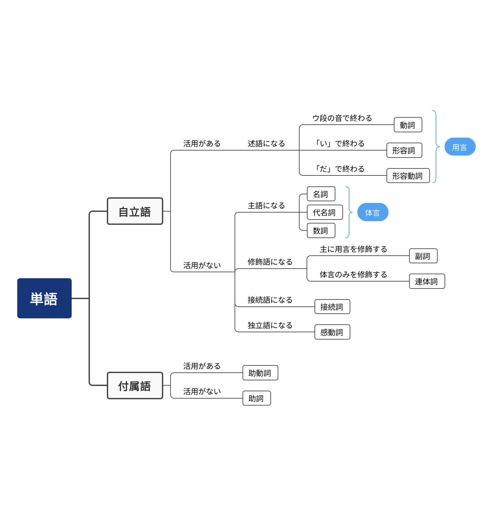

引言
本 Bunpō Notes 是日语翻译小昊子所发表的《现代日语语法教程》系列视频的对应笔记。请大力支持原作者。
该系列视频教程理论体系完善、具有足够深度，非常适合已有一定日语基础人士来完善知识体系；对于零基础人士来说，虽知识点已足够充分，但个人认为较短的篇幅不足以形成深刻的印象，建议搭配使用或多次通读。本笔记作者购入视频教程幻灯片后，发现幻灯片中内容并未加以解释，恐不适合闲散时间复习、查询使用，故作此笔记。基本忠于原始材料（少量添加），可用作日常复习，但仍然应当观看原始教程。
目录顺序和原版教程有所出入。若搭配视频观看，请参考附录 A 以正确对应视频分集。
全文内容简体中文、日文混排，且因作者能力、时间有限，无法投入过多精力在字形、排版方面，通篇使用 Unicode 编写。恕难保证最终读者所见字形符合中文、日文字形规范，请读者特别注意自行区分同码位字符的不同语言下字形异同，不可将所见字符认为一定合乎规范写法。
因时间、水平所限，出现错误在所难免。为发挥群策群力的优势，所有文件均托管于 GitHub。勘误请发起 Issue。若希望直接帮忙改正错误，请发起 Pull Request，这将更加方便！
本网站使用 rust-lang/mdBook 生成。
本网站的网站图标（Favicon）来自 Flaticon。
品詞

名詞1
名词谓语句
- 助動詞だ
- 肯定
- 学生だ (+终助词)。
- 否定
- 学生ではない。
- で：だ連体形
- は：副助詞
- 学生ではない。
- 疑问
- 学生（か）？
- 肯定
- 助動詞です
- 肯定
- 学生です。
- 否定
- 学生ではありません。
- 疑问
- 学生ですか？
- 选择
- 先生ですか、学生ですか。
- 肯定
- ...である
- 正式，演讲、文章用。不用否定形式。
- 正式
- 学生である。
- 正式+礼貌
- 学生であります。
- ...でございます
- 郑重。不用否定形式。
注意
- 副助詞は／格助詞が
- 提示主题
- 私は学生だ。
- 提示主语
- 私が学生だ。
- 提示主题
- 副助詞も
- 也
- 私は学生です。彼も学生です。
- 也
对应第1课。
指示詞 Ⅰ 1
こそあど系
- 说话人、听话人不在一起时
- こ 离说话人近
- そ 离听话人近
- あ 离说话人、听话人都远
- ど 不定
- 说话人、听话人在一起时
- こ 较近的
- そ 稍远的
- あ 离得很远的
- ど 不定
...れ
- これは本だ。
...の2
- この本は私の（本）だ。
...ような3
- このような本
- こんな本
...こ
- ここは学校だ。
- 教室はどこですか。
- どこが教室ですか。
...ちら / ...っち
- こちらは毛利探偵事務所でございます。
- こちらは私の先生です。
对应第2课。
...の是连体词。
...ような是连体词。
人称代名詞 1
一人称
- 私 わたし
- 私 わたくし
- 正式、礼貌
- 僕 ぼく
- 男
- 俺 おれ
- 上对下
- 俺様 おれさま
- 男
- あたし
- 女
- うち
- 关西方言→共通语
- 女性
二人称
- あなた
- 避免对上级、长辈；亲爱的
- 君
- 男；同辈
- お前
- 男；同辈
- あんた
- 礼貌程度低于あなた
- 僕
- 对不认识的小孩
三人称
- 对人
- 彼
- 彼女
- こ／そ／あいつ（不礼貌）
- 对物
- こ／そ／あ／どれ
複数表現
- たち
- 私たち
- 中性
- がた
- あなたがた
- 礼貌程度高
- ら
- 彼ら
- 礼貌程度低
- 没有彼女ら
- ども
- 私ども
- 自谦语
二人称 敬称
- 佐藤様
- 佐藤さん
- 佐藤君
- 佐藤ちゃん
- 営業部長殿2
- 佐藤氏
呼び捨て
- 不加敬称
- 关系亲密；上对下；内对外
对应第3课。
殿（どの）。
形容詞、形容動詞 1
基本活用
可参考活用表。
终止形
- 形容词
- 天空是蓝色的。
- 空は青い。形容词可以直接作谓语，不需要助动词だ。
- 空は青いです。表示礼貌的助动词です可以用于形容词后。
- 天空是蓝色的。
- 形容动词
- 教室安静。
- 教室は静かだ。形容动词的终止形直接作谓语，终止形都以だ结尾。
- 教室は静かです。表示礼貌，把だ换成です。
- 教室安静。
连体形
- 形容词
- 蓝色的天空
- 青い空。形容词直接修饰体言。
- 蓝色的天空
- 形容动词
- 安静的教室
- 静かな教室。形容动词连体形：词干+な。
- 安静的教室
连用形
- 形容词
- 教室很大也很安静。
- 教室は大きく、静かだ。形容词连用形：い→く。
- 词干+かっ用于过去时，见...かった。
- 教室很大也很安静。
- 形容动词
- 教室很安静很大。
- 教室は静かで、大きい。形容动词连用形：词干+で。
- 教室很安静很大。
打消助動詞ない
表示否定，形容词型活用。
- 这本书没意思。
- この本は面白くない。
- この本は面白くないです。
- この本は面白くありません。
- 那个演员没有名气。
- あの俳優さんは有名ではない。
- あの俳優さんは有名ではありません。
...かった
形容词过去式。使用形容词连用形：词干+かっ（只用于后接助动词た表示过去的情况）。
- 昨天冷。
- 昨日は寒かった。
- 昨日は寒かったです。表示礼貌的助动词です可以用于形容词过去时后。
- 昨天不冷。
- 昨日は寒くなかった。
- 昨日は寒くなかったです。
- 昨日は寒くありませんでした。
...だった
名词、形容动词过去式。即断定助动词だ连用形（だっ）+过去助动词た。
- 我原本是个学生。
- 私はもともと学生だった。
- 私はもともと学生でした。でした2：礼貌。
- 昨天教室安静。
- 昨日教室は静かだった。
- 昨日教室は静かでした。
- 昨天教室不安静。
- 昨日教室は静かではなかった。
- 昨日教室は静かではありませんでした。
连体词
只能连接体言的词。列举常见的几个：
- 大きな
- 小さな
- 色んな
- 同じ（它也有形容动词词性：同じだ）
对应第4课。
でした：断定助动词だ换为礼貌断定助动词です（连用形でし）+过去助动词た（终止形た）。
ありませんでした：动词ある（连用形あり）+礼貌助动词ます（未然形ませ）+特殊活用打消助动词ん（终止形ん）+礼貌断定助动词です（连用形でし）+过去助动词た（终止形た）。
動詞の構造と分類 1
動詞の構造
例：（之前）还没有被读。
- 読まれていなかった。
- 読ま
- 词干：读（未然形）。
- れ
- 语态：被动。
- てい
- 体：持续。
- なかっ
- 肯否：否定。
- た
- 时态：过去。
- 読ま
- 読まれていなかった。
- 読ま
- 动词読む（五段活用）的未然形読ま。
- れ
- 被动助动词れる（下一段动词型活用）的连用形れ。
- て
- 接续助词て。
- い
- 补助动词いる（上一段活用）的连用形い。
- なかっ
- 打消助动词ない（形容词型活用）的连用形なかっ。
- た
- 过去助动词た（特殊活用）的终止形た。
- 読ま
自動詞／他動詞
例
- 火柴正在燃烧。
- 自动词：没有宾语；表示状态、变化等。
- 我把火柴点燃了。
- 他动词：有宾语；有意志的行为。
判断倾向
有很多例外，可参阅：現代日本語自他対一覧表。
- 他動詞→自動詞
- す→eる→aる
- eる→五段動詞
- 例
- す→eる：壊す・壊れる
- eる→aる：始める・始まる
- eる→五段動詞：付ける・付く
格助词が、を
主格助词が；对象格助词を（进阶见格的交替）。
- 我跑。
- 私が走る。
- 我吃饭。
- 私がご飯を食べる。
活用
可参考活用表。
本文只有现代日语活用。所有动词的终止形的最后一个音节都是ウ段。
五段活用
活用发生在ア、イ、ウ、エ、オ五段；分布在か、さ、た、な、ば、ま、ら、わ行。
| 未然形 | 連用形 | 終止形・連体形 | 仮定形・命令形 | 未然形 | |
|---|---|---|---|---|---|
| か行 | 書か | 書き | 書く | 書け | 書こ |
| さ行 | 話さ | 話し | 話す | 話せ | 話そ |
| た行 | 待た | 待ち | 待つ | 待て | 待と |
| な行 | 死な | 死に | 死ぬ | 死ね | 死の |
| ば行 | 呼ば | 呼び | 呼ぶ | 呼べ | 呼ぼ |
| ま行 | 読ま | 読み | 読む | 読め | 読も |
| ら行 | 切ら | 切り | 切る | 切れ | 切ろ |
| わ行 | 買わ | 買い | 買う | 買え | 買お |
一段活用
均以る结尾，前面词干的最后一个音节在イ段（上一段）或エ段（下一段）。
| 未然形 | 連用形 | 終止形・連体形 | 仮定形 | 命令形 |
|---|---|---|---|---|
| 見 | 見 | 見る | 見れ | 見ろ／見よ |
| 起き | 起き | 起きる | 起きれ | 起きろ／起きよ |
| 食べ | 食べ | 食べる | 食べれ | 食べろ／食べよ |
変格活用
只有两个词：来る（カ行変格活用動詞）、する（サ行変格活用動詞）。
| 未然形 | 連用形 | 終止形・連体形 | 仮定形 | 命令形 |
|---|---|---|---|---|
| 来（こ） | 来（き） | 来（く）る | 来（く）れ | 来（こ）い |
| し／せ／さ | し | する | すれ | しろ／せよ |
对应第5课。
格助詞1
が
- 主语
- 山田さんが走る。
- 空が青い。
- 本がある。
- 状态的对象
- パソコンが欲しい。
- 水が飲みたい。
- 能力的对象
- ピアノが上手だ。
- 英語が話せる。
を
- 宾语
- 山田さんが本を読む。
- 动作的起点
- 家を出る。
- 学校を休む。（抽象的引申）
- 动作的经过点
- 十字路を曲がる。
- 飛行機が空を飛ぶ。
- 楽しい一日を過ごす。
- 副助詞は的关系
- パンを食べる。（パン是新信息，吃的是面包）
- パンは食べる。（パン是旧信息，面包呢我是吃的）
に
- 自动词的对象
- 趙さんに会う。
- 动作的附着点
- 壁に写真を貼る。
- 动作的终点
- 東京に行く。
- 变化的结果
- 氷が水になった。
- 使役态的动作执行者
- 山田さんに本を読ませる。
- 被动态的动作执行者
- 先生に褒められる。
- 比较的基准
- 山田さんは父さんに似ている。
- 范围
- テレビは目に悪い。
- 时间的频率
- オリンピックは4年に１度開催される。
- 事物的存在
- 机の上に本がある。
- 动作的时间
- ７時に学校に行く。
- 来週
に学校に行く。（非具体的时间点直接做副词，不加格助词）
- 目的
- シャツを買いに行く。
- 表示追加
- 山田さんに佐藤さんに田中さんが来る。
- 原因
- 人の多さにびっくりした。
へ
- 方向
- 飛行機は南へ飛んでいく。
- 终点
- 学校へ行く。
から
- 起点
- 地点
- 中国から来た。
- 时间
- 明日から夏休みだ。
- 抽象
- 私から説明する。
- 原料
- ブドウからワインを作る。
- 地点
- 使役态的动作执行者
- 鈴木さんから説明させる。
- 被动态的动作执行者
- 先生から褒められる。
まで
- 终点
- 地点
- 家まで歩く。
- 时间
- 八月一日から九月三十日まで夏休みだ。
- 抽象
- 子供から大人まで人気がある。
- 地点
より
- 比较
- 北京は東京より人が多い。
- から的书面语
- これより会議を始める。
で
- 动作发生的地点
- 食堂でご飯を食べる。
- 事物成立的条件
- 日本では、三月から五月までは春です。
- 动作执行者的数量
- 一人でやる。
- 方式、手段
- ペンで字を書く。
- その仕事は自分でやる。（抽象）
- 原材料（一眼看出来）
- 木で机を作る。
- 原因
- 病気で学校を休む。
- 状态
- 裸足で歩く。
- 花费的时间
- 日本語が一年間で上手になった。
の
- 会社の人
- 机の上
- 雨が／の降る日
と
- 和（同格）
- 田中さんと吉田さん（と）
- 动作的同伴
- 真由美さんと結婚します。
- 比较异同的基准
- あのカバンは私のカバンと同じだ。
- 引用从句
- 朝起きた時に、「おはよう」と言います。
- これはいいアイデアだと思います。
や
- 例示
- 机の上に本やノート（など）がある。
对应第6课。
動詞の未然形とその使い方 1
参考活用表。
否定
- 未然形（五段动词用ア段）加打消助动词ない。
- 五段：行かない
- 一段：起きない
- カ変：来ない
- サ変：しない
可能态
被动态
- 未然形加受身助动词れる或られる。
- 五段：行かれる（五段动词用ア段未然形）
- 一段：起きられる
- カ変：来られる
- サ変：される（する使用未然形さ）
- 例
- 私は先生に叱られる。
- 私は、電車で隣の人に足を踏まれる。
- この橋は十年前に建てられた。
- この作品は、魯迅によって書かれた。
- 父に死なれた。（受害关系）
使役态
- 未然形加使役助动词せる或させる。
- 五段：行かせる（五段动词用ア段未然形）
- 一段：起きさせる
- カ変：来させる
- サ変：させる（する使用未然形さ）
- 例
- 父は私を留学させた。
- 先生は、私に日本語を勉強させた。
意志推量
- 未然形加推量助动词う或よう。
- 五段：行こう（五段动词用オ段未然形）
- 一段：起きよう
- カ変：来よう
- サ変：しよう（する使用未然形し）
对应第8课。
五段动词使用れる变为可能态时，要发生约音。如行く变为行か+れる，か和れ约音为け，因此最终是行ける。
する，用できる表示能做。
動詞の連用形とその使い方 1
連用形名詞
- 彼は走りが速い。
- 京都へ友達に会いに行く。（表目的）
- 京都へ旅行に行く。（表目的）
- 京都へ旅行しに行く。（表目的）
複合動詞
- 書き直す
- 咲き誇る2
動詞の連用形による中止
- お父さんは新聞を読み、私はアニメを見る。（书面）
...ます
- 礼貌
对应第9课。
咲き誇る（さきほこる），盛开。
テンスとアスペクト Ⅰ 1
时 2
- 相对性
- 絶対テンス：说话时为基准
- 相対テンス：从句和主句的时间关系
- 现在、将来、过去
体 3
- 完成相 読む、読んだ
- 継続相 読んでいる、読んでいた
- 結果相 結婚している
- 習慣相 毎日本を読んでいる
- ...
对应第10课。
英语：tense；日语：テンス。
英语：aspect；日语：相、アスペクト。
副助詞 Ⅰ1
本节给出部分副助词。
は
- 主题
- 私は学生です。
- 学校には、先生がたくさんいます。
- 对比
- お父さんは新聞を読み、私はアニメを見る。
- 山田さんはドイツ語は上手です。（隐含对比：擅长德语，不擅长别的）
も
- "也"
- 田中さんは学生です。佐藤さんも学生です。
- 强调数量多
- 何万人も僕の動画を見ました。
だけ
- 只
- 登録者数は３０００人だけです。
- あとは寝るだけです。
- 君にだけ話します。
- 君だけに話します。（だけ可直接接在名词后）
しか
- 后接否定表肯定
- 登録者数は３０００人しかいないです。
- 私は肉しか食べません。
など
- 例示
- 机の上に本やノートなどがあります。
でも
- 例示
- お茶でも飲もう。
- 最低限
- それでも大丈夫です。
まで2
- "连"，范围的扩大
- 佐藤さんや田中さんが来ました。山田さんまで来ました。
- 变化的程度
- 日本語を勉強し、留学生試験に合格するまでになりました。
さえ
- 本不该出现的情况出现
- 佐藤さんや田中さんが来ました。山田さんさえ来ました。
こそ
- "才"，强调
- 俺様こそが神だ。
くらい / ぐらい
- 约数
- １０人くらい来ました。
- 大约的程度
- そのくらいのことは自分でできます。
ほど
- 左右
- ５分ほど待ちます。
- 比较的基准（否定）
- 今年の冬は去年ほど寒くない。
- 程度
- 一般程度
- 泣きたいくらい／ほど感動した。
- 极限程度
- 死ぬほど疲れた。
- 一般程度
ばかり
- 限定
- 肉ばかり食べる。
- 不满的情绪
- 嘘ばっかり！
对应第11课、第12课。
まで除副助词外，也是格助词。
補助動詞1
特点
- 自己失去原来的含义。
- 接在其他动词て形后。
いる・ある
- 持续
- 本を読んでいる。（他动词読む，持续）
- 窓が開いている。（自动词開く，表达状态，无意志）
- 窓が開けてある。（他动词開ける，表达有意志行为，且结果持续）
おく
- 准备
- 授業の前に、復習しておきました。
しまう
- 完成
- 彻底
- ご飯は全部食べてしまった。
- 遗憾
- 電車に傘を忘れてしまいました。
- 决心
- 夕ご飯は、毎日四時に食べてしまいます。
- 彻底
みる・みせる
- 尝试
- 着てみます。
- 决心
- 絶対に成功してみせます！
いく・くる
- 时间
- どんどん熱くなってきた。（くる，过去到现在）
- どんどん熱くなっていく。（いく，现在到将来）
- 方位
- 鳥が飛んでいった。（いく，近到远）
- 鳥が飛んできた。（くる，远到近）
- 抽象（表达生动自然）
- 日本語を６年間教えてきました。
- これから教えていきます。
くださる
- 请
- ちょっと待ってください。
对应第13课。
授受表現1
あげる
- あげる
- 私は李さんに本をあげた。
- （私は）姉の前髪を切ってあげた。
- 差し上げる 自谦语
- お電話を差し上げます。
- お料理を作って差し上げます。
- やる 无尊敬
- 花に水をやる。
- 手伝ってやる。
もらう
- もらう
- 私は李さんに本をもらった。
- お父さんに駅まで迎えに来てもらった。
- いただく
- ガイドさんに案内をしていただきました。
くれる
- くれる
- 李さんが本をくれた。
- みんなが動画を見てくれた。
- くださる
- みんなが動画を見てくださいました。（特殊活用）
对应第14课。
終助詞1
放在终止形后。
終助詞
か
- 疑問：趙さんは学生ですか。
- 反語：そんなこともできないか。
- 劝诱、自言自语：食事にしようか。
- 感动：やっとできたか。
の
- 疑问：ご飯は食べたの？
- 断定：ご飯は食べたの。（女性用）
な（なあ）
- 禁止：誰にも話すな。（语气非常重）
- 感叹：綺麗な月だな（あ）。
ね（ねえ）
- 感叹：素晴らしい景色だね（え）。
- 提醒：ぜひ来てくださいね。
- 确认（向对方）：明日は日曜日ですね。
- 确认（向自己）：私も賛成ですね。
よ／わ
- 劝诱：早く行こうよ。
- 强调（降调）、通知（升调）：明日は日曜日ですよ。
- 警告：死んでしまうよ。
- 强调：楽しみだわ。（女性用）
とも
- 自信：それはできるとも。
っけ
- 回想：会議は何時からだったっけ。（"～来着？"）
さ
- 充满自信的判断：きっとできるさ。（男性用）
ぞ
- 强调：始めるぞ！（语气强烈，男性用）
かな／かしら
- 疑问、自言自语：明日は日曜日かな。（かしら→女性）
注意
- 终助词的并用
- よね、かよ顺序不能颠倒
- 由终助词使用产生的派生义
- トイレはゴミ箱ではないですよね？（不要在厕所乱扔垃圾！）
- 文節の間
- 私はね、昨日ね、新宿へね、行ったよ。
- 和助动词だ的连用
- 不能有だ：か、かな／かしら、さ
- 接体言必须有だ：な（あ）、ぞ、わ、とも
对应第15课。
文の構造1
単文
- 一个谓语
- 例
- 私は学生だ。
- 私は趙さんに本をあげた。
- 明日の朝の六時ごろ、ついに日本の最南端に上陸する。
重文
- 两个对等谓语
- 例
- 雨が降り、風が吹く。
複文
- 两个不对等谓语
- 原因、理由、目的、条件等
- 台風が来たので、学校は休みです。
- 连体修饰
- 彼女が作ったケーキは、美味しかった。
- 名词句化
- テーブルの上のケーキを食べたのは、私です。
- 引用
- 朝起きた時、「おはようございます」と言いました。
重複文
私は毎晩仕事終わりにのんびりしながら飲むお酒が大好きだ。
对应第16课。
連体修飾と連用修飾1
連体修飾
- 名词
- 私のペン
- 東京の大学
- 形容词
- 白い花
- 形容动词
- きれいな花
- 连体词
- このような花
- 动词、助动词
- 空を飛んでいる鳥
- 母さんがくれたプレゼント
- 咲かない花
連用修飾
- 形容词
- 美しく踊る
- 形容动词
- 中顿
- きれいで...
- 副词用法
- きれいに...
- 特殊（拟声拟态）
- いろいろ（と）勉強になった
- しとしと（と）降る
- 中顿
- 格成分
- ペンで字を書く
- 友達と遊ぶ
例
私は母からもらったお金で一番好きな歌手のアルバムを買った。
对应第17课。
推量1
だろう
- 名詞
- 佐藤さんは学生だろう。（声调上扬表确认）
- 形容詞
- このリンゴは甘いだろう。このリンゴは甘かろう。
- 形容動詞
- 教室は静かだろう。
- 動詞
- 彼は帰っただろう。
でしょう
- 名詞
- 佐藤さんは学生でしょう。
- 形容詞
- このリンゴは甘いでしょう。
- 形容動詞
- 教室は静かでしょう。
- 動詞
- 彼は帰ったでしょう。
...（よ）う
- 表推测不常用，通常用于意志
- 例
- 彼は帰ろう。
- 彼は帰りましょう。
まい
- 否定，不常用，相当于ないだろう
- 例
- 佐藤さんは来まい。
- 接続
- 五段活用の動詞、助動詞「ます」：終止形
- 言うまい
- 思いますまい
- 五段活用以外の動詞及び助動詞「せる・れる」：未然形
- 落ちまい
- しまい
- 五段活用の動詞、助動詞「ます」：終止形
对应第18课。
様態・伝聞・推定・比況1
様態助動詞 そうだ
- 接続
- 形容詞・形容動詞
- 語幹+そうだ
- 動詞
- 連用形+そうだ
- 例外
- よい→よさそうだ
- ない→なさそうだ
- 形容詞・形容動詞
- 例
- これは面白そうな本ですね。
- 楽しそうに笑っています。
伝聞助動詞 そうだ
- 接続
- 終止形+そうだ
- 例
- あの子は元気だそうだ。
- 雨が降るそうですね。
- これは良いそうだな。
推定助動詞 らしい
- 接続
- 動詞
- 終止形+らしい
- 名詞・形容動詞
- 語幹+らしい
- 動詞
- 例
- 好像，但有客观确切的信息来源
- 佐藤さんは明日誕生日らしいよ。
- 符合前面词性质
- 夏らしい天気ですね。
- 自分らしく生きます。
- 日本語らしい日本語を身に付けます。
- 好像，但有客观确切的信息来源
比況助動詞 ようだ
- 接続
- 用言
- 連体形+ようだ
- 体言
- 格助詞「の」+ようだ
- 一部の連体詞「この・その・あの・どの...」+ようだ
- 用言
- 例
- 好像，没有客观确切的信息来源
- この道は、駅まで続いているようです。
- 比喻
- 人生は桜のようだな。
- 今日は、サウナの中にいるような天気ですね。
- 例示
- 父のような人間になろう。
- "正如"
- このグラフが示すように、中国では高齢化が進んでいます。
- 好像，没有客观确切的信息来源
比況助動詞 みたいだ
- 接続
- 用言
- 連体形+みたいだ
- 体言
- 体言+みたいだ
- 用言
- 例
- この道は、駅まで続いているみたいです。
- 人生は桜みたいだな。
- 今日は、サウナの中にいるみたいな天気ですね。
- 父みたいな人間になろう。
- 仅口语，不能用在书面语
区别
- 直接转述
- 雨が降るそうだ。
- 根据眼前景象主观判断
- 雨が降りそうだ。
- 根据可靠信息客观判断
- 雨が降るらしい。
- 根据自身感觉主观判断
- 雨が降るようだ。
- 雨が降るみたいだ。
对应第19课。
感情形容詞・形容動詞、希望1
感情形容詞、形容動詞
概念
- 嬉しい、悲しい、怖い、不思議だ......
- 表达第一人称感情感觉
- 询问第二人称感情感觉
- 不能陈述第二人称、第三人称
...がる
- 表达第二、第三人称的感情
- 嬉しがる、不思議がる（五段活用）
- 例
- 佐藤さんはうれしがっている。
希望
...たい
- 只能用于第一人称
- 接続：連用形+たい；形容詞型活用
- 例
- リンゴが食べたい。
- リンゴが食べたいですか。
- リンゴが食べたくない。
- 彼女は海外旅行に行きたがっています。
...欲しい
- 体言+欲しい
- 想要什么。
- 可以写汉字形式。
- 例
- 同じ趣味がある友達が欲しい。（欲しい形容词，用格助词が）
- 母は大きい冷蔵庫を欲しがっています。（欲しがる是动词，用格助词を）
- 動詞て+ほしい
- 想让别人做什么。
- 作为补助形容词时不写汉字形式。
- 例
- 彼に早く謝ってほしい。
- 早く晴れてほしい。（抽象）
对应第20课。
使い方に注意すべき用言1
いる・ある
- 无生命、意志
- あそこに机があります。
- 有生命、意志
- わたしは3階にいます。
- 小さな犬がいますね。
する・なる
- 有意志
- 野球をします。
- 无意志
- 気温は30度になりました。
- 今日は25日になりました。
する
- "有"
- 味／匂い／感じがする。
- 价值
- この絵は１億円しますよ。
- 花费时间
- １年した。
- 穿戴
- ネクタイをします。
見る・見える、聞く・聞こえる
- 見る・見える
- 有意志：黒板を見てください。
- 无意志：黒板が見えます。
- 有意志：黒板が見られます。
- 聞く・聞こえる
- 有意志：音楽を聞きます。
- 无意志：音楽が聞こえます。
- 有意志：音楽が聞けます。
良い・いい
- いい
- 口语，没有变形
- 良い
- 有变形
- 良く
- 良くない
- 良かった
- 良くなかった
- ...
- 有变形
- 一般不用良い，用いい
对应第21课。
接続助詞1
接续的种类
- 顺接
- 假定：如果下雨，我不出去。
- 确定：因为下雨了，我不出去。
- 逆接
- 假定：就算外面下雨，也要出门。
- 确定：虽然在下雨，也出门了。
- 并列
- 又去了北海道，又去了青森。
- 一般条件
- 把水冷却会变成冰。
- 单纯接续
- 早起，学习。
- 其他
仮定形
- 形容詞：多い→多けれ
- 形容動詞：静かだ→静かなら
- 助動詞「だ」：学生だ→学生なら
- 動詞（略）
对应第22课。
順接 1
- ...ば 仮定形+ば
- 假定
- 練習すれば、うまくなります。
- 确定
- 春になれば、桜が咲きます。
- 假定
- ...と 終止形+と
- 假定
- 急がないと、遅刻するよ。
- 假定
- ...て（で） 連用形+て；名・形動語幹+で
- 确定
- 寒くて風邪をひきます。（有因果关系，但因果关系不是很强烈）
- 确定
- ...から 終止形+から
- 親切な人だから、みんなに好かれます。（主观判断）
- ...ので 連体形+ので；名詞+な+ので
- 親切な人なので、みんなに好かれます。（客观判断）
对应第22课。
逆接1
- ...と
- 接続
- 動詞：未然形+（よ）う+と（も）
- 形容詞：連用形+とも；語幹+かろうと
- 名詞・形容動詞：語幹+だろうと、語幹+であろうと
- 特殊：動詞未然形+（よ）うと+動詞終止形+まいと
- 例
- 何と言われようと、平気だ。
- たとえどんなに反対されようと、自分のことは自分で決める。
- 値段が高かろうと何だろうと、欲しい物は欲しい。
- 雪だろうと、雨だろうと、試合は行う。
- 雨が降ろうと降るまいと、試合は行う。
- 接続
- ...が（确定） 終止形+が
- 一生懸命努力しましたが、失敗しました。
- ...が（假定）
- 接続
- 動詞：未然形+（よ）う+が
- 形容詞：語幹+かろうが
- 名詞・形容動詞：語幹+だろうが、語幹+であろうが
- 特殊：動詞未然形+（よ）うが+動詞終止形+まいが
- 接続
- ...て（で） 連用形+て；名・形動語幹+で
- 确定、逆接，但只在固定搭配、固定语境使用
- 知っていて知らないふりをする。（明明知道却假装不知道）
- 确定、逆接，但只在固定搭配、固定语境使用
- ...ても（でも） 連用形+ても；名・形動語幹+でも
- 假定：つらくても、我慢しよう。（就算辛苦，也忍一下吧）
- 确定：何度見ても、飽きない。（无论看多少次，都不会厌倦）
- ...け（れ）ど（も） 終止形+けれども 主要口语使用
- 确定：眠いけれど、勉強します。
- ...のに 連体形+のに；名詞+な+のに
- 确定：何度も練習したのに、試合で負けた。
- ...ながら（も） 口语常见
- 接続
- 動詞：連用形+ながら
- 形容詞：終止形+ながら
- 名詞・形容動詞：語幹+ながら
- 例
- ４０度の熱がありながら、学校へ来た。
- 残念ながら、現実は残酷だ。
- 接続
- ...つつ（も） 動詞連用形+つつ（も） 书面语常见
- ４０度の熱がありつつ、学校へ来た。
对应第23课。
並立1
- ...て（で） 連用形+て；名・形動語幹+で
- あの人は、背が高くて、カッコいいです。（直接连用偏书面，有て偏口语）
- 毎朝、音楽を聴いて、会社へ行きます。（直接连用偏书面，有て偏口语；有较弱的时间先后）
- 毎朝、音楽を聴いてから、会社へ行きます。（から加强时间先后）
- 毎朝、音楽を聴いて
から、ジョギングをしてから、会社へ行きます。（加から，不能超过两个动作）
- 毎朝、音楽を聴いて
- ...ば 仮定形+ば 表并列，非假设
- 山もあれば、川もある。
- ...たり 連用形+たり 举例（又...又...）；副词性质
- 寒かったり暑かったり、気温差の激しい毎日ですね。
- 日曜日は、テレビを見たり、本を読んだりします。
- わからないことは、インターネットで調べたりします。
- ...し 終止形+し
- 单纯并列：田中先生は優しいし、カッコいいし、それに教え方も上手です。
- 原因并列：漢字は多いし、文法は難しいし、私は日本語の勉強があまり好きではありません。
对应第24课。
一般条件1
- ...と 終止形+と 一...就...
- 春になると、桜が咲きます。
- そのボタンを押すと、お金が出ます。
对应第24课。
単純接続1
- ...が 終止形+が
- すみませんが、トイレはどこですか。
- ...け（れ）ど（も） 終止形+けれども
- レポートのことですけれども、来週の月曜日に提出してください。
对应第24课。
その他 1
- ...ながら 連用形+ながら 连用修饰：一边......一边...... 偏口语
- 音楽を聴きながら、宿題をします。
- ...つつ 連用形+つつ 连用修饰：一边......一边...... 偏书面
- 彼女との写真を眺めつつ、これまで二人で行った場所や過ごした時間を懐かしんだ。
- ...なら（ば） ば一般省略
- 大学生なら誰でも知っています。
- あの大学へ行くなら、自転車が便利です。（接句子：建议、请求）
- A：田中さんはいますか。B：田中さんなら、もう帰りましたよ。（强调）
- ...たら
- 假定、顺接：宝くじが当たったら、世界一周旅行をしたいなあ。
- 确定、顺接：夏になったら、海に行こう。
- 立即：授業が終わったら、すぐ帰ります。
- 偶然：買い物をしていたら、クラスメートの王さんに会った。
- 「と／たら／なら／ば」の違い
- と只能后接肯定陈述句、后句不能表达意志
- 正确：右へ曲がると、本屋があります。
- 错误：右へ曲がると、本屋へ行きます。
- 错误：右へ曲がると、本屋へ行ってください。
- ば只能后接肯定陈述句、后句不能表达意志
- 正确：この本を読めば、この言葉の意味が分かります。
- 错误：この本を読めば、寝ましょう。
- 错误：この本を読めば、寝てください。
- 特殊：寒ければ、窓を閉めてください。（前后主语不同，后句可以表达意志）
- たら和なら的时间问题
- 错误：学校に行ったら、自転車が便利ですよ。（たら的后句必须是前句已经发生之后）
- 正确：学校に行くなら、自転車が便利ですよ。
- なら不能用于必定发生的事情
- 正确：春になると、桜が咲きます。
- 正确：春になれば、桜が咲きます。
- 正确：春になったら、桜が咲きます。
- 错误：春になるなら、桜が咲きます。（春天必定会到来）
- ば和なら不能接续敬体
- 正确：このボタンを押しますと、ドアが開きます。
- 正确：このボタンを押しましたら、ドアが開きます。
- 错误：このボタンを押しませば、ドアが開きます。
- 错误：このボタンを押しますなら、ドアが開きます。
- ば和なら不能表达既定事实
- 正确：この薬を飲むと、熱が下がった。
- 正确：この薬を飲んだら、熱が下がった。
- 错误：この薬を飲めば、熱が下がった。（退烧是过去时，已经是事实）
- 错误：この薬を飲むなら、熱が下がった。
- と不能用于不可能的情况
- 正确：１億円あったら何を買いたい？
- 正确：１億円あるなら何を買いたい？
- 正确：１億円あれば何を買いたい？
- 错误：１億円あると何を買いたい？
- と只能后接肯定陈述句、后句不能表达意志
对应第25课。
文法化 1
语法化：本来有实际意义的词，其实际意义被削弱或者完全丧失，转而用于表达语法。
- 例句：今、その問題について議論しているところだ。
- について
- 格助詞「に」+動詞「つく→ついて」
- 意义：关于......
- ところだ
- 名詞「所（ところ）」+助動詞「だ」
- 意义：正在......
- 语法化后不能随意转换（以について为例）
- 错误：今日の議論はその問題についた。（只能做连用修饰，不能做谓语）
- 错误：今日はその問題によくついて議論していた。（中间不能插入其他成分）
- について
对应第26课。
形式体言 1
形式体言：词性是名词，但是原本的意思已经消失，用于表达语法。一般使用平假名，不用汉字。
- 例句：日本に行ったことがある。
对应第26课。
の、こと1
の
- 指代前文出现的事物
- 黒いカバンは佐藤さんのですか、青いのは私のです。
...のだ（...んだ）
- 加强语气
- 私はバスで来たのです。
- A：どうして遅れたんですか。B：バスが来なかったんです。
- 确信的语气
- 道が込んでいる。きっと事故があったんだ。
- 承上启下
- ちょっとお話があるんですが、今よろしいですか。
- 不能随便表示强调
- 错误：私の名前は○○なんです。（没有任何需要强调的理由，会给人非常不愉快的语感）
- 正确：実は、私の名前は○○なんです。
...のだから
- 强调双方都知道的原因
- もう子供じゃないから、自分の部屋は自分で掃除しなさいよ。
- もう子供じゃないんだから、自分の部屋は自分で掃除しなさいよ。
動詞の名詞化
- 例
- 単語を覚えるのは難しい。（单纯体言化，没有附加含义）
- 単語を覚えることは難しい。（强调内容或事件）
更倾向の的情况
- 感想・評価
- 料理を作るのは楽しい。
- 嗜好
- 寿司を食べるのが好きです。
- 行為
- 料理を作るのを忘れた。
- 佐藤さんが結婚したのを知っていますか。
更倾向こと的情况
- 提案・約束・命じる・祈る
- この仕事を辞めることを決意した。
- 合格できることを祈っています。
只能用の的情况
- 感官
- 彼が宿題をしていたのを見た。
只能用こと的情况
- 能力「...ことができる」
- 彼は日本語を話すことができる。
- 反複「...ことがある」
- このバスはよく遅れることがある。
- 経験「...ことがある」
- 英語を勉強したことがありますか。
- 決定「...ことにする／なる」
- 仕事を辞めることにした。（する，有说话人的意志）
- 来月から日本へ出張することになった。（なる，没有说话人的意志）
- 来週の金曜日は東京へ出張に行くことになっている。（なっている，已经决定好的事情）
- 伝聞「...とのことだ」
- 先ほど、田中さんから電話があって、少し遅れるとのことです。
- 伝聞・結論「...ということだ」
- 明日は雨が降るということです。（传闻）
- 社長に「明日から来るな」と言われた。つまり首ということかな。（结论：被社长说明天不要来了。也就是说被开除了吧。）
- 没有做某事的必要「...ことはない」
- 彼はとても優しいから、怖がることはないよ。
- 理由「...ことから」
- 道路が濡れていることから、雨が降ったということがわかる。
- 要求
- レポートは来週火曜日までに提出すること。
- 忠告「...ことだ」
- 健康が心配なら、もっと野菜を食べることだね。
- 对人的推测「...のことだから」
- 毎朝早起きのおばあちゃんのことだから、明日も５時には起きていることでしょう。
- 否定状况伴随「...ことなく」 书面用
- 彼は最後まであきらめることなく、頑張った。
- 理由「...ことだし」
- 天気もいいことだし、今日は外で遊ぼうよ。
- 引出话题「...ことになると／...こととなると」
- 父は食事のマナーのことになると、とてもうるさいです。（父亲一提到吃饭的礼仪，就非常啰嗦。）
- 感情「...ことに」 令人......的
- 悲しいことに、大切に育てていたペットが事故で死んでしまった。
- 詠嘆「...ことだろう（口语）／...ことか（书面）」
- ようやくJLPT N1に合格した李さんは、どんなに嬉しかったことだろう。（终于过了JLPT N1的小李是多么高兴啊。）
- 程度低、不重要「...ほどのことではない」
- そんなに真剣に悩むほどのことではない。（这不必那么地懊恼。）
- 委婉的肯定（"不是不"）「...ないことはない」
- できないこともないですけど、少し時間をいただきたいです。（不是不能办到，但是想要多些时间。）
- 条件「...ないことには...ない」
- 彼が来ないことには、会議を始めることができない。（他不来，就不能开始会议。）
- 谢罪的理由「...こととて」 生硬的表达
- 子供のやったこととて、どうか許してやってください。
- 强调文后部分「...もさることながら」
- 日本語は私にとって漢字もさることながら、文法も難しい。（日语对于我来说，汉字自然是不必说了，语法更难。）
对应第27课、第28课。
もの 1
- 基本用法
- 汉字：もの、物、者
- 例
- 指物：どんなものを買いましたか。
- 指人：お前はいったい何者？
- 抽象：愛というものは不思議なものです。
- 口语：もの→もん
- 总觉得......的感觉 ...ものがある
- その男の証言には、不自然なものがある。
- 对很难实现的事物的期望 ...ものなら 一般后接命令或希望 前接可能态
- やれるもんなら、やってみろ。（如果能做到，那就做做看吧。）
- やり直せるもんなら、今すぐやり直したい。（如果能重来，现在就想重新来过。）
- 导致严重后果 ...ものなら 前接未然形（意志）
- この先生の授業で、宿題を忘れようものなら、どれだけ叱られるかわからない。（这个老师的课，如果忘了做作业，那不知道会被骂得多惨。）
- 谢罪的理由 ...ものだから
- すみません。ビールは苦手なものですから。
- 当然 ...ものだ
- たくさん運動したら疲れるものです。
- 詠嘆 ...ものだ
- 对一般性事实：時間が経つのは本当に早いものですね。
- 对过去的事情：子供の時は、よく友達とサッカーをしたものだ。
- 绝不做 ...ものか 强烈的否定
- 店員の態度は悪いし、料理は美味しくないし、こんな店二度と来るもんか。
- 理由 ...もの／だもの 有撒娇的语气，小孩（上小学前）或女生使用
- だって牛乳嫌いだもん。
- 某时间段内一直 ...というもの
- ここ１か月というもの、ずっと会社を休んでいる。
- 并不能说是如何 ...というものではない
- お金があれば、幸せだというものでもない。
- 不能做但已经做了 ...ものではない
- こんな料理、お客さんに出せたもんじゃないよ。（可能态过去时）
- 站在某立场上必须做 ...たるもの
- 医者たるもの、患者の命を優先に考えるべきだ。（身为医生，应该优先考虑患者的生命。）
- 遗憾、不满 ...ものを
- 結局、二人は別れることになったそうだ。あの時、彼が素直に謝っていればよかったものを。（听说到最后两个人还是分手了。那个时候，如果他能够诚恳地道歉就好了。）
- 表达转折 ...ものの
- 東京大学を卒業したものの、仕事が見つからない。（从东京大学毕业了，但找不到工作。）
- 持续性的影响 ...てからというもの
- 出産してからというもの、お酒を飲まなくなった。（孩子出生之后，就不喝酒了。）
- 不怕某事 ...をものともせず 不用于第一人称
- 両親や周囲の反対をものともせず、二人は結婚した。
对应第29课、第30课。
とき、ところ 1
とき
- 什么的时候
- 風のときは、早く寝たほうがいいですよ。
- 相对时（相対テンス）
- 主句在先
- 教室を出るとき、電気を消します。（先关灯，再出教室）
- 教室を出る前に、電気を消します。
- 子句在先
- 教室に入ったとき、電気をつけます。（先进教室，再开灯）
- 教室に入ったあとで、電気をつけます。
- 教室に入ってから、電気をつけます。
- 主句在先
ところ
- 即将、正在、刚刚 ...ところだ
- 例
- 今、ご飯を食べるところです。
- 今、ご飯を食べているところです。
- 今／さっき／ちょうど、ご飯を食べたところです。
- 与ばかり的区别
- ところ只能是刚刚（很短的时间）
- 错误：この服は、１週間前に買ったところです。
- 正确：この服は、１週間前に買ったばかりです。
- ところ后面不能再加体言
- 错误：買ったところの服
- 正确：買ったばかりの服
- ところ只能是刚刚（很短的时间）
- 例
- 差一点就 ...ところだった 前面不用过去时
- もう少しで彼を怒らせるところでした。（差一点就把他惹怒了。）
- 在...状况中却... ...ところ（を）
- 本日はお忙しいところ、お時間を割いていただき、ありがとうございました。
- 正在...突然发生某事 ...ところに／へ 前面用持续体
- 困っていたところに彼女が救いの手を差し伸べてくれた。
- 大致的程度 ...といったところだ／...というところだ
- ここから目的地までは車で１時間といったところでしょう。
- 偶然发现、预想外的事件 ...ところ 前面用过去时
- 友達に相談したところ、一緒に手伝ってくれることになった。（跟朋友聊了一下，他就要帮我。）
- 彼なら知っていると思って聞いたところ、彼も知らなかった。（本来以为他知道去问他，结果他也不知道。）
- 时间先后 ...ところで 前面用过去时
- ご飯ができたところで夫が帰ってきた。
- 逆接关系（无论如何都） ...ところで 前面用过去时
- 今さら謝ったところで許されないだろう。
- 根据状况或样态的主观推测 ...ところを見ると
- 叱られて何も言わないところを見ると、やっぱり反省しているんだろう。（从他怎么被骂都什么都不说来看，果然应该是在反省吧。）
对应第31课。
ため、よう 1
ため
- 基本用法
- 漢字：為。（一般不写汉字）
- 意义：为了；因为。
- 目的、原因 ...ため（に） 有に更口语
- 目的
- 未来のために今頑張ります。
- 彼女のためにプレゼントを買った。
- 原因 多表示负面原因
- 大雨のため、試合は中止された。
- 電車が遅れたため遅刻してしまいました。
- 目的
- 目的 未然形（ア段）+んがため（に） 非常书面非常生硬
- 自分の店を持たんがため、必死で働いている。
- 現状を維持せんがための政策。（后接ん，する未然形用せ）
よう
- 基本用法
- 漢字：様。
- 意義
- 様態：彼の喜びようは大変なものだった。
- 方法 接否定说法，肯定用連用+方：作り方
- 言いようもないほど美しい。
- さすがとしか言いようがない。（只能说太厉害了。）
- 风格：上代様（平安时代的风格）
- 目的的达成、建议、祈望 ...よう（に）
- 目的的达成 前面用表示状态的词
- みんなに聞こえるように大きい声で話してください。
- 日本語がうまく話せるようになりたいです。
- 忘れないように、メモをしておきます。
- 建议
- 忘れ物をしないよう注意してください。
- 祈望
- 病気が治りますように。（に在句尾不能省略）
- 目的的达成 前面用表示状态的词
- ...ようにする／なる
- する 有说话人意志
- 無理しないようにしてくださいね。（请不要勉强哦。）
- 健康のためにできるだけ毎日運動するようにしています。（为了健康，尽可能每天都运动。）
- なる 无说话人意志
- やっと運転できるようになりました。（终于会开车了。）
- ログインしないと閲覧できないようになっている。（不登录就没法阅览。）
- する 有说话人意志
- 比喻（与事实不一致） ...かのようだ
- ３月なのにまた、寒くなりましたね。まるで真冬に戻ったかのようですね。（明明已经3约了，又冷起来了呢。简直回到了冬天一样。）
- 宝物かのように大切にしています。（会像宝贝一样珍惜的。）
- 即使假设实现，也不会达到预期 ...ようでは
- 相手のミスを願うようではプロにはなれませんよ。（期待对手的失误，就不能成为职业选手哦。）
- 何度説明してもわからないようでは、やっぱり君はこの仕事に向いていないんだろう。（怎么说明都不懂的话，你果然是不适合这个职业的吧。）
- 假定 ...ようなら・ようだったら・ようであれば
- 一人で運べないようなら、私が手伝おうか。（如果一个人搬不动的话，我来帮你吧。）
对应第32课。
わけ、はず 1
わけ
- 基本用法
- 漢字：訳。
- 意義
- 意义：訳の分からない言葉。
- 原因：深い訳がある。
- 道理：訳の分からないことを言う。
- 原因 ...わけ
- 今日は子供の誕生日なんです。そういうわけだから私先に帰らせてください。（今天是孩子的生日。因为这个请先让我回去。）
- 强调事实 ...わけ
- この映画は、人々が主人公に共感できるから人気になったわけだ。（这部电影呢，人们能对主人公产生共鸣，所以才会有人气。）
- 没有理由 ...わけがない
- 全然勉強してないのに、君がJLPT N3に合格するわけがないよ。
- 彼女がいないわけがない。（不可能没有女朋友。）
- プロ相手に勝てるわけはない。（は表对比：我虽然不能赢专业的对手......）
- 部分否定 ...わけではない
- お酒が飲めないわけではないよ。（并不是完全喝不了，可能喝一点会醉，但还能喝一点点。）
- お酒が飲めないわけがないよ。（双重否定表示强烈的肯定：没有道理不会喝酒。）
- 绝对不能做 ...わけにはいかない
- こんなところで負けるわけにはいかない。（绝不能在这种地方输。）
- 親友の結婚式なのだから、出席しないわけにはいかない。（因为是亲密的朋友的婚礼，绝不能不出席。）
はず
- 基本用法
- 漢字：筈。
- 意义：预计；应该。表推测。
- 一般不作为非形式名词使用。
- 有理由的肯定推测 ...はずだ
- トムさんは２０年も日本に住んでいるから、日本語が上手なはずです。（副助词も强调程度）
- 不应该 ...はずがない
- 美味しくないはずがない。
- 前接过去时 表示已经做了
- それに触ると危ないと言ったはずだ。（我跟你说了摸那个很危险的。）
- はず的断定助动词用过去时 表示与实际相反
- 来るはずだった。（本来应该来的。）
- こんなはずではなかった。（本不应该这样的。）
对应第33课。
まま、おかげ、せい 1
まま
- 基本用法
- 汉字：儘。（不写汉字）
- 意义：保持原样；听任。
- 现在不作为一般名词使用。
- 维持原状态、动作不变 ...まま 前面动词用过去时表示状态
- 今のままが一番いい。
- テレビをつけたまま寝てしまった。
- 冷たいままで飲むのが好きだ。
- ドアが開いたままです。
- 見たままを話してください。（请看到了什么就说什么。）
- 维持某状态、做自己想做的事 ...まま（に）
- 分からないことを分からないままにしておきたくない。（我不想我不知道的事情就这样不知道下去。）
- 悲しいときは泣いて、嬉しいときは笑って、心のままに生きる。（悲伤时哭，高兴时笑，就如同心里想的那样活下去。）
- 親に言われる（が）ままに結婚をした。（按父母说的那样结婚了。）
おかげ
- 基本用法
- 汉字：御蔭。
- 意义：庇护、保佑。
- 因为某原因导致好的结果 ...おかげ
- 皆さんのおかげで、私たちは結婚することができました。（多亏了大家，我们才能结婚。）
- 今君が生きていられるのは、誰のおかげだと思ってる？（现在你能活着，多亏了谁呢？）
- 讽刺
- あいつのおかげでひどい目に遭った。
せい
- 基本用法
- 汉字：所為。
- 意义：不好的缘故。
- 一般不写汉字。
- 因为某原因导致坏的结果 ...せい
- 事故のせいで約束の時間に遅れた。
- 年を取ったせいか、涙脆くなってきた。
- 私のせいにしないでください。
对应第34课。
ほう、つもり、とおり 1
ほう
- 基本用法
- 汉字：方。
- 意义
- 方向：前の方に進んでください。
- 方面：その方は彼が得意だ。
- 基于主观判断的建议 ...ほうがいい
- 恋人にするなら年下よりも年上のほうがいい。
- タバコは止めたほうがいい。（过去时主观性更强）
- 危ないから触らないほうがいい。
- 表达后悔 ...ほうがよかった
- 知らないほうがよかった。（要是不知道就好了。表达后悔的语气）
- 两者都不满意，但后者相比更好一些 ...ほうがましだ
- 何もしないで後悔するより、行動して後悔したほうがましだ。（比起什么都不做后悔，还是做了之后后悔好一些。）
つもり
- 基本用法
- 汉字：積もり。
- 意义
- 打算：僕の心積りがはずれた。
- 意志 ...つもり
- 来年東京大学に進学するつもりだ。
- 自分の意見を変えるつもりはない。（没打算改变自己的意见。）
- 批判するつもりではないが、正直あまり好きではない。（并不打算批判，但说实在的不怎么喜欢。）
- 初めから負けるつもりで戦う人はいない。
- ちゃんと伝えたつもりだったが、相手は理解できていなかった。（本以为已经好好告诉他了，但对方还是没能理解。）
- あなたを許したつもりはありません。（并不记得之前有原谅你的打算。）
- 与事实不符但看作是这样 ...つもりで 前面用过去时
- 先生になったつもりで説明してみよう。（当作是老师试着说明一下吧。）
- 死んだつもりで頑張ろう。（以必死的决心加油吧。）
とおり
- 基本用法
- 汉字：通り。
- 意义：原样。
- 与...相同 ...とおり（に）
- 私が言ったとおりにしてください。（请按照我说过的做。）
- 私が言うとおりにしてください。（请按照我说的做。【还没说】）
- 天気予報のとおり、午後から雨が降り始めた。
- 予想通（どお）り、今年のJLPTのテストは難しかった。（此处接在名词后，是接尾辞，一般写汉字且第一个音浊化。）
对应第35课。
くせ、たび、わり、かわり 1
くせ
- 基本用法
- 汉字：癖。
- 意义：不太好的习惯。
- 表达强烈不满的逆接 ...くせに
- 自分が悪いくせに人のせいにするな。
たび
- 基本用法
- 汉字：度。
- 意义：次、回。
- 每次... ...たびに
- 一つ失敗するたびにまた一つ成長する。（每次失败都是一次成长。）
わり
- 基本用法
- 汉字：割り。
- 意义：比例
- 割のいい仕事（划得来的工作）
- 五割（五成，50%）
- 事实与预想相反、不成比例 ...わりに（は）
- このイヤホンは高いわりに音質が悪い。（消极的：这个耳机很贵但音质很差。）
- そこのお店は値段のわりに量が多くてよく通っている。（积极的：那里的店的价格低量又多。）
かわり
- 基本用法
- 汉字：代わり。
- 意义：代替
- お代わり（再来一份食物：再来一碗......）
- 代替、代用、交换条件、相反的两个侧面 ...かわりに
- 代替：課長のかわりに私が会議に出席します。
- 代用：日本語教室に行くかわりに、参考書を買って自分で勉強している。
- 交换条件：日本語を教えるので、そのかわりに韓国語を教えてください。
- 相反的两个侧面：今の仕事は給料が高いかわりに残業が多い。
对应第36课。
うち、もと、いかん 1
うち
- 基本用法
- 汉字：内。
- 意义：内部、里面。
- 范围 ...うち
- この二つのうち、どっちが正解か分からない。
- 状态持续的期间 ...うちに
- 今のうちに頑張らないと...（頑張る是有意志的动词，隐含现在是最好的意思，有紧迫感）
- 難しい曲でも練習を重ねるうちに弾けるようになる。（弾ける是可能态，没有意志，句子没有紧迫感）
- 前面状态持续的重要性 ...うちが
- 人生若いうちが花だ。
- 若いうちはけがの治りも早い。（は隐含对比，年轻时受伤容易治好，那么年纪大了就不容易好了）
- 前后动作几乎同时发生 ～か～ないかのうちに
- バスは私が座るか座らないかのうちに走り出した。（我都不知道坐没坐下巴士就开走了。）
もと
- 基本用法
- 汉字：元／本／下。
- 意义
- 基础：読書は知識の本
- 条件：このような環境の下では生物は生きられない（在这样的环境下生物不能生存）
- 作为材料、根据、参考 ～もとに
- 连用修饰：彼女の経験をもとに（して）アドバイスしてくれました。
- 连体修饰：～もとにした+名詞
- 以～为依赖 ～のもとで（中顿）／～のもとに（连用）
- 私は山下先生のもとで、プログラミングを習っています。
いかん
- 基本用法
- 汉字：如何。
- 意义：如何。
- 事情的趋势、状态 ...いかん
- 今後の君の態度いかんによっては考えないこともない。（根据你今后的态度如何，也不是不能考虑。）
- すべてが君の判断いかんにかかっている。（一切都取决于你的判断。）
- JLPTは日本人でなければ、国籍、年齢、性別のいかんを問わず受験することができます。（JLPT不论是否是日本人、国籍、年龄、性别，都可以参加考试。）
对应第37课。
ゆえ、上・以上、際 1
ゆえ
- 基本用法
- 汉字：故。
- 意义
- 原因：故あって会社を辞める（因故辞职）
- 原因 ...（が）ゆえ
- 接续在名词后面（古日语残留，下者均可）
- 貧しさのゆえ
- 貧しさがゆえ
- 貧しさゆえ
- 例
- 叱るという行為は相手を思うゆえの行為だ。（骂你是为你着想。）
- 接续在名词后面（古日语残留，下者均可）
上・以上
- 基本用法
- 意义：上面
- 上から下を見る。（从上面看下面。）
- 意义：上面
- 表示目的 ...上で
- 失敗は人間が成長する上で必ず通る道だ。
- 辞書は外国語を学ぶ上で欠かせない。
- 后句程度高于前句 ...上（に）
- 本人と会えて握手してもらえた上に、写真も撮ってもらえました。
- 糖尿病の治療は困難な上、遺伝する可能性もある。
- 前句是后句的前提条件 ...上（で） 前句用过去时
- 両親と相談した上で、東京大学への進学を決めた。
- どこが悪いのかしっかり理解した上で謝ってください。
- 参照 ...上で
- 聞いた話の上では厳しい人らしいが、会ってみると意外に優しい人だった。
- 既然...就... ...上は
- この仕事を引き受けた上は責任をもってやり遂げる。（有紧迫感）
- この仕事を引き受けた以上は責任をもってやり遂げる。（没有紧迫感）
- この仕事を引き受けた以上、責任をもってやり遂げる。（没有紧迫感）
際
- 基本用法
- 意义：时候
- 出発の際（出发之时）
- 意义：时候
- ...的时候 ...際（に）／...に際して
- 留学の際には、いろいろお世話になりました。
- 面接に際して、しっかりと練習しておいたほうがいいですよ。
对应第38课。
とたん、切り、限り、場合 1
とたん
- 基本用法
- 漢字：途端。
- 意义：正当...的时候。
- 通常不作为一般名词使用。
- 前动作做完马上发生后动作 ...とたん（に） 前面用过去时
- 家を出たとたんに、雨が降ってきた。（有出乎预料的语感）
切り
- 基本用法
- 意义：完结
- 切りのない仕事
- 意义：完结
- 动作持续没有限度 ...きりがない
- 人の生きる意味について、考え出したら切りがない。（关于人活着的意义，一想到就没完没了。）
限り
- 基本用法
- 意义：限度
- 才能には限りがあるが、努力には限りがない。
- 意义：限度
- 全力进行某事 ...限り
- やれる限りのことはやった。（能做的都做了。）
- 某种状态持续的期间 ...限り
- 生きている限り、必ず希望は訪れる。（活着，希望就一定会来临。）
- この問題を解決しない限り、先には進めない。（这个问题没解决，就不能继续。）
- 接续知觉动词表示所知信息的范围 ...限り
- 知っている限りのことを教えます。
- 把某时间作为最后 ～を限りに
- 今日を限りに、お酒とタバコは止めることにしました。
- 强调感情的程度 ...限りだ
- 悲しい限りだ。（极度悲伤。）、
場合
- 基本用法
- 意义：场合
- こんな場合はどうすればいいのか。
- 一般写汉字，不写假名。
- 意义：场合
- 举出某情况发生时必要的对应 ...場合（は）
- 学校を休む場合、必ず連絡してください。
- 地震が起きた場合は、まず火を消すことが大切です。
对应第39课。
一方、結果、末、あげく、最後、始末 1
一方
- 基本用法
- 意义
- 一个方向：人の波が一方に流れる。
- 一个方面：一方から見れば当たっているとも言える。（从另一个方面来看也可以说是猜对了。）
- 意义
- 对比、并列 ...一方
- 楽しいと感じることが多い一方で、不安なこともある。
- 田舎に住みたい人もいる一方で、大きな都市に住みたい人もいる。
- 朝着某方向不断发展 ...一方
- 全然勉強していないので、成績は下がる一方だ。
- 年々自殺者数が増える一方で、対策が求められる。
結果
- 基本用法
- 意义：原因和结果
- 结果 ...結果 前面用过去时
- 無理をした結果、体を壊して入院することになった。
未
- 基本用法
- 假名：すえ。
- 意义
- 结果：激論の末
- 末尾：３月の末
- 经历很多困难后得到好的或中立的结果 ...末（に） 前面用过去时
- 本人がいろいろ考えた末の結論は誰にも否定する権利はない。
あげく
- 基本用法
- 漢字：挙句。
- 意义：日本的连歌、连句中的最后一句。
- 经过很多得到不好的结果 ...あげく（に） 前面用过去时
- 彼と口喧嘩を繰り返したあげく、別れることになった。
最後
- 基本用法
- 意义：最后的瞬间。
- 做某事后导致不好的结果 ...最後 假设关系
- 接続：...たら+最後／...たが最後
- 信頼関係は失ったが最後、取り戻すのは難しい。（信赖关系一旦失去，就很难重新得到了。）
- あの国へ行ったら最後、もう二度と帰ってこられないでしょう。（一旦去了那个国家，就不可能再回来了吧。）
始末
- 基本用法
- 假名：しまつ。
- 意义
- 始末：事の始末を語る。（讲述事情的始末。）
- 不好的结果：こんな始末になってしまった。（落得了这样的下场。）
- 善后处理：始末をつける。
- 不好的结果 ...始末だ
- 一人で解決しようとしたせいで、この始末だ。（就是因为你要一个人去解决，才落得了这样的下场。）
对应第40课。
きっかけ、違い、間、きらい、恐れ 1
きっかけ
- 基本用法
- 漢字：切っ掛け。
- 意义
- 开端：話の切っ掛けが見つからない。
- 契机：話の切っ掛けを作る。
- 动机 ...きっかけ
- 共通の趣味がきっかけで付き合い始めた。
- 失恋をきっかけに（して）髪を切った。
- 更正式可换为：契機・機
違い
- 基本用法
- 意义：不同、差异、差错
- 違いがある。
- 意义：不同、差异、差错
- 说话人强烈的判断、断定 ...に違いない
- あのレストランはいつも人が多いから、人気があるに違いない。
- 更正式可换为：...に相違（そうい）ない
間
- 基本用法
- 意义
- 空间上的之间：ビルの間
- 时间上的之间：仕事の間
- 人的关系：彼との間
- 意义
- 时间上的期间
- 有无格助词に的区别
- ...間
- 夏休みの間（整个暑假期间；直到暑假结束）
- ...間に
- 夏休みの間に（暑假的某个时间；在暑假结束之前）
- ...間
- 例
- 休みの間に髪を染めたいです。（想在休息的时候染头发。）
- 休みの間、ずっと髪を染めていました。（整个休息期间一直都在染头发。）
- まで的对比
- 午後３時まで、ずっと日本語を勉強していました。（直到下午3点一直都在学日语。）
- 午後３時までに、レポートを提出してください。（请于下午3点前提交报告。）
- 有无格助词に的区别
きらい
- 基本用法
- 漢字：嫌い。
- 意义：讨厌。
- 有不好的倾向 ...きらいがある
- 今の子供は野菜をあまり食べないきらいがある。（现在的小孩有不怎么吃蔬菜的倾向。）
恐れ
- 基本用法
- 意义：恐惧
- 恐れを抱く。（心怀恐惧。）
- 意义：恐惧
- 不好的语感、可能性；包含担心 ...恐れがある
- 戦争になる恐れがある。（可能会发生战争。）
对应第41课。
次第、気味、ふり、よそ、余儀 1
次第
- 基本用法
- 意义
- 流程、过程：式の次第。
- 经过：事の次第を説明してください。
- 意义
- 根据...决定 ...次第 作为接尾辞直接接在名词后面
- 努力次第で人生は変わる。（人生因努力而改变。）
- 如果前句结束就马上会发生 ...次第 前接连用形
- 在庫なくなり次第終了となります。
- 原因、缘由 ...次第 前接连体形
- お聞きしたいことがあり、コメントした次第です。（因为有想问的事情，所以评论留言了。）
気味
- 基本用法
- 意义：感受
- 気味が悪い。
- 意义：感受
- 模糊的不好的感觉 ...気味 作接尾辞，要浊化
- 風邪気味（かぜぎみ，稍微感觉有点感冒）
- 太り気味（ふとりぎみ，稍微感觉有点发胖）
ふり
- 基本用法
- 意义
- 摆动：腕の振り
- 样子、打扮：振りをする。
- 意义
- 装作...样子 ...ふりをする
- 知っているが、知らないふりをする。（明明知道却假装不知道。）
よそ
- 基本用法
- 漢字：余所・他所
- 意义：其他的地方
- 他所を探す。
- 无视他人的担心、期待、批评 ...をよそに
- 親の心配をよそに、朝まで帰らない。（无视父母的担心，到早晨都不回去。）
余儀
- 基本用法
- 意义：其他（搭配否定使用）
- 余儀ない事情。（没有其他迫不得已的状况。）
- 意义：其他（搭配否定使用）
- 没有其他办法 ...余儀なく
- 大きなミスをしたため、彼は辞職を余儀なくされた。（因为很大的错误，他不得不被迫辞职了。）
- たった一つのミスが、彼に辞職を余儀なくさせた。（就一个错误，使他被迫辞职了。）
对应第42课。
向き・向け、反面、反対、はじめ 1
向き・向け
- 基本用法
- 意义
- 方向：風の向きが変わった。（风向变了。）
- 倾向：楽観的に過ぎる向きがある。（有过于乐观的倾向。）
- 向け作为形式名词接尾辞，没有一般用法。
- 意义
- 适合某对象 ...向き 来自向く，自动词表示状态
- この映画は一般人向きではない。
- 为某目标、对象做事 ...向け 来自向ける，他动词表示有意志行为
- この本は外国人向けに優しい日本語で書かれている。
反面
- 基本用法
- 意义：反面
- 表示对比事物相反的侧面 ...反面
- 水に強い反面、熱に弱い。（【某材料】与耐水相反的是，不耐热。）
反対
- 基本用法
- 意义
- 反对：提案に反対する。
- 相反：言うこととやることが反対だ。（说的和做的是相反的。）
- 意义
- 前后相反状态；与预期不符 ～とは反対に
- 几帳面な姉と反対に、私は大雑把なところがある。（与一丝不苟的姐姐相对，我有些地方比较大条。）
はじめ
- 基本用法
- 汉字：始め・初め（初め指时间上的）
- 意义：开始
- 始めから終わりまで。
- 以～为首 ～をはじめ
- 日本語には英語をはじめ、フランス語、ドイツ語などから来た外来語がたくさんある。
对应第43课。
以来、甲斐、抜き、別、そば 1
以来
- 基本用法
- 意义：以来
- あれ以来
- 意义：以来
- ...之后一直 ...以来
- 学校を卒業して以来、田中さんとは一度もあっていません。（动词用て连体形）
- 大学に入学以来、生活のために毎日バイトしている。（名词直接作为接尾辞接）
甲斐
- 基本用法
- 意义
- 价值、作用：甲斐がある。
- 作为接尾辞使用要浊化：生き甲斐（いきがい）
- 意义
- 效果或价值 ...甲斐
- 必死に練習した甲斐があって、チームのリーダーに選ばれた。
- 手術の甲斐がなく、亡くなってしまった。
抜き
- 基本用法
- 意义：去除
- 染み抜き（去污剂）
- 一般作为接尾辞使用。
- 意义：去除
- 省略、去除 ...抜き
- 解説抜きで見るスポーツの試合は面白くない。（看没有解说的体育比赛没有意思。）
- 勝ち負けの話は抜きにして、お互いよくやったと思う。（胜负的话题先不说，认为双方都做得很好。）
- 人を知るには、コミュニケーション抜きでは進まない。（了解一个人，没有沟通是进行不下去的。）
別
- 基本用法
- 意义
- 区别：男女の別なく採用する。
- 不同：いつもと別の店へ行った。
- 因不同而导致（接尾辞）
- サイズ別で価格が違います。
- 用途別に仕舞っておいてください。
- 没关系：別に。
- 意义
- ...暂不考虑 ...は別にして／...は別として
- あの店は、味は別にしてとにかく安い。
- あの店は、味**はともかく（として）**とにかく安い。
- 别的事物的存在 ...と（は）別に
- 今の彼とは別に、気になる人がいる。（除了现在的他，还有别的在意的人。）
そば
- 基本用法
- 汉字：側・傍。一般不写汉字。
- 意义：旁边
- 君のそばにいたいんだ。
- 前后事情马上相继发生 ...そばから 消极、反复出现
- 覚えたそばから忘れていく。
- うちの息子は洗濯するそばから服を汚す。
- 错误：このスマホは買ったそばから、壊れてしまった。（不能用于一次性事件）
对应第44课。
傍ら、皮切り、きどり、手前、弾み・拍子 1
傍ら
- 基本用法
- 假名：かたわら。
- 意义：旁边
- 道の傍らに咲く花。
- 表示主业和副业 ...かたわら
- 会社に勤めている傍ら、夜は家でも副業をしている。
- 彼女はモデルの傍ら、歌手でも活躍している。
皮切り
- 基本用法
- 假名：かわきり。
- 意义：开端。
- 和前项相同的行为反复发生 ～を皮切りに（して）／～を皮切りとして
- 東京のイベントを皮切りに、今度は全国各地でイベントを開催する予定だ。（以在东京的活动为开端，预定下次在全国各地开展。）
気取り
- 基本用法
- 假名：きどり。
- 装作 ...気取り 贬义、中性义
- 芸術家気どりするのは芸術でもなんでもない。（假装是艺术家的行为称不上是艺术。）
- 装作（贬义） ...ぶる 名・形・形動語幹+ぶる
- 母の前ではいい子ぶっている弟が嫌いです。（很讨厌在母亲前装作是好孩子的弟弟。）
手前
- 基本用法
- 假名：てまえ。
- 意义
- 面前：手前にある箸
- 靠近说话人的方向：川の手前
- 礼法：お茶の手前
- 人称代词
- 一人称（自谦）：手前ども
- 二人称（轻蔑）：手前の知ったことじゃない
- 不...就会降低别人对自己的评价、丢面子 ...手前
- 自分から誘った手前、今更やっぱり止めようとは言えない。（自己去邀请的，现在果然不能说不要这样做了。）
弾み・拍子
- 弾み基本用法
- 假名：はずみ。
- 意义
- 弹性：弾みが悪い。（弹性很差。）
- 势头
- ますます弾みがついてきた。（事情越来越起劲了。）
- ものの弾みで結婚することになってしまった。（趁势把婚给结了。）
- 拍子基本用法
- 假名：ひょうし。
- 意义：节拍、拍子
- 拍子を合わせて踊る。
- 以...为契机不知不觉/无意/不小心发生别的事 ...弾みに（で）／...拍子に（で）
- 転んだ弾みで、頭をぶつけた。（摔了一跤，把头给撞了。）
- 人とぶつかった拍子に、持っていたスマホを落としてしまった。（和别人撞了，拿着的手机掉下来了。）
对应第44课。
命題とモダリティ 1
命題・モダリティ
- 命题
- 富士山很美。
- 情态
- 富士山好美啊！（感叹）
命題とモダリティの文の内部構造
- 情态包含了命题。
- 情态的种类
- 表达类型 表現類型
- 信息类（适用于所有谓语） 情報系（すべての述語）
- 叙述（じょじゅつ）：私は学生だ。
- 疑問：あなたは学生ですか。
- 行为类（适用于有意志的动词） 行為系（意志的な動詞）
- 意志：疲れたな。今日はもう寝よう。
- 勧誘（かんゆう）：一緒に帰ろう。
- 行為要求：部屋に入ってください。
- 感嘆：君がいてくれたら、私はどんなに嬉しいだろう。
- 信息类（适用于所有谓语） 情報系（すべての述語）
- 对事态的看法 事態に対するとらえ方
- 評価：こんなところで寝てはいけない。
- 認識：明日も雨が降るかもしれない。
- 表达上下文之间的关系 先行文脈（ぶんみゃく）と文との関係づけ
- 説明：私、明日は来ません。用事があるんです。
- 对听话人说话的方式方法 聞き手に対する伝え方
- 丁寧さ：私は学生です。
- 伝達態度：私はまだ１５歳ですよ。
- 表达类型 表現類型
对应第45课。
表現類型 1
情報系
- 叙述
- 動作：飛行機が飛んで行った。
- 存在：教室にはたくさんの人がいる。
- 性質：佐藤さんは背が高い。
- 感情：嬉しい！
- 疑問
- 真偽（しんぎ）：この近くには喫茶店がありますか。
- 選択：和食にしますか、洋食にしますか。
- 補充：今、何時ですか。
- 否定疑問
- 雨、降っていませんか？
- 雨、降っているのではないか？
- 誰か手伝ってくれないものか。
- 疑い（うたがい）：佐藤はここは初めてのはずなのに、どうしてこんな詳しいんだろう。
- 確認：晩御飯、すぐ食べるでしょう？
- 納得：そうですか。
- 非難：何を言っているんですか！
行為系
- 意志
- 意志
- 達成の意志
- もうこんな時間か。そろそろ帰ろう。
- もうこんな時間ですので、そろそろ帰ります。（将来时间接表示意志）
- 維持の意志
- 佐藤さんが来るはずだから、もう少し待っていよう。
- 形式名詞「つもり」、助動詞「まい」。
- 達成の意志
- 勧誘
- 君も一緒に帰ろう。
- 君も一緒に帰ろうか。
- 君も一緒に帰らないか。
- 意志
- 行為要求
- 命令
- 命令形
- 連用形+なさい
- ...のだ：この部屋から出るんだ。
- 形式名詞「こと」「よう」
- 禁止
- 終助詞「な」：触るな！
- 試験室を出ることはできません。
- 依頼（请求）
- ...てくれ 不客气
- みんな、ちょっと集まってくれ。
- ...て 随意
- 窓を閉めて。
- ...てください
- 窓を閉めてください。
- ...てくれるか／...てもらえるか
- 礼貌程度从上到下增加
- すぐに来てくれますか？
- すぐに来てくれませんか？
- すぐに来てくれないでしょうか？
- 礼貌程度从上到下增加
- ...てもらいたい
- 教えてもらいたいんです。
- ...てほしい
- あなたに知ってほしいです。
- ...てくれ 不客气
- 感嘆
- 体言止め 直接以体言结句
- あ、きれいな色！
- ...こと
- この作品の面白いこと！（格助词用の不用が）
- なんと...
- なんというかわいい花だろう！
- どんなに...
- どんなにかわいいだろう！
- ...とは 惊讶
- こんな短期間で結果が出るとは！（这么短时间结果就出来啊！）
- 体言止め 直接以体言结句
- 命令
对应第46课。
評価 1
必要
- ...いい
- 例
- 太りたければ、たくさん食べればいい。
- 太りたければ、たくさん食べたらいい。
- 山へ登るときは、雨具を持っていくといい。（と没有假定的含义）
- 否定：不能否定いい本身
- 正确：明日、雨でなければいい。
- 错误：明日、雨ならよくない。
- 过去时的情况
- 雨が降ればよかった。（如果下雨就好了。实际上没有下雨）
- 雨が降ればよかったのに。（加上のに加强语气）
- ば有充分条件的意思，たら没有
- 正确：合格したいなら、この参考書さえ読めばいい。
- 错误：合格したいなら、この参考書さえ読んだらいい。
- 例
- ...べきだ
- 例
- 早く行くべきです。
- すべき行為。
- 佐藤さんは弁護士になるべく、勉強しています。
- 否定：可以直接否定べき
- こんなことをするべきではないよ。
- 过去时
- もっと早くするべきだった。（要是更早点做了就好了。）
- あんな言い方をするべきではなかったよ。（当初真不应该用那种方式说。）
- 例
- ...ならない／...いけない 双重否定表肯定 ならない有稍微书面感
- 早くいかなくてはいけない。
- 早くいかなければならない。
- 早くいかないといけない。
- だめだ 双重否定表肯定
- 早くいかなくてはだめだ。
- ...必要がある
- 外国へ行くには、まずパスポートを用意する必要がある。
- 否定：必要はない
- ...ほうがいい
- 形式名詞「こと」 个别的必要性
- 合格したければ、もっと勉強することだ。（你想及格就要更加努力学习。）
- 形式名詞「もの」 普遍的必要性
- 学生は勉強するものだ。（学生就应该努力学习。）
- ...ざるを得ない
- 行かざるを得ない。
- せざるを得ない。（する未然形せ）
- ...ないわけにはいかない
- 行かないわけにはいかない。（没有不去的道理。）
- ...しかない
- 行くしかない。（只能去了。）
- ...ないではいられない 身体、心理上不做某事就不行
- 今夜はお酒を飲まないではいられない。（今晚不喝点酒就受不了。）
許可 2
- ...いい
- 例：今夜は、僕の家に泊まって（も）いい。
- 有"也""都"的含义时不能去掉も
- 電車で行ってもいいし、バスで行ってもいい。（坐电车去也行，坐巴士去也行。）
- いつ電話をしてくれてもいい。（什么时候打电话来都可以。）
- ...かまわない
- 僕の家に泊まってもかまいません。
不必要
- ...いい
- 今日は行かなくて（も）いいですよ。
- ...かまわない
- 今日は行かなくて（も）かまわないですよ。
- ...までもない
- わざわざ買うまでもない。
- ...には及ばない
- わざわざ買うには及びませんよ。（没有必要特意去买。）
- 礼には及びません。（没有必要感谢我。）
- 形式名詞「こと」
不許可
- ...いけない／...ならない 一般不用ならない，比较书面
- 廊下を走ってはいけない。
- 未成年者は、タバコを吸ってはならない。
- ...だめだ
- 廊下を走ってはだめだ。
对应第47课。
許可（きょか）。
認識 1
断定
- 没有标记
- 雨はまだ降っている。
推量
- ...だろう
- 田中さんは来ただろう。
- ...しよう
- ...まい
蓋然性 2
- ...かもしれない
- 田中さんが来るかもしれません。（也许会来）
- 田中さんが来たかもしれません。（也许来过了）
- この作業にはかなり時間がかかるかもわからない。（わかる在这里可以互换）
- もっといい仕事があるかしれない。（も可以省略）
- ...可能性がある
- 田中さんが来る可能性があります。
- ...恐れがある 消极的可能性
- ...限らない
- 必ずしもいい人だとは限りません。（未必是个好人。）
- 努力すれば必ず夢が叶うというわけではないが、叶わないとも限らない。
- ...不思議ではない
- 彼が来ても不思議ではありません。（他来没什么不可思议的。）
- ...に違いない／...に相違ない 经过思考的结论
- 错误：宝くじを買っても、当たらないに違いない。（是否中奖不是能控制的）
- ...に決まっている 没有经过思考的结论
- 嘘をついているに決まっている。（想都不用想是在撒谎。）
- ...はずだ
証拠性
- ...（かの）ようだ
- ...みたいだ
- ...らしい
- 連用形+そうだ
- 終止形+そうだ
その他
- ...と思う
- 第三人称要用持续体
- 正确：佐藤は、あの人が犯人だと思っている。
- 错误：佐藤は、あの人が犯人だと思う。
- 第三人称要用持续体
- 用知觉表达认识
- 田中さんの車が駐車場にない。まだ帰宅していないと見える。（田中的车不在停车场。可见他还没回家。）
- この業界も、最近は低迷気味（ていめいぎみ）だと聞く。（听说这个行业最近也有点低迷的意思。）
对应第48课。
蓋然性（がいぜんけい），可能性。
説明 1
- ...のだ
- 几种情况
- 提示、上下有关：私、明日は来ません。用事があるんだ。
- 把握、上下有关：あいつ、来ないなあ。きっと用事があるんだ。
- 提示、上下无关：このボタンを押すんだ！
- 把握、上下无关：そうか、このボタンを押すんだ。
- 用于既定事实
- 错误：私、これにするんです。（说的时候选择，并不是已经发生）
- 错误：わあ、おいしいんだ。（好吃是当下的感受）
- 几种情况
- ...わけだ
- 今なら入会は無料、来月からは２０００円かかります。つまり、今、入会すると、お得になるわけです。（解释说明）
- その問題、私、全然わからないかったわけ。それで、ほかの人に聞いたわけ。（强调）
- 事故があったのか。渋滞（じゅうたい）しているわけだ。（理解、领会）
- ...ものだ
- 见前章节
- たい+ものだ加强语气
- 一度でいいから、あんな大舞台に立ってみたいものだ。（一次就好，我真的想站在那样的大舞台上。）
- ...ことだ
- 见前章节
- 表达惊讶、无语（消极的）
- まったく世話の焼けることだ。（真的太给人添乱了。）
对应第49课。
伝達 1
丁寧さ
- 普通体→丁寧体 だ→です；ます
- 私は学生です。
- みんな集まりました。出発しましょう。
- 否定
- 私は新聞は読みません。（一般用法）
- 私は新聞は読まないです。（也可）
- 过去时
- 名词
- 正确：私は学生でした。
- 错误：私は学生だったです。
- 形容词
- 正确：昨日の映画は面白かったです。
- 错误：昨日の映画は面白いでした。
- 名词
- 自言自语时不能礼貌
- 正确：今からやろう。
- 错误：今からやりましょう。
- 在主句的谓语使用礼貌
- 正确：私は田中さんが来ないと思います。
- 错误：私は田中さんが来ませんと思います。
伝達態度
- 終助詞
- 见前章节
- 有些情况不能没有终助词
- 提醒别人车票掉了：あ、切符が落ちましたよ。（没有よ，变成断定，无法理解）
- ...って（ば） 焦躁、生气的语气
- そんなこと言われなくても、わかってるってば。（那种事情就算不跟我讲，我也知道呀！）
- A：時間はいつだったっけ？B：６時半だってば。（时间是什么时候来着？是6点半呀！）
对应第50课。
状況のコンテクストの分類 1
- 役割関係2
- あした、メールを送るね～（亲近）
- あすメールを送ります。（陌生人）
- みょうにちメールをお送りいたします。（尊敬）
- 伝達様式3
- 今のやり方じゃダメだって言ってる人が多いよ。（随意）
- 現行の制度には改革が必要だという意見が強い。（正式）
- 活動領域4
- げっぷ（普通生活）
- 曖気（医疗专业）
对应第61课。
中文：人际关系，英文：tenor。
中文：传达方式，英文：mode。
中文：活动领域，英文：field。
敬語 1
敬語の種類
- 说话人（話し手）对听话人（聞き手）表示尊敬
- 丁寧語（ていねいご，礼貌语）
- 丁重語／謙譲語Ⅱ（ていちょうご，郑重语）
- 自己（自分側）对他人（相手方）表示尊敬，被尊敬的不一定是听话人
- 尊敬語（そんけいご，尊他语）
- 謙譲語／謙譲語Ⅰ（けんじょうご，自谦语）
丁寧語
聞き手に対して丁寧に述べる。对听话人礼貌地说。
- 名詞
- だ→です
- 形容詞
- +です（活用不可）
- 形容動詞
- だ→です
- 動詞
- 連用形+ます
丁重語
聞き手が、話し手よりも上位であることを表す。表示听话人比说话人地位高。
- 名詞
- 接头辞：拙、小、弊、愚、粗、寸、卑......
- 例：拙宅、小生、弊社、愚弟、粗茶、寸志、卑見......
- 動詞
- 丁重語の特定形
- する→いたす
- 行く・来る→参る
- 言う→申す
- 知る・思う→存じる
- いる→おる
- ある→ござる
- 漢語名詞+いたす
- 山田さんに代わりまして、わたくしが説明いたします。（に代わって→に代わりまして，わたし→わたくし都表示礼貌）
- この電車は、間もなく東京駅に到着いたします。（主语是电车）
- 丁重語の特定形
尊敬語
動作や状態の主体が話者よりも上位であることを表す。表达动作或状态的主体比说话人地位高。
- 名詞
- 尊敬語名詞
- ～こ→～ちら
- 人→方
- ～様
- 会社→貴社
- ......
- お／ご+名詞
- お名前、お仕事、お手紙...（和语词倾向于用お）
- ご家族、ご意見、ご出身...（汉语词倾向于用ご）
- お電話、お洗濯...（也有"例外"：和词源有关系，并不都是中国的词汇）
- お／ご返事（也有都可以的）
- 尊敬語名詞
- 形容詞
- お+形容詞
- お忙しい、お詳しい...
- お+形容詞
- 形容動詞
- お／ご+形容動詞
- お元気だ、お好きだ...
- ご立派だ、ご健康だ...
- ごもっともだ...（也有例外；左边例子是和语词用ご）
- お／ご+形容動詞
- 動詞
- 尊敬語の特定形 2
- 行く・来る→いらっしゃる／おいでになる
- 来る→お越しになる／お見えになる
- いる→いらっしゃる
- 食べる・飲む→召し上がる
- 寝る→お休みになる
- 言う→おっしゃる
- 見る→ご覧になる
- 着る→お召しになる
- 死ぬ→お亡くなりになる
- する→なさる
- 知っている→ご存じだ
- 助动词「れる・られる」
- 田中さんが書かれます。
- 今日は田中先生が教えられます。
- お／ご+連用形／漢語名詞+になる
- 田中先生はお帰りになりました。
- 田中さんは結婚式にご出席になりますか？
- お／ご+連用形／漢語名詞+なさる
- 明日からご旅行なさるそうですね。
- ている→ていらっしゃる
- 睡眠（すいみん）は十分にとれていらっしゃいますか。
- お／ご+連用形／漢語名詞+だ
- 社長がお呼びです。（对事实进行陈述，一般不表示具体的动作、状态）
- 尊敬語の特定形 2
謙譲語
通过贬低自己的行为表达对需要尊敬的人的尊敬。
- 名詞
- お／ご+名詞
- 動詞
- 謙譲語の特定形
- 訪ねる・聞く→伺う
- 食べる・飲む→いただく
- 言う→申し上げる
- 会う→お目にかかる
- 知る→存じ上げる
- 見せる→お目にかける／ご覧に入れる
- 聞かせる→お耳に入れる
- 見る→拝見する
- 読む→拝読する
- 聞く→拝聴する
- 借りる→拝借する（はいしゃくする）
- 察する（さっする）→拝察する（はいさつする）
- お／ご+連用形／漢語名詞+する
- お客様、すぐにタクシーをお呼びします。
- わたくしがご案内します。
- お／ご+連用形／漢語名詞+いたす
- お客様、すぐにタクシーをお呼びいたします。
- わたくしがご案内いたします。
- ている→ておる
- 東京に住んでおります。
- お／ご+連用形／漢語名詞+申し上げる
- ご結婚おめでとうございます。心よりお祝い申し上げます。
- 祝福、祈祷、感谢、寒暄......
- 謙譲語の特定形
敬語と授受表現
- 授受动词的敬语动词
- あげる→差し上げる（謙譲語）
- くれる→くださる（尊敬語）
- もらう→いただく（謙譲語）
- お／ご+連用形／漢語名詞+くださる
- 待ってください。→お待ちください。
- 不審なメールに注意してください。→不審なメールにご注意ください。
- お／ご+連用形／漢語名詞+いただく+？ 请求许可
- その先生を紹介していただけますか？
- その先生をご紹介いただけますか？
- その先生をご紹介いただけないでしょうか？
- その先生をご紹介いただけませんでしょうか？（可）
- 「せる・させる」+くださる
- 料理を作らせてください。
- 料理を作らせてくださいませんか？
- 「せる・させる」+もらう／いただく
- 请求许可
- 工場内を見学させてもらえませんか？
- 工場内を見学させていただけませんか？
- 对许可的感谢
- 工場内を見学させてもらいました。
- 工場内を見学させていただきます。（开始）
- 工場内を見学させていただきました。（结束）
- 表达"对不起"语感时可以在未得到允许前用肯定说法
- 申し訳ありませんが、満席のため同席させていただきます。
- 请求许可
- お／ご+連用形／漢語名詞+いただく 表达感谢
- ご購入いただきまして、誠にありがとうございます。
美化語
严格上不能算役割関係范畴，单纯美化用语。上品で美しい言葉遣いをするために使う。
- お／ご+名詞
- 和语词：お肉、お酒、お菓子...
- 汉语词：ご祝儀、ご挨拶、ご褒美...
- 外来词：おトイレ...
- 不能去掉お的固定表达：おにぎり、おしゃれ...
- 有固定替换的词（例）
- 腹（はら）→お腹（おなか）
- 飯（めし）→ご飯（ごはん）
- 便所→お手洗い
- 食う（くう）→食べる
- 腹が減る→お腹が空く
- 美味い（うまい）→美味しい（おいしい）
- ...
使用上的注意
- 内外关系
- 他社の社員：渡辺社長はいらっしゃいます。
- 渡辺の部下：渡辺はただいま外出しております。
- 謙譲語と丁重語の違い
- 例1
- わたくしが校内をご案内します。（謙譲語，被带领参观的是受尊敬的对象）
- ヒロシと申します。（丁重語，我叫...这句话中没有表达对他人的尊敬）
- 例2
- わたくしが山田さんをご案内いたします。（謙譲語，对山田表示尊敬）
- わたくしが山田さんを案内いたします。（丁重語，没有表达对山田的尊敬，只表达了说话的郑重、正式）
- 例1
- 二重敬語
- お召し上がりになる
- 召し上がる（尊敬語）
- お...になる（尊敬語）
- お召し上がりになる
- 敬語連結
- 田中先生がごらんになってくださいました。
- ご覧になる（尊敬語）
- くださる（尊敬語）
- 最好不要使用敬语连结，但用了也不能说是错误的情况很多。使わないほうがいいが、間違いだとは言えない場合が多い。
- 田中先生がごらんになってくださいました。
特殊ラ行五段活用动词
共有5个：
- いらっしゃる
- おっしゃる
- くださる
- なさる
- ござる
连用形变化
接助动词ます时，连用形最后一个音变为い而不是り。
- いらっしゃいます。
- おっしゃいます。
- くださいます。
- なさいます。
- ございます。
除接助动词ます外，其他情况的连用形仍然是り结尾。如：
- 先生はこのようにおっしゃり、すぐお帰りになりました。（连用形中顿）
- 先生はおっしゃりながら、コートをお召しになりました。（连用形接接续助词ながら）
- 先生はそのようにおっしゃりたがったようですが、結局口に出されなかったです。（连用形接希望助动词たがる）
命令形变化
除ござる外，其他4个动词，命令形最后一个音变为い而不是れ。
- いらっしゃい
- おっしゃい
- ください
- なさい
后面还可接礼貌助动词ます的命令形ませ。
- いらっしゃいませ（欢迎）
- おっしゃいませ（请说）
- くださいませ（请给我）
- なさいませ（请做）
均为敬语动词，使用命令形，表达的也是客气态度。
对应第62课、第63课。
下面带有下划线的，属于特殊ラ行五段活用动词。见本节末。
マイナスの待遇 1
负向待遇。表达不满、愤怒。
卑罵表現
卑罵2表現表达说话人对听话人轻视、粗鲁的对待。聞き手を軽く見てぞんざいに扱う。
- 代名词
- 貴様、てめえ...
- 失礼的说法
- 死ぬ→くたばる...
- 破坏惯有的制约
- この本を読め！（对老师）
- 故意用敬语讽刺（皮肉3表現）
- お早いお着きでいらっしゃいますね～（您可来得真早啊～）
軽卑表現
軽卑4表現贬低动作的执行者。話題の人を低めてぞんざいに扱う。
- 代名词
- あいつ（那家伙）、やつ（家伙）...
- 名词
- 馬鹿（野郎）...
- 接头辞
- くそ...
- くそ坊主！（くそぼうず）
- くそ野郎！
- くそ...
- 接尾辞
- ...め
- 畜生め！（ちくしょうめ）
- おやじめ！
- ...め
- 连用形+やがる
- 買ったばかりのおもちゃを壊しやがって...
- 何をしやがるんだ！
尊大表現
尊大5表現抬高自己的地位贬低对方。自分側を高める。
- 代名词
- 俺様...
- あげる→やる
- 俺様が歌ってやるぞ！（本大爷给你们唱一个！）
- 方言中有更多尊大用法
对应第64课。
卑罵：ひば。
皮肉：ひにく。
軽卑：けいひ。
尊大：そんだい。
話し言葉 1
脱落（だつらく）
- い抜き
- いる→る
- 勉強しています。→勉強してます。
- いく→く
- ゆっくりしていってください。→ゆっくりしてってください。
- いる→る
- 長音脱落
- でしょう→でしょ
- お前、まだ学生でしょ？
- （よ）う→（よ）
- 行こう。→行こ。
- ましょう→ましょ
- そうしましょ。
- 寒暄语
- おはよう！→おはよ！
- さようなら→さよなら
- 本当？→ほんと？
- でしょう→でしょ
- ら抜き
- 一段动词的可能态（目前认为是错误的，但使用者越来越多）
- 見られる→見れる
- 起きられる→起きれる
- 食べられる→食べれる
- ...
- 一段动词的可能态（目前认为是错误的，但使用者越来越多）
- 母音脱落
- ...のだ→...んだ
- ...ものか→...もんか
- 其他情况
- 分からない→分かんない
- ...じゃない→...じゃん
縮約（しゅくやく）
- ...ておく→...とく
- やっておきます。→やっときます。
- 飲んでおく。→飲んどく。（注意浊化）
- ...てしまう→...ちゃう
- 傘を忘れてしまいました。→傘を忘れてちゃいました。
- 飲んでしまう。→飲んじゃう。（注意浊化）
- ...なければ→...なきゃ
- 宿題をしなければならない。→宿題をしなきゃ（ならない）。
- ...ては→...ちゃ
- 授業中に寝てはいけません。→授業中に寝ちゃいけません。
- 明日はテストを受けなくてはならない。→明日はテストを受けなくちゃ（ならない）。
- 教室でお酒を飲んではいけないよ。→教室でお酒を飲んじゃいけないよ。（注意浊化）
- 学生ではありません。→学生じゃありません。（注意浊化）
- 一些比较少见的缩约
- 宿題が終われば遊べる。→宿題が終わりゃ遊べる。
- 今度、料理を作ってあげる。→今度、料理を作ったげる。
音挿入（おんそうにゅう）
一般是为了方便发音或加强语气。
- あまり→あんまり
- とても→とっても
- やはり→やっぱり
- ...
無助詞
- 省略提示主题的副助词は
- 例
- 私、それを食べたい。
- 表示对比时不能省略
- 正确：僕はパーティーに出るけど、君はどうする？
- 错误：僕パーティーに出るけど、君どうする？
- 例
- 省略主格助词が
- 雨（が）降ってる。
- 强调主语时不能省略
- 誰が行く？私が行きます。
- 省略宾格助词を
- ケーキ（を）食べる？
- 省略表示目的地的格助词に／へ
- 向こう（に）着いたら知らせてください。
- 不能省略格助词的情况
- 表示动作对象的に
- この本を君にあげる。
- 表示动作进行的场所的で
- 子供たちは公園で遊んでる。
- 表示共同做事的と
- 昨日友達と喧嘩した。
- 表示动作或时间起点的から
- 両親が田舎から出てきた。
- 表示动作或时间终点的まで
- 駅まで送るよ。
- 表示对比的より
- この服はあれよりいいよ。
- 表示动作对象的に
只能在口语使用的说法
- ...と→...って
- 明日の授業、９時からだと聞いたよ。→明日の授業、９時からだって（聞いた）よ。
- ...は→...って
- タピオカは何ですか。→タピオカって何？
- ...という→...って
- 『吾輩は猫である』という小説を読んだことがある？→『吾輩は猫である』って小説を読んだことがある？
- ...や→...とか
- 机の上に本やノートなどがある。→机の上に本とかノートがある。
- 注意や后面一定还要接名词，とか可以不接
- 正确：机の上に本とかがある。
- 错误：机の上に本やがある。
- ...など→...なんか／なんて
- 表示举例
- 週末には掃除などするつもりだ。→週末には掃除なんかするつもりだ。
- 運命など自分の力で変えていけばいいだろう。→運命なんて自分の力で変えていけばいいだろう。
- 表示蔑视
- 田中など／なんか／なんて、俺は知らない。
- 表示谦逊或自卑
- 私など／なんか／なんてできないよ。
- 表示惊讶（一般不用なんか）
- 彼が合格したなど／なんて信じられない。
- 表示举例
- ...みたいだ⇔...ようだ
- ...けど⇔...が
对应第65课。
書き言葉 1
名詞・形容動詞
口语偏向使用だ或です，书面语偏向使用である。
- 問題だ→問題である
- 問題ではない（无である说法）
- 問題だった→問題であった
- 問題で、...→問題であり、...
- 問題ではなく、...（无である说法）
- 問題だろう→問題であろう
形容詞
- 倾向不加です
- 新しいです→新しい
- 新しくないです→新しくない
- 倾向不加接续助词て
- 新しくて、...→新しく、...
- 新しくなくて、...→新しくなく、...
動詞
- 常用简体，不用ます
- 書きます→書く
- 書きません→書かない
- 中顿不用て，而用连用形
- 書いて、...→書き、...
- 否定助动词ぬ
- 書かなくて／書かないで、...→書かず／書かずに...
- 补助动词いる
- 常用简体
- 考えています→考えている
- 中顿形一般用おる
- 考えていて、...→考えており、...
- 考えていなくて、...→考えておらず、...
- 常用简体
- 意志一般用简体
- 考えましょう→考えよう
- 补助动词くださる一般改用ほしい
- 説明してください→説明してほしい
副詞
差异非常大，下面列举一些常用表达（左侧更口语，右侧更书面）。
- 全然⇔まったく
- 全部⇔全て
- 一番⇔最も
- 絶対に⇔必ず
- 多分⇔恐らく
- とても⇔非常に
- ちょっと⇔少し
- たくさん⇔多くの...
- もっと⇔更に
- だんだん⇔次第に／徐々に
- どんどん⇔急速に
- やっと⇔ようやく
- いつも⇔常に
- ちゃんと⇔きちんと／正しく
- 大体⇔約／およそ
- ...
指示詞
列举一些例子。
- こっち⇔こちら
- こんな⇔このような
- こんなに⇔これほど
其他
- 疑问词、接续词暂略。
- 形式名词ため
- ...ために⇔...ため
- 格助词で
- ...で⇔...において
- 书面语很少透露情感
- 例：用形式名词ため代替くせ
- 基本不用终助词
- 一般用汉语词比和语词更正式，但也并非绝对，有例外。
对应第66课。
役割語 1
- 概念
- 表达「私は、この町が大好きだ。」
- わしは、この町が大好きなんじゃ。（老人）
- あたしは、この町が大好きなのよ。（女性）
- おれは、この町が大好きだぜ。（青壮年男性）
- わたくしは、この町が大好きですわ。（大小姐）
- ぼくは、この町が大好きさ。（小孩）
- 角色语，表达同一个意思，根据不同角色有不同说法。一般用于电视、动漫、小说等，使观众或读者通过语言可以得知角色的性别、年龄、阶层、社会地位等信息，而无需额外交代。日常生活中可能不会出现，或者说法不会如此夸张。
- 表达「私は、この町が大好きだ。」
- 例：表达"知道了"
- おお、そうじゃ、わしがしっておるんじゃ。（老人）
- あら、そうよ、わたくしが知っておりますわ。（お嬢様）
- うん、そうだよ、僕が知ってるよ。（男の子）
- んだ、んだ、おら知ってるだ。（田舎の人，不符合语法、方言）
- そやそや、わしが知ってまっせー。（関西人，关西方言）
- うむ、さよう、拙者が存じておりまする。（武士，古典日语）
- 男女特征（日常生活非正式）
- 自称
- 男：ぼく、おれ
- 女：わたし、あたし
- 判断（女性常省略助动词だ）
- 男：今日は雨だ／今日は雨だよ／今日は雨だね
- 女：今日は雨／今日は雨よ／今日は雨ね
- 男性偏使用粗鲁说法（ぜ・ぞ）
- 男：行くぜ／行くぞ
- 女：行くわ／行くわね／行くわよ
- 男性偏使用粗鲁说法（呼唤）
- 男：おい／こら
- 女：あら／まあ
- 男性偏使用命令形
- 男：行け／行くな
- 女：行って／行かないで
- 自称
对应第67课。
否定表現の拡充 1
- ...なくて 形容詞型活用
- 单纯接续、对比：太郎は合格しなくて、次郎は合格した。
- 原因：家族に会えなくて、寂しい。
- ...ないで
- ないで+補助動詞
- 食べないでください。
- 否定的伴随状态
- 砂糖を入れないで、コーヒーを飲みます。
- 否定的方式方法
- 包丁（ほうちょう）を使わないで、料理をします。
- 否定前面的行为
- アメリカに行かないで、日本に行くことにしました。
- ないで+補助動詞
- ...ぬ 古日语残留
- 終止形 用于文学、正式场合、名言、谚语
- 现代已用ん：行きませぬ→行きません
- 谚语：年には勝てぬ（岁月不饶人）
- 連体形 ぬ・ん 现代日语几乎不用
- 泣かぬとき 泣かんとき
- 連用形 ず
- 太郎は合格せず、次郎は合格した。（する未然形用せ）
- 家族に会えず、寂しい。
- 砂糖を入れずに、コーヒーを飲みます。
- 包丁を使わずに、料理をします。
- アメリカに行かずに、日本に行くことにしました。
- 仮定形 ね 更加书面
- 行かなければならない→行かねばならない
- 連用形+ぬ的情况
- 古日语用法，表示过去时
- 例
- 風立たぬ場所（不起风的地方；立た，未然形）
- 風立ちぬ→風立った（起风了；立ち，连用形）
- 終止形 用于文学、正式场合、名言、谚语
- ...そうにない／そうもない
- そうだ前后否定均可
- 雨が降らなさそうだ。
- 雨が降りそうにない。
- そうだ前后否定均可
对应第51课。
使役受身、自発 1
使役
- 方法1（常用）：补助动词「せる・させる」
- 方法2（不常用）：五段动词未然形+す（例：書く→書かす）
使役受身
- 方法1（一段、カ变、サ变动词常用）：せる+れる→「せられる」
- 方法2（五段动词常用）：五段动词未然形+される（例：書く→書かされる）
- 以す结尾还是用せられる：話す→話させられる（話さされる很奇怪）
使役受身例
- 使役：母は私に薬を飲ませます。
- 使役受身：私は母に薬を飲まされます。
自発
- 助動詞「れる」
- 例
- この公園に来ると、子供の頃のことを思い出します。（有意志地回想）
- この公園に来ると、子供の頃のことが思い出されます。（无意志自发地想起，一般省略主语）
- 私に子供の頃のことが思い出されます。（需要写出主语时使用格助词に）
- 知觉相关动词才有自发态（思う、考える、感じる...）
其他表示自发的方式
- 使役被动
- 非常に感動させられる映画でした。
- ...を禁じ得ない
- 勝利に喜びを禁じえませんでした。（因胜利而情不自禁地喜悦。）
- 前面一般用与情感、知觉相关名词（喜び、驚き、涙、悲しみ...）
对应第52课。
テンスとアスペクト Ⅱ 1
需要注意的用法
- 使用持续体来否定状态
- 回答「もう昼ご飯は食べた？」
- 正确：いえ、まだ食べていない。（不，还没吃。）
- 错误：いえ、まだ食べない。（不，还不吃。）
- 回答「もう昼ご飯は食べた？」
- 使用持续体表示过去完成、将来完成
- 現在完了：映画は始まった。
- 過去完了：私が着いたとき、映画はすでに始まっていた。
- 未来完了：私が着く前に、映画は終わっているだろう。
- 时态问题
- 以购物场景为例：店员在客人离开前的道谢不能用过去时。
- 回答「北海道に行ったんでしょう？どうだった？」
- 可：実にきれいだった。
- 可：実にきれいだ。（现在时，状况的存续）
- 回答「今朝、鍵を家に忘れた。」
- 可：それはまずかったな。
- 可：それはまずいな。（现在时，体现说话时的判断）
- 对「彼は優れた文学者だった。」的解读
- 仍在世：曾经是优秀的文学家，现在已经不是了
- 已去世：曾经是优秀的文学家，现在已经去世了
- 表示状态的动词的用法
- 例：優れる、似る、ありふれる...
- 连体修饰使用过去时
- 彼は優れた作品を多く残した。
- 作谓语使用持续体
- 彼の作品は優れている。
- 助动词「た」表示发现、想起
- 发现
- 探していた本が、カバンの中にあった！（一直在找的书，原来在我的包里啊！）
- 想起
- 名前は何と言いましたか。（你叫什么来着？曾经知道，忘记了）
- 明日は日曜日だった。（明天原来是周日啊。过去时表示曾经知道，现在想起，和明天不冲突）
- 不能用于动态的谓语
- 错误：明日、佐藤さんに会った。
- 正确：明日、佐藤さんに会うのだった。（明天原来是要见佐藤啊。把动态谓语体言化再接だった）
- 发现
- 连语「ている」表示经验、经历
- 田中さんは去年まで３年間、この店で働いている。（去年是过去的事情，ている现在时表示经历）
- 田中さんはこの３年間ずっと、この店で働いている。（这3年间，ている不矛盾，表示持续）
- この橋は５年前に壊れている。（过去发生事情对现在的影响）
- 証言によると、犯人は３日前、ここで食事をしている。（换成した很奇怪）
- 田中氏は次のように述べている。（换成述べた很奇怪）
- 连语「ている」表示完成
- 过去完成、肯定：着いたとき、映画はすでに始まっていた。
- 过去完成、否定：着いたとき、映画はまだ始まっていなかった。
- 现在完成、肯定：映画はもう始まった。（强调"开始"本身）
- 现在完成、肯定：映画はもう始まっている。（强调结果的持续）
- 现在完成、否定：映画はまだ始まっていない。
- 将来完成、肯定：着く前に、映画は始まっているだろう。
- 将来完成、否定：着く前に、映画は始まっていないだろう。
- 连语「ている」表示与事实相反
- 現在・反事実：金があれば、あの宝石を買っている。（现在没钱，宝石没买）
- 過去・反事実：あの時、金があれば、あの宝石を買っていた。（那时没钱，宝石没买）
- 「（よ）うとする」表达即将（直前ちょくぜん）
- 思い出そうとしているんだから邪魔しないでください。（正在想，请别打扰我。している→正在想）
- お風呂に入ろうとしたところで電話が鳴った。（正准备进浴室电话响了。した→过去发生的事情「鳴った」）
对应第53课。
複合格助詞 1
- 格助词
- に、で、を...
- 複合格助詞
- 格助詞+動詞の活用形
- 形式名詞+格助詞
- 複合格助詞的作用
- 同一个格助词意义非常多
- 格助词不能直接明确地表达某些复杂的意义
对应第54课。
対象 1
- ...に対して 对于
- 构成：に+対する
- 例
- 悪口に対しては無視するのが一番良い。
- 一つの漢字に対して複数の読み方があります。
- 连体修饰
- に対する+名詞
- に対しての+名詞
- 宾格助词を不能换成に対して
- 错误：上司に対して殴ってしまった。
- 错误：彼女の頬に対してキスをした。
- ...について 就...
- 构成：に+つく
- 郑重：につきまして
- 例
- 将来の仕事について相談しました。
- 连体修饰
- についての+名詞
- 偏口语，范围较狭窄。
- ...に関して 关于...
- 构成：に+関する
- 郑重：に関しまして
- 例
- 環境問題に関して話しましょう。
- 连体修饰
- に関する+名詞
- に関しての+名詞
- 偏书面，范围较宽泛。
- ...をめぐって 围绕...
- 构成：を+めぐる
- 例
- その問題をめぐって様々な意見が出ている。
- 只能表达多人围绕某事物如何
- 错误：日本語の副詞の分類をめぐって研究しています。（主语"我"是一个人）
- 正确：日本語の副詞の分類をめぐって、研究者の間で議論が行われている。（多个研究者，此时「めぐって」或「に関して」均可）
- ...にかかわる 关乎...
- 构成：に+かかわる
- 一般作为连体修饰或谓语，不常用连用修饰にかかわって。
- 例
- それは日本の将来にかかわる重大な問題です。（连体修饰）
- その問題は日本の将来にかかわってきます。（直接作谓语，一般后面接补助动词くる）
对应第54课。
手段、原因 1
- ...によって
- 构成：に+よる
- 意义
- 被动句的动作执行者（非手段、原因）
- この本は田中氏によって書かれた。
- 手段、方式
- テストの結果によって、成績を決める。（根据考试的结果......）
- インターネットによって、世界中のニュースを知ることができるようになった。（通过互联网......）
- 原因
- 不況によって多くの会社が倒産した。（由于不景气......）
- 人によって考え方は違う。（根据人的不同，思考的方式也不同。）
- 被动句的动作执行者（非手段、原因）
- 连体修饰
- による+名詞
- 偏正式、偏客观
- 错误：電車によって会社に行く。
- 正确：電車で会社に行く。
- 惯用搭配
- 今後の君の態度**いかんによって**は考えないこともない。
- ここから目的地まで、道の込み**ようによって**は１時間かかる場合もある。
- ...を通じて／...を通して 通过...
- 构成：を+通じる／通す
- 例
- 失敗することを通じて様々なことを学ぶ。（客观陈述）
- 失敗することを通して様々なことを学ぶ。（更主动地通过失败而学习）
- 差异
- 通じる偏书面，通す偏口语。
- 通す意志性、主动性更强。
- ...をもって 以...
- 构成：を+もつ
- 郑重：をもちまして
- 例
- 期末レポートをもって、成績を決めます。
- 非常正式。
- ...につき 因...
- 构成：に+つき
- 例
- 工事中につき、徐行してください。（徐行→じょこう）
- 非常正式，多用于告示、通知。后面一般跟随要求、禁止，而不用于客观陈述。
- 错误：店内の改装につき、１週間休業した。（客观陈述不能使用）
对应第55课。
情報源、基準 1
- ...によると／...によれば 据...
- 构成：に+よる+と／ば
- 例
- 噂によると、あの二人は別れたようだ。（噂→うわさ）
- 情态必须是"认识-证据性"，不能是"认识-断定"
- 错误：気象庁によると、この夏は非常に暑かったらしい。（らしい表达证据性）
- 正确：気象庁によると、この夏は非常に暑かった。（没有标记，表达断定）
- ...に沿って 沿着...
- 构成：に+沿う（そう）
- 例
- 川に沿って山を下がった。（沿着河下山了。）
- マニュアルに沿って作業しなければ大事故を招く恐れがある。（招く→まねく；抽象：不按照说明书操作的话恐怕会导致大事故。）
- 连体修饰
- に沿った+名詞（此处た表示状态）
- ...に即して 顺应着...
- 构成：に+即する（そくする）
- 例
- 時代に即して変化します。
- 连体修饰
- に即した+名詞（此处た表示状态）
- 一般用于说话人无法控制的事物。
- ...に基づいて 基于...
- 构成：に+基づく
- 例
- 自分の経験に基づいて判断する。
- 连体修饰
- に基づく+名詞
- に基づいた+名詞（此处た表示状态）
对应第56课。
資格、立場 1
- ...として 作为...
- 构成：と+する
- 例
- 音楽の教師として中学校で働いている。
- 音楽の教師としても中学校で働いている。（副助词も可加，附加"也"的含义）
- 连体修饰
- としての+名詞
- ...にとって 从...的立场来看、对于...
- 构成：に+とる
- 例
- これは私にとって特別な映画です。（这个对于我来说是很特别的电影。）
- 日本にとって、アジアの国々との関係はますます重要になる。（对于日本来说，与亚洲各国的关系变得越来越重要。）
- 连体修饰
- にとっての+名詞
- 后句不能是客观陈述，需要包含价值判断等。
- 错误：彼女は私にとって美しい。（美しい相对来说是客观描述，不包含价值判断）
对应第56课。
状況 1
空间、时间上的位置或界限
- ...において 在...
- 构成：に+おく
- 例
- 人生において一番大切なことは、後悔しないように自分がしたいことをすることだと思う。
- 连体修饰
- における+名詞
- 日本における英語教育はまだたくさんの問題が残っている。
- ...にして 在...时间
- 构成：に+する
- 例
- あの時の言葉の本当の意味が、今にしてようやく分かった。
- 包含感叹的语气，不可用于普通陈述
- 错误：会議は３時にして終了します。（平铺直叙，不可用）
- ...をもって 时间上的起点或终点
- 构成：を+もつ
- 例
- 私は今年３月をもってあの大学を辞めました。（我于今年3月从那个大学辞职。）
- 私は今年４月をもってこの大学に着任しました。（我于今年4月来这个大学就职了。）
- ...でもって 时间上的终点
- 构成：で+もつ
- 例
- 私は今年３月でもってあの大学を辞めました。
- 错误：私は今年４月でもってこの大学に着任しました。（不能表示起点）
空间、时间的范围
- ...にかけて
- 构成：に+かける
- 例
- 日本では３月から５月にかけて桜が見られます。
- 用于表示比较模糊的范围
- 昨日、１７から１８時半まで雨が降りました。（确切的数字用まで）
- ...にわたって 强调时间、空间的覆盖范围
- 构成：に+わたる
- 例
- 雨が１週間にわたって降り続いた。
- 连体修饰
- にわたる+名詞
- ...を通じて／...を通して 强调整个时间、空间范围内一直如何
- 构成：を+通じる／を+通す
- 例
- 熱帯地方では、１年を通じて寒暖の差が大きくない。
顺应状况发生变化、应对
- ...によって
- 构成：に+よる
- 例
- 人によって考え方が違う。（多对多的状况）
- 状況によって適切な行動をとるようにすべきだ。（根据前项不同，后项内容发生变化）
- 敬語は使い方によっては、かえって相手に失礼になることもある。（根据前项不同，后项有不同结果）
- ...に応じて
- 构成：に+応じる
- 例
- 错误：人に応じて考え方が違う。（多对多的状况）
- 正确：状況に応じて適切な行動をとるようにすべきだ。（根据前项不同，后项内容发生变化）
- 错误：敬語は使い方に応じては、かえって相手に失礼になることもある。（根据前项不同，后项有不同结果）
- 连体修饰
- に応じた+名詞
对于多样的状况保持不变
- ...を問わず
- 构成：を+問う+ぬ
- 例（前面一般是包含正反、分支的内容）
- この国は昼夜を問わず、いつも多くの人で賑わっている。（昼夜，包含正反关系）
- バドミントンは年齢を問わず、楽しめるスポーツだ。（年龄，有很多分支）
- 学歴や年齢のいかんを問わず、どなたでも応募することが可能です。（可以和いかん配合使用）
- 前面不能是形容词或动词
- 错误：雨が降る降らないを問わず、運動会を行います。
- ...にかかわらず
- 构成：に+関わる+ぬ
- 例（前面一般是不包含正反、分支的内容，但也可以）
- 理由にかかわらず、欠席した場合は返金しません。（理由不是明显包含分支）
- 明日の試合は晴雨にかかわらず実施します。（晴雨，是正反关系）
- 理由のいかんにかかわらず、遅刻した場合は試験を受けることができません。（可以和いかん配合使用）
- 前面可以是形容词或动词
- 雨が降る降らないにかかわらず、運動会を行います。
- ...によらず
- 构成：に+よる+ぬ
- 例
- 性別、年齢によらず、条件に当てはまる方であれば誰でもいいです。
- 天候のいかんによらず、運動会は予定通り行います。（可以和いかん配合使用）
状况的否定
- ...なくして
- 构成：ない+する+て
- 例
- 努力なくして、成功もありません。（前面可以直接是名词）
...を...に
已经形成了「...を○に」的固定搭配。
- 中心 以...为中心
- 自分にできることを中心にして考えましょう。
- 目前 马上就要...
- 会議での発表を目前にして、手足が震えてきた。
- 境（さかい） 以...为边界
- メニューを変えたあの日を境に、客層ががらりと変わった。
- 頼り（たより） 借助...
- 日本のアニメは字幕を頼りにすれば、理解できます。
- 口実（こうじつ） 以...为接口
- 風邪を口実に会議をサボる。
- 蔑ろ（ないがしろ） 轻视...
- 人の意見を蔑ろにする。
- 疎か（おろそか） 对...不认真、马虎
- 学業は疎かにしてはいけない。
- 等閑（なおざり） 对...不认真、马虎
- 学業はなおざりにしてはいけない。
对应第57课至第59课。
完全に文法化されていない項目 1
- ...に代わって 代替...
- 构成：に+代わる
- 例
- 課長に代わって私が会議に出席します。
- 连体修饰
- に代わる+名詞
- ...に比べて／...と比べて／...に比べると／...と比べると 和...对比
- 构成：に／と+比べる
- 例
- 若いころに比べると月日の流れが速く感じるようになった。
- 格助词用に表示站在对立面比较；と没有这个意思，只是相互比较。
- ...を込めて 饱含...
- 构成：を+込める
- 例
- 彼への愛をこめて、チョコレートを作りました。
- 连体修饰
- を込めた+名詞
- ...を兼ねて 顺带...
- 构成：を+兼ねる
- 例
- 日本語の勉強を兼ねて、毎日日本人の友達と日本語でチャットしています。（顺带着学习日语，每天跟日本人朋友用日语聊天。持续体表示习惯性的动作）
- ...を除いて 除去...
- 构成：を+除く（のぞく）
- 例
- 彼を除いて、全員来ています。
- ...を踏まえて 立足于...
- 构成：を+踏まえる
- 例
- アンケートの結果を踏まえて、商品のデザインを見直します。
- 连体修饰
- を踏まえた+名詞
- ...に準じて 以...为标准
- 构成：に+準じる（じゅんじる）
- 例
- 収入に準じて会費を出す。
- 连体修饰
- に準じた+名詞
- ...に照らして 参照...
- 构成：に+照らす
- 例
- 法律に照らして処分する。
- 连体修饰
- に照らした+名詞
- ...に則って 遵照...
- 构成：に+則る（のっとる）
- 例
- 国際慣例に則って処理する。
- 连体修饰
- に則った+名詞
- ...に応えて 响应...
- 构成：に+応える（こたえる）
- 例
- アンコールに応え、もう１曲歌ってくれました。（用连用形不加て，偏书面、正式的表达）
- ...にかまけて 忙于...
- 构成：に+かまける
- 例
- 仕事にかまけて返事を書く暇がありません。
- 有后项应该做，但忙于前项没有做的语感。
对应第60课。没有完全被语法化的项目。
その他 1
- ...につき 按照...分配
- 例
- チャンスは一人につき一回までです。
- 例
- ...にして 某种状态同时存在
- 例
- 最初にして最後のキス（第一次也是最后一次吻）
- 彼は経営者にして政治家でもある。（他既是经营者也是政治家。）
- 例
对应第60课。
複合副助詞 1
多个词作为整体充当副助词。
例：最近の若者ときたら、挨拶もまともにできない人が多い。ときたら提示主题，和は一样，但能额外表达不满、责备的意思。
对应第70课。
主題 1
- ...とは／というのは 定义、解释说明
- カンニングとは／というのは、試験で人の答案を見る不正行為のことだ。
- 对听话人已了解的主题不能用とは，但可用というのは
- 错误：野球とは、最後まで分からないものだ。
- 正确：野球というのは、最後まで分からないものだ。
- ...の特徴／...の性質后面不能接とは／というのは
- ...といえば／...というと／...といったら 说到...
- 言う。
- 台風といえば、伊勢湾台風の恐ろしさを今でも思い出す。
- 前后使用同一个名词，有表达否定的意味
- 春といえば春だが、風はまだ冷たい。（说春天呢春天是到了，但风还是很冷。）
- ...となると／...となれば／...となったら／...となっては 到达...状态
- なる。
- これ以上、消費税率が上がるとなると、国民の生活はますます厳しくなるだろう。（如果消费税率再上涨的话，国民生活会越来越严峻吧。）
- 经常和副词いざ一起使用
- いざ話したり書くとなると簡単な言葉しか使えなくなっちゃう。（一旦说、写，就只会使用简单的语言了。）
- ...ともなると／...ともなれば 一旦...就
- なる。
- 結婚ともなると二人だけの問題ではなくなります。（一旦结婚就不只是两个人的问题了。）
- 小学生ともなれば、自転車ぐらいは乗れないと。（一旦是小学生，自行车什么的一定是要会的了。）
- ...に至ると／...に至っては 至于...
- 至る（いたる）。
- 国語は５０点だった。数学に至ると２０点だった。
- ...ときたら 表达不满、责备
- 来る。
- 最近の若者ときたら、挨拶もまともにできない人が多い。
- ...だが／...のことだが／...ということだが 引起听话人注意
- 集合時間ですが、これはいつもより３０分早いので遅れないように注意してください。
- 集合時間のことですけど、これはいつもより３０分早いので遅れないように注意してください。
- 滞在時間を延長するということですが、これには賛成できません。（という表达引用）
对应第70课。
限定 1
- ...に限って
- 限る。
- うちの子に限って、そんなことをするはずはない。（只有...）
- 試験の日に限って、何故かお腹を壊すんだよね。（偏偏...，一般后面是消极内容）
- ...に限る 说主观认为最好的
- 限る。
- 音楽はライブに限る。（音乐就是要听现场的才最好。）
- 風邪のときは寝るに限る。（感冒的时候睡觉是最好的。）
- ...さえ...ば ...只要...，就 充分条件
- 田中さんは暇さえあれば、本を読んでいます。
- この子が健康でさえいてくれれば、私は幸せです。（形容动词连用形用で）
- 薬を飲みさえすれば、病気が治るというものではありません。（五段动词连用形用イ）
- 道が込んでさえなければ、今頃、着いていたはずなのに。（动词持续的形式，用连用形+て+なる）
- ...にすぎない 只不过...
- 過ぎる。
- 仕事は生活するための手段にすぎません。
- 彼のスピーチは他の人を真似したにすぎない。
- ...にほかならない 无非是...
- なる。书面语。
- 彼が試験に落ちたのは、単に勉強不足にほかならない。
- 親が子供に厳しくするのは、子供の将来のことを心配するからにほかならない。
- ...だけの 仅仅...
- 今の会社ではギリギリ生活ができるだけの給料しかもらえない。
- ...まで（のこと）だ 没有其他办法的话，只能... 前面一般是假定
- 誰も手伝ってくれないのなら、自分一人でやるまでのことです。
- お金を返してくれないなら、警察に連絡するまでだ。
- ...だけ（のこと）だ
- 壊れた直せばいいだけのことだ。（为了解决某问题，方法只有一个，情感偏乐观，与しか悲观相反）
- 食べ過ぎるから太る。ただそれだけのことだ。（无非是...）
- ...ならでは（の） 只有...才有的
- 日本ならではの雰囲気を味わいたいなら、京都に行くといいでしょう。
- 田中さんの作文は彼ならではの面白さがある。
- ...にかけては 在...方面最优秀
- かける。
- 私はギターにかけては誰よりも詳しい。
- 鈴木さんって勉強は全然できないけど、絵を描くことにかけては本当にすごいよね。
- ...あっての 有...才 必要条件
- ある。
- 健康あっての幸せ。
- ...きっての 在...最优秀的
- 切る。
- 野球界きっての理論家。
- ...をおいて 除了...都不行 用于褒义
- おく。
- チームのリーダーに相応しい（ふさわしい）のは、彼をおいて他にはいない。
- ...たりとも 哪怕... 前面的事物是最小单位
- 試験まであと１週間。今は一日たりとも無駄にできない。
- これはみんなが寄付してくれたお金だから、１円たりとも無駄にはできない。
对应第71课。
付け加え 1
- ...に限らず 不仅限... 一般用于名词
- 限る。
- この映画は子供に限らず、大人も楽しめます。
- ...に加えて ...，再加上
- 加える（くわえる）。
- 今月はテストに加えてレポートも出さなければいけないので忙しい。
- ...だけでなく／...ばかりでなく／...ばかりか 不但...而且
- この映画はストーリーだけでなく、音楽も最高だ。（口语）
- 生きていれば悪いことばかりでなく、良いこともある。（稍书面）
- 王さんはスポーツが上手なばかりか、成績も優秀である。（非常书面，形容动词接ばかり用连体形）
- ...にとどまらず 不仅限于...（时空范围）
- 止まる。
- 彼は国内にとどまらず、世界中で評価されている。
- ...はさておき 把...先放一边
- さて置く（暂且不管）。
- 冗談はさておき／さておいて、そろそろ本題に入ろう。
- ...どころか 岂止...
- 医者に診てもらったものの、良くなるどころか悪化している。（与期待相反意味）
- この映画は子供向けですが、子供どころか大人でも感動して泣いてしまうほどの傑作だ。（作不但...而且...时，表达感叹、意外语气）
- ...はおろか 不必说... 后面表达负面意义多用否定形式
- 疎かだ。很少用于口语。
- 休憩はおろか、トイレに行く時間さえも取れない。
- ...はもちろん（のこと）／...はもとより ...自不必说
- うちの旦那は掃除はもちろん、料理もしてくれる。（偏口语）
- インターネットがあれば、都会はもとより、田舎でも仕事ができる。（偏正式）
- ...は言うまでもなく ...不必说
- ...はともかく（として） ...暂不考虑
对应第72课。付け加え，补充。
観点 1
...から[言う／見る／する]
- ...から言うと／言えば／言ったら／言って
- 彼女の性格からいうと、約束を破る（やぶる）はずがありません。
- 前面只能是事物，不能是人或组织实体
- 错误：私から言うと...
- 正确：私に言わせると...／私に言わせれば...（使役态，"让我说呢"，会有高高在上的语感，需要注意）
- ...から見ると／見れば／見て
- 私から見ると彼は良い人には見えない。（人，可以）
- 状況からみて、泥棒に入られたんでしょう。（事物，可以；间接的被动态表示受害）
- 見るからに（して）
- 見るからに（して）めちゃくちゃ美味しそう。（看一眼就觉得特别好吃。看一眼得出的结论，「そうだ」，好不好吃不知道）
- ...からすると／すれば／したら 评价或判断
- 食べても太らないなんて、私からすると夢のような話です。（光吃不胖什么的，在我来看就是梦话一样。）
- 親の立場からすると、子供には勉強もスポーツも頑張ってほしい。（从家长的立场来看，希望孩子学习、运动都加油努力。）
- ...からして 光是...就（贬义）
- この本はタイトルからしてつまらなさそうだ。（这本书光是标题就觉得非常无聊。）
...に[する]
- ...にしたら／にすれば／にしても 从...的观点来看
- 例
- 外国人にしたら、この日本語は分かりにくいだろう。（推测他人，不会接说话人自己）
- 恋人がいない人にすれば、クリスマスやバレンタインデーなどどうでもいい日に違いない。（推测他人，不会接说话人自己）
- 彼は私にいろいろ不満があるようだが、私にしても同じだ。（对于自己不能用推测含义）
- 后面可接补助动词みる
- 客にしてみたら、正社員でもアルバイトでも同じ店員だ。
- 九死に一生を得た私にしてみると、今何事もなく健康で生きていることこそが幸せだ。
- 例
对应第73课。
複合接続助詞 1
- 複合接続助詞
- 名前を書き忘れたばかりに、０点にされてしまった。（接续助词「ので」因为→复合接续助词「ばかりに」就因为，增加遗憾、不满的语气）
- この先生の授業で、宿題を忘れようものなら、どれだけ叱られるか分からない。（使用形式名词的复合接续助词）
对应第75课。
条件 1
仮定条件
- ...ては 未然的假定，不能用于过去时
- 彼が手伝ってくれなくては、明日まで完成できない。
- ...とすれば／...としたら
- 明日地球が滅びる（ほろびる）としたら、何する？
- ...とあれば
- 私は愛する妻や息子のためとあれば、何でもする。（为了...不惜一切、竭尽全力）
- 金のためとあれば、彼は友達さえも裏切る。（为了...没有办法，只能...）
- ...とあっては 在...（特殊状况）下
- 社長の命令とあっては、嫌でもやらなければ。
- 愛する子が失踪とあっては、どんな親でも心配しないははずがない。
確定条件
- ...とすれば／としたら／とすると／として／とする
- 悩みがないとすると、それはたぶん幸せなことなんだと思う。
- １００人来るとして、１人５０００円ぐらいかな。
- どちらか一人しか救え（すくえ）ないとします。あなたは親と恋人どちらを選ぶ？
事実的条件
- ...てみると／てみれば／てみたら
- あのビルは地震が来たら危ないと思っていたが、実際に地震が起こってみると、意外にも倒れなかった。（前面一般会有跟预测相关的句子）
对应第75课。
理由 1
- ...ばかりに 就是因为...（造成不好结果）
- 傘を忘れたばかりに、風邪をひいてしまった。
- 理由要跟说话人有直接关系
- 错误：彼女が遅れたばかりに、会議に間に合わなかった。（是她的问题，可以用せい）
- ...からこそ 正因为...才
- 非常事態だからこそ力を合わせるべきだ。
- あの時の努力があるからこそ今の結果がある。
- ...からには 既然...就
- この年になると、付き合うからには結婚のことも考えなければいけない。（表示决心）
- 料理上手の彼女が作ってくれるからには、今晩の夕食は美味しいに違いない。（表示判断）
- ...だけ（のことは）あって
- 表示评价（偏褒义），不表示将来、意志、命令、推测等。
- 例
- この場所は有名なだけあって、たくさんの観光客がいる。（不愧是...）
- 田中先生は日本語の先生だけあって、漢字に詳しい。
- 料理教室にかよっているだけあって、彼女の作る料理はとても美味しい。
- 也可以用于结句
- 彼は体力があって疲れ知らずだ。やっぱり若いだけのことはある。（果然...）
- ...だけに
- 彼はアナウンサーなだけに、話し方がとても上手で聞きやすい。（不愧是...）
- 部長は普段穏やか（おだやか）なだけに、怒るととても怖く感じる。（正因为...才）
- ...とあって
- 书面。原因一般是客观的、社会性的话题，不用于个人。
- ゴールデンウイークとあって、人気カフェにはたくさんの人が並んでいる。
对应第76课。
目的 1
- ...（ため）には 后一般接必要条件
- 成功するには、成功するまで決して諦めないことだ。
- ...（よ）うと
- 彼はテストでいい点を取ろうと、毎日遅くまで勉強している。
- 用于陈述事实，不能表达意志
- 错误：私は旅行に行こうと、貯金している。
对应第76课。
逆接 1
事実的逆接（客観的）
- ...とはいえ 虽说...但是
- 私は日本人だとはいえ、アメリカで育ったので、漢字があまり読めません。
- もう過去のこととはいえ、そう簡単に許すことはできない。
- ...にしては 与一般认知相反，前后主语必须相同
- １０月にしては、まだまだ暑いね。
- 彼は２０年もアメリカに住んでいたにしては、英語があまり上手じゃない。
- ...（か）と思ったら／（か）と思えば／（か）と思いきゃ 本以为...却
- 怒られるかと思ったら慰め（なぐさめ）られた。
- 台風が去って天気が良くなるかと思いきゃ、曇りの日が続いている。（古日语残留，用于书面语）
- ...に反して 与...相反
- 予想に反して、試験はとても難しかった。
- 连体修饰
- ...に反する+名詞
事実的逆接（主観的）
- ...にもかかわらず 可表达情绪
- 彼は勤務時間にもかかわらず漫画を読んでいる。（表达不满情绪）
- 雨にもかかわらず来ていただいた皆さんに感謝申し上げます。（表达感谢情绪）
- 挨拶したにもかかわらず無視された。（表达不满情绪）
- ...といえども 不论...如何都
- 父親といえども子供に暴力を振るうことはできない。（虽然是父亲，也...；前项是特殊的场合，后项也没有区别）
- ...もかまわず ...也不介意
- 構う。
- 雨が降っていたが、王さんは濡れるのもかまわず走って帰ってしまった。（动词需要体言化）
- ...だろうに
- もっといい服があっただろうに、なんでそれにしたの？（批判）
- 本当は怒りたかっただろうに、謝ったら許してくれた。（吃惊）
- うちの主人は仕事で疲れているだろうに、いつも家事を手伝ってくれるの。（感激）
- 一人でこれだけの仕事をしたとは！大変だっただろうに...（同情）
- この問題ちゃんと読めば解けただろうに...（遗憾）
仮定的逆接
- ...（よ）うが...まいが／...（よ）うと...まいと 不管...
- 彼がいようがいまいが、どっちでもいい。
- たくさん本を買おうと、読まないなら無駄だ。（可以省略表否定的一半）
- 風邪だろうと熱だろうと、明日の会議は休まないでください。（名词用だろう）
- ...にしろ／...にせよ／...に（と）しても 就算...
- 彼が犯人ではないにしろ、疑わしい（うたがわしい）行為をしたのは事実だ。
- にせよ比にしろ、にしても更书面。
- ...であれ 无论是... 前面用疑问代词
- 議長が誰であれ、その決定には従うべきだ。（不管议长是谁，都应该遵循那个决定。）
- ...までも 即使...也应该 前项是否定
- 毎日とは言わないまでも、週一回くらいは掃除したほうがいい。（虽说不是每天，但至少一周也要打扫一次。）
- ...にしたって
- 部屋を借りるにしたって都内ではとても高くて、不可能だ。
- 「たって」是口语说法，书面语换成「ても」。
对应第77课。
対比 1
- ...に対して 比起... 前面必须是名词
- 対する。
- 息子はゲームをしてばかりいるのに対して、娘は勉強ばかりしている。
- 兄は活発なのに対して弟はおとなしい性格だ。
- ...にひきかえ 与...相反 前面必须是名词
- 引き換える。
- スポーツ万能で頭もいい弟にひきかえ、僕は何をやっても駄目だ。
- 弟はイケメンなのにひきかえ、何で俺は不細工なんだ。
- ...と違って 和...不同
- 違う。
- 兄と違って、弟は成績が悪い。
- ...とうってかわって 与...变得截然不同
- 打って変る。
- 今年の夏は去年と打って変わって、非常に暑い。
- 去年冷夏だったのと打って変わって、今年の夏は非常に暑い。（体言化）
对应第78课。
付帯状況 1
- ...ついで（に） ...之外顺便 副词性
- つぐ。
- 掃除のついでに家具を並び替えた。
- 仕事へ行くついでに駅まで送ってあげるよ。
- 薬局へ行ったついでに、トイレットペーパーも買いました。
- コーヒーを淹れる（いれる）なら、ついでに私のも淹れてくれない？
- ...だけでなく 不但...而且
- 図書館では本が借りられるだけでなく、勉強もできる。
- ...ばかりでなく 不但...而且
- 昨日、鈴木さんにご馳走してもらったばかりでなく、お土産までいただきました。（まで超过预想范围，"连..."）
- ...ばかりか 不但...而且
- 状況は変わっていないばかりか、もっと酷くなっている。
- ...にとどまらず 不但...而且
- 就職部では、単に仕事を紹介するにとどまらず、面接の練習や履歴書のチェックなども行っております。
对应第78课。
相関関係 1
- ...ば...ほど 越...越 前假定后连体
- 考えれば考えるほど訳が分からなくなる。
- 外国語は勉強すればするほど難しくなります。（サ変只需重复する）
- 駅に近ければ近いほど、家賃は高くなります。
- 試験は簡単なら簡単なほど嬉しい。（对于形容动词，假定形跟的ば在现代日语一般省略，如果没有省略则非常正式）
- 目標は明確であればあるほどいい。（である表判断，只需重复ある）
- 試験は簡単なほど嬉しい。（可以省略假定的部分）
- ...につれて 随着...渐渐地
- 連れる。
- 研究が進むにつれて、様々なことが分かってきた。
- 正式、书面
- ...につれ、...
- 必须要有渐渐的含义
- 错误：娘は二十歳になるにつれて、美しくなった。
- 错误：娘は成長するにつれて、美容師になった。
- ...にしたがって
- 従う。
- 子供は成長するにしたがって、親の言うことを聞かなくなるものだ。（随着...渐渐地）
- 放送の指示に従って避難してください。（遵从...）
- 正式、书面
- ...に従い、...
- 必须要有渐渐的含义
- 错误：チャイムが鳴るにしたがって、家に帰った。
- ...に伴って
- 伴う（ともなう）。
- 随着...渐渐地
- 台風の接近に伴って、雨も風も強くなってきた。
- 少子化が進む（の）に伴って、学校の数も減ってきている。
- 随着...马上
- 地震に伴って、津波が起こった。
- 正式、书面
- ...に伴い、...
- ...とともに
- 随着...渐渐地
- 人々の考え方は時代の流れとともに変わっていくものなのかもしれない。
- 春になるとともに、いろんな花が咲き始めた。
- 随着...同时（比较生硬）
- この曲を聴いて懐かしくなるとともに、時間の流れを痛感した。
- 随着...渐渐地
对应第79课。
時間 1
- ...と同時に 同时 没有时态标记
- 幕が開くと同時に、主役が登場した。（虽然是过去的事情，但と前面无时态标记，用现在时）
- ...（かと思うと）／...かと思ったら 同时 有意外的语感
- 幕が開いた（か）と思うと、主役が登場した。（需要时态一致）
- 不能用于第一人称
- 错误：私は家に帰ったと思うと、また出かけた。
- ...矢先（に） 同时 有意外的语感
- 洗濯物を干した矢先（に）、雨が降り出した。
- ...が早いか 强调同时 没有时态标记 书面语
- 警察に気が付くが早いか、その男はどこかへ向かって走り出した。（が前没有时态标记）
- 前后动词都要有意志
- 错误：外に出るが早いか、雨が降り出した。（下雨是自然现象，没有意志）
- 一般用于已然事实
- 错误：卒業するが早いか、日本に留学したい。（毕业后想去留学，是将来发生的事情）
- ...や（否や） 同时 有意外的语感 没有时态标记 书面语
- 外を出るや（否や）、急に雨が降り出した。
- ...なり 同时 没有时态标记
- うちの子は、家に帰って来るなり、ゲームを始めた。
- 不能用于第一人称
- 错误：私は家に帰るなりゲームをした。
- 前后主语必须一致
- 错误：娘は家に帰るなり、お母さんは夕食を作り始めた。（女儿、母亲是不同的人，前后主语发生变化）
- ...なり 表示状态 有时态标记 现代日语几乎不用
- お父さんは、朝出かけたなりまだ帰って来ない。
- ...てはじめて ...才；终于
- 友達に言われて初めて間違いに気が付いた。（被朋友说了之后终于认识到错误。）
- ...てからでないと／...てからでなければ 如果不先...就
- 仕事が終わってからでないと帰れない。
- ...に先立って 做...前 重大、正式
- 忘年会を始めるに先立って、社長より一言いただきたいと思います。
- ...にあたって 做...前 重大、正式
- 新年を迎えるにあたって、いろいろと準備をしなければいけない。
- 新年を迎えるにあたり、いろいろと準備をしなければいけない。（更加正式）
对应第80课。
テンスとアスペクト Ⅲ 1
关于复合动词的表达。
- ...かける 马上就...
- 魚が死にかけている。（鱼马上就要死了）
- 食べかけのチョコレートケーキ（没吃完的巧克力蛋糕）
- 彼女は何か言いかけたのが、うつむいて結局何も言わなかった。（她好像马上就要说什么了，但低着头到最后什么也没说。）
- ...始める （有计划地）开始...
- ６時から料理を作り始めましょう。
- 错误：最近、部屋にゴキブリがい始めた。（いる+はじめる，但出现蟑螂不是有计划的事情，不能使用）
- ...出す （没有计划地、突然地）...起来
- 雨が降り出した。
- ...続ける・続く 持续...
- 以前もらったペンを今でも使い続けている。（使う是有意志的动词，后面必须用他动词形式）
- 雨が降り続けた／続いた。（降る是无意志的自然现象，此处两者都可以）
- ...つつある 不断... 偏正式
- 日本では子供の数が減りつつあります。
- ...抜く ...到底（克服各种困难）
- 頑張り抜く。（坚持到底。）
- ...通す 始终...（始终没有任何变化）
- 自分の信念を守り通す。（始终坚守自己的信念。）
- ...終わる・終える 在...之前
- 例
- 彼女は私が言い終わる前に言い返してくるから話にならない。（强调我说完的状态，用自动词形式）
- まだ宿題の作文を書き終えていません。（强调写完的动作，有意志的，用他动词形式）
- 不能用于自然现象
- 错误：雨が降り終わる。
- 正确：雨が降り止む。
- 不能用于生理现象
- 错误：赤ちゃんが泣き終わった。
- 正确：赤ちゃんが泣き止んだ。
- 例
- ...きる 彻底...
- フルマラソンを走り切ったのはこれが初めてだ。（这是第一次跑完马拉松全程。）
- 食べきれない量を注文してしまった。（点了吃不完的量。）
- 疲れ切った。（筋疲力尽。前面是表示状态的动词，表达程度的极限）
- ...つくす 做尽...
- 人類は地球の資源を取りつくす前に、それらの代替となるエネルギーを探さなければならない。（人类在用尽地球的资源前，必须要找到代替它们的能源。）
对应第69课。
副助詞 Ⅱ 1
複合的用法
だけ
- 可能态+だけ 能做的都做了
- やれるだけのことはやったから後悔はない。
- 连体+たい+だけ 想...就...
- 食べたいだけ食べてね！
- 终止+だけ+连体+て 光...却
- 山田君は食べるだけ食べて、お金を払わなかった。
- ...だけ+まし ...还是好一些
- 給料がよくないが、仕事があるだけましだ。
- 假定+たら+连体+た分だけ ...就
- 早く始めたら、始めた分だけ仕事が早く終わるよ。
ばかり
- ...てばかりいる 光是...（消极）
- 彼女は勉強してばかりいる。
- ...てばかりだ 光是...（消极）
- ジュースを飲んでばかりだ。
- 名词宾语+ばかり+连用+ている 光是...（消极）
- ジュースばかり飲んでいる。
- ...てばかりはいられない 不能一直...
- 辛いことがあっても、泣いてばかりはいられない。
- ...とばかり思う 光想着...（遗憾、后悔）
- テストは明日だとばかり思っていた...（光想着考试是明天了啊...；其实考试不是明天，没有好好复习等）
- ...とばかりは言えない／...とばかりも言えない （也）不能都说是...
- お金持ちが、みんな幸せだとばかりは言えない。
- 把は换成も，语气更委婉。
- 数詞+ばかり ...左右（⇔くらい）
- 学校まではバスで１時間ばかりかかる。
- 不可用于单纯的时间点
- 错误：毎日８時ばかりに起きる。
- 错误：三月二十八日ばかりに旅行に行く予定だ。
- 终止形+ばかりだ 一直...（消极）
- 給料は下がるばかりだ。（工资一直在降低。）
- ...ばかりの+名词 比喻
- 透き通るばかりの白い肌になりたい。（想要拥有透明一般的雪白肌肤。）
- ...ばかりは 强调
- 今度ばかりは許さないよ！（这次是绝对不原谅的！）
まで
- ...てまで 要...就（前项是过分的事物）
- お金を借りてまで旅行に行きたくない。（要借钱就不想去旅行了。）
- 名词+までして 要...就（前项是过分的事物）
- カンニングまでしてテストでいい点を取りたいとは思わない。（不想因为想在考试取得好分数去作弊。）
- ...までになる 达到...的程度
- 日本語を始めて１年で、日本語の新聞が読めるまでになった。
ほど
- ...ほどのことではない 不至于...
- そんなに怒るほどのことじゃないだろう？
- ...にもほどがある ...也要有限度
- 上司にダメ語で話すとは、失礼にもほどがあるよ。（形容动词用词干）
...は／...も的补充
- は强调数量少
- 学校まで電車で３０分はかかります。（至少要30分钟）
- も强调数量多
- 今日は３９度もあります。（高达39度）
- 何+量词+となく 强调数量多
- 北海道へは何回となく行ったことがある。（去过北海道不知道多少次了。）
...くらい 的补充
- 轻视、贬低
- ちょっと歩いたくらいで疲れるなんて、運動不足だと思うよ。（刚走这么两步就累了，我觉得你还是运动不足呀。）
...きり的补充
- 名词+きり 只有... 表限定
- 私たち二人きりで話します。
- ...きり+否定 只有...
- もう百円きり残っていません。
- 过去时+きり ...就 遗憾、后悔、不安
- 彼女とは、喧嘩したきり会っていません。（和她吵架以后就再没见过。）
- 趙先生とは去年お会いしたきりです。（和赵老师去年见过之后就再没见过。这句省略了きり之后的半句内容）
- 寝たきりになる。（躺下了就再没起来。也是省略了另外一半）
对应第81课。
複合辞「という」 1
同格、内容说明
- 例
- 山田という人
- オリンピックという競技大会
- 私は幸せというものを感じたことがない。（表示强调）
- 常用搭配
- ...というのは...のことだ（...是...）
- ...というのは...という意味だ（...是...的意思）
- ...というのは...の略だ（...是...的缩写）
- 引用时一般都要用という
- 错误：王さんが国に帰る噂（うわさ）を聞いた。
- 正确：王さんが国に帰るという噂を聞いた。
- 不需要引用时不能加上という
- 日本語を教える
という仕事を探しています。 - 鐘を突く
という音がします。
- 日本語を教える
强调
- ...という...
- 大地震が起こり、１万人という人が避難を余儀なくされた。
- 両親は、留学のために３００万円という大金（たいきん）を準備してくれた。
- ...というものだ
- 困った時に助けてくれるのが、本当の友達というものだ。
- 友達が困っていたら、助けるのは当然というものだ。（形容动词用词干）
- ...というだけ
- 名前を聞き忘れたというだけで、０点にされてしまった。
- 彼女は日本のアニメが好きというだけで日本語を始め、１年でN1に合格したそうだ。（形容动词用词干）
强调全部
- ...という... 前后相同名词
- 今日の雨で花という花は散ってしまった。
口口相传
- ...という
- この辺りは、昔は海だったという。
- 错误：この辺りは、昔は海だったといった。（という不能在这个场合使用过去时）
不完全列举
- ...といった
- お寿司、うどんといった日本食が好きです。（喜欢寿司、乌冬面之类的日本食物。）
- お寿司、うどんなどといった日本食が好きです。（など和といった可以一起使用）
对应第83课。
接続助詞「て」を介する複合表現 1
- ...ていく
- 事态不断发展
- 体重がどんどん増えていく。
- 事物的消失
- 覚えた傍から忘れていく。
- たくさんの人が死んでいく。
- 事态不断发展
- ...てくる
- 做完某事后返回原地
- ジュースを買ってくるから、ここで待っててね。
- 事物的出现
- 雲の間から、月が出てきた。
- お腹が空いてきた。（抽象，出现了"肚子饿"的状态）
- 做完某事后返回原地
- ...てすむ 解决、完成
- 例
- 修理して済むんだから買わなくてもいいでしょう！（修修就好了，就没有必要再买了吧！）
- 修理すれば済むんだから買わなくてもいいでしょう！（...ば也可）
- 修理したら済むんだから買わなくてもいいでしょう！（...たら也可）
- 修理で済むんだから買わなくてもいいでしょう！（名词用で）
- 否定使用ことではない
- 謝ってすむことではない！（不是道歉就能解决的！）
- 今回のことは、お金で済むことではない。（这次的事情，不是钱能解决的。）
- 前面是动词的否定，用ないですむ
- 今年の夏は涼しかったので、クーラーを使わないで済んだ。
- 前面是名词的否定，用なしですむ
- 今年の夏は涼しかったので、クーラーなしで済んだ。
- 例
- ...てはいられない 不能...
- もうすぐ試験なので、遊んではいられない。
- ...てかなわない 非常...；...很困扰
- 風邪を引いたらしく、頭が痛くてかなわない。
- 試験に遅れてはかなわないので、今日は早く寝よう。（加は表示很困扰）
- ...てしかたがない ...没办法
- 頭が痛くて仕方がない。（头疼得没办法。）
- 残念で仕方がない。（形容动词词干+で）
- あと五分でテストが始まるし、今更勉強しても仕方がないよ。（......，现在学习也没办法。）
- しかた可换成しよう或しょう（口语）。
- ...てたまらない ...得受不了
- 昨日、遅くまで漫画を読んでいたので眠くてたまらない...
- 彼のことが好きでたまらない。
- ...てならない （自然而然地）...得不得了
- N1に合格できるかどうか心配でならない。
- あの曲を弾くたびに、昔のことが思い出されてならない。
- 必须是自然产生的
- 错误：あの本は面白くてならない。（书有趣不是自然发生的事情）
- ...てよかった ...很好
- 授業に間に合ってよかった。（赶上上课时间真是太好了。）
- 表达相反含义用...ばよかった
- そうすればよかった（のに）。（要是那样做就好了。）
- ...て頂戴 请...... 女性用
- ちょっと手伝ってちょうだい。
- ...ても始まらない ...也无济于事
- もう決まったことだから、文句を言っても始まらない。（事情已经决定了，发牢骚也无济于事。）
- ...ても知らない ...可不管（警告）
- そんなに甘いものばっかり食べて...太っても知らないよ。（光吃那么甜的东西...胖了我可不管啊。）
- ...でもない 也不是没有... 前面要接否定
- 留学するつもりがないでもない。
- 留学するつもりがなくもない。（换成连体形也可）
- お酒は飲まないでもないけど、あまり好きじゃない。
- お酒は飲まなくもないけど、あまり好きじゃない。（换成连体形也可）
- ...ではおかない
- 彼女はいつも遅れてくる...今日こそ謝らせないではおかないぞ！（她总是迟到...今天我必须让她道歉！前接使役态否定，表达决心）
- あの映画は、みんなを感動させないではおかなかった。（那个电影让大家深受感动。前接自发态否定，表达自然而然）
- ...ではすまない
- 薬だけでは治すことができないので、手術しないでは済まない。（...就无法解决）
- 結婚に際しては相手の親に挨拶しに行かないでは済まない。（由于社会常识，...就不行）
- ...ては... 动作的反复
- 食べては寝ていたので太ってしまった。（吃了睡睡了吃，所以胖了。）
- 食べては寝、寝ては食べの生活は太りやすい。（第二个「食べる」的连用形表体言化，所以后可接「の生活」）
- 彼は飲んでは喧嘩する。（他总是喝了酒就吵架。）
- ...ての 动词+て作为名词使用跟格助词の
- 現在、ZOOMを使ってのオンライン飲み会が流行っている。（前句作为名词使用修饰オンライン飲み会）
- 社員にリモートワークをやってみての感想を聞いてみたら、多くの人がこのまま続けたいと答えた。（表达了先后顺序，先尝试远程办公，再有感想）
- ...てのこと 表达重要性
- 成功できたのは、みんなの協力あってのことです。（之所以能够成功，是因为大家的齐心协力。表达协作的重要性，没有就不能成功）
- ...てでも 表示极端的做法
- 仕事を休んででも、新しいゲームを買いに行きたい。（就算工作请假，也想去买新的游戏。）
对应第84课、第85课。
助詞「に」の使った複合表現 1
- ...に... 持续时间长、没完没了
- 泣きに泣く（哭个不停）
- 待ちに待った正月（期盼已久的正月）
- ...に...ない 想...却不能
- 蚊（か）がいたので寝るに寝られなかった。（因为有文字，想睡也没能睡着。）
- ...には...が
- 謝るには謝るが、許してくれないだろうな。（道歉是会道歉，但应该不会原谅吧。が前面用将来时，表达...是会做，但结果如何不得而知）
- 借りた本を読むには読んだが、難しすぎてよくわからなかった。（借来的书读是读了，但太难了没怎么懂。が前面用过去时，表达...做是做了，但是结果不好）
- ...（よ）うにも...ない 想...却...
- 高くて、買おうにもお金がない。（很贵，想买却没钱。）
- 電車がなくて、帰ろうにも帰れない。（没有电车，想回也回不去。）
- ...に至って 到达...的程度
- ストレスで病気になるという状況に至って、会社を辞めることを決意した。
- 最近、みんな遅刻しがちだ。山田君に至っては、毎日遅刻してくる。（は加深程度）
- 大学を卒業するに至っても、まだ自分のやりたいことが見つからない学生がたくさんいるようだ。（も表示转折）
- ...に至るまで 强调范围
- あの映画は子供から大人に至るまで、みんなに人気だ。（那个电影，从孩子到大人，都很有人气。）
- ...にたえる
- 例
- 鑑賞に堪える絵（有鉴赏价值的画；有...价值）
- 鑑賞に堪えない絵（可以否定）
- 不能用可能态
- 错误：鑑賞に堪えられない絵
- ひどい災害があったという記事は読むに堪えない。（不忍心...）
- いつもお世話になり、感謝に堪えません。（一直承蒙照顾，非常感谢。非常...）
- 鑑賞に堪える絵（有鉴赏价值的画；有...价值）
- 例
- ...には及ばない
- 歩いて行けますので、ご心配には及びません。（我走着就能去，不必要担心。不必要...）
- 高級レストランの味には及ばないが、彼女の料理はすごくおいしい。（虽然不及高级餐厅的味道，但她做的菜非常好吃。不及...）
- ...にはあたらない 达不到...程度
- A：日本語能力試験に合格してよかったね！B：ギリギリで合格したから、喜ぶには当たらないよ...（刚刚及格，没到高兴的程度。）
- 骨が折れただけだから心配するには当たらないよ。（仅仅是骨折而已，没必要担心。）
- ...には無理がある 很难...、不能...
- このケーキを一人で全部食べるには無理があるよ。（这个蛋糕一个人全吃完是不可能的啊。）
- 遊んでばかりいたんだから、０点を取るのも無理はないよ。（一直都在玩，考0分是当然的。否定表当然...；のも可委婉语气）
- ...そうにする 看上去...
- A：これあげるよ。B：えっ、なんで？いいの？A：うん。すごく欲しそうにしてたから。（看上去你一直想要。样态助动词そうだ）
- ...そうになる 差一点...
- 学校に来るときに、事故に遭いそうになった。（来学校的时候，差一点就遭遇了事故。样态助动词そうだ）
- ...のに
- 新しいスマホを買うのに８万円以上かかりそうだ。（必要性）
- ドラマは日本語の勉強をするのに役立ちます。（评价）
- 辞書は日本語を勉強するのに使います。（用途）
- ...たことにする 假装...
- 買ったケーキを、自分で作ったことにして彼氏にあげた。（买的蛋糕，假装是自己做的，送给了男朋友。）
- 風邪をひいたことにして、バイトを休んだ。（假装感冒，打工请假了。）
- ...言うことには 转述
- 先生の言うことには、山田君は風邪で休みとのことだ。（据老师所说，山田因感冒请假了。）
- 先生のおっしゃることには、...（尊他语）
- 先生が言うところによると、彼女は満点でN１に合格したそうだ。（ところによると也可）
- ネットで見たところによると、あの歌手は結婚するとのことだ。（ところ表示的信息源还可以是其他动词）
对应第88课。
助詞「と」の使った複合表現 1
- ...かというと／...かといえば 至于说到...
- 疑问代词+原因
- 彼女は英語がペラペラだ。どうしてかというと、アメリカに留学していたからだ。
- A：なぜ日本語を勉強していますか？B：なぜかというと、日本のアニメが大好きだからです。
- 后接否定
- 日本料理が好きだが、寿司が好きかというと、そうでもない。（形容动词末尾だ和か冲突，此处保留か）
- 仕事はとても大変だが、辞めたいかというと、そんなことはない。
- 疑问代词+原因
- ...というより 与其说...
- クーラーが強すぎて涼しいというより、むしろ寒い。
- このアニメは子供向けというより大人向けだ。
- ...といっても過言ではない 说...也不言过其实
- 彼は天才だといっても過言ではない。
- 私が成功したのは、彼女のおかげだといっても過言ではありません。
- ...と言われている 普遍说...
- 彼は、今一番人気のあるアイドルだと言われている。
- ...と見られている 普遍认为...
- あの事件は事故ではなく、殺人である可能性が高いと見られている。
- ...ときているから 因为...而理所应当
- このスマホは操作がすごく簡単ときているから、お年寄りに人気がある。
- 寿司ときたら、日本酒でしょう！（说到寿司，当然要配日本酒。ときたら也可）
- このスマホは操作がすごく簡単ときているから、お年寄りに人気がある。
- ...とあいまって 和...相互结合、互相作用
- あのレストランはきれいな夜景と音楽があいまって、ロマンチックだった。
- きれいな海とあいまって、素晴らしい景色だった。（和漂亮的海相结合，景色非常好。）
- ...といったら 说...就（表示强调）
- 行かないと言ったらいかないんだ。（说不去就不去。）
- 嫌と言ったら嫌！（说讨厌就讨厌！形容动词去掉だ）
- ...といったら（ありはし）ない 表示最高程度 "没得说"
- 例
- 北海道の寒さと言ったらない。（北海道是极冷的。）
- 北海道は寒いと言ったらない。
- ありはしない形式
- N1の難しさと言ったらありはしない。（N1是非常难的。）
- 口语可省略和缩略
- と言ったらない→ったらない
- ありは→ありゃ
- ありはしない只表示消极意义
- 正确：お母さんの料理は美味しいと言ったらない。
- 错误：お母さんの料理は美味しいと言ったらありはしない。（母亲做的菜好吃，是积极意义，不能使用）
- 例
- ...ともあろうものが 作为...竟然 前项地位高，后项句子描述与其不符的动作
- 社長ともあろうものが、会社のお金を使い込んでいたとは信じがたい。（身为社长，却盗用公司的钱，真是难以置信。）
- ... と思ったものだから 表示原因（辩解）
- 今日は雨が降らないと思ったものだから、傘を持ってこなかったよ。
- ...ものと思われる 推测（正式）
- 今回の事故は、飲酒運転によっておこったものと思われます。（这次事故，可能是因为酒驾引起的。）
- ...ものと思っていた 本以为...
- 山田君はパーティーに来ないものと思っていた。
对应第89课。
他の複合表現 1
本节的内容为无需分类，或无法分类的复合表达。
- ...からする／ある／の 强调数量多
- 彼氏が百万円からする指輪をくれた。
- 使用场景
- する 値段
- ある 距離、重さ、高さ、広さ、大きさ
- の 人数
- ...からなる 由...组成
- サッカーのチームは１１人のメンバーからなっている。
- ...からといって 就算...（原因转折）
- 日本人だからといって、ちゃんと敬語が使えるとは限らない。（就算是日本人，也不一定能很好地使用敬语。）
- から是接续助词，不是格助词。
- 口语省略：からと言って→からって
- ...からいいようなものの 这次虽然没有...但是是不好的 责备
- から是接续助词，不是格助词。
- 事故にならなかったからいいようなものの、もっと注意して運転しなさい！（这次没发生事故是万幸的了，以后开车多注意点！）
- ...ことはならない 不允许... 古老、正式
- 電車内で飲食することはならない。
- ...こともあって 许多理由中举例一个
- 田中さんは英語と中国語ができることもあって、大きな会社に就職した。
- ...よりほかない 不...就没办法 放弃的语气
- 誰もリーダーをやりたがらないので、私がやるよりほかなかった。
- ...ともなく
- 不知...
- どこからともなく、パンのいい匂いがしてきた。（不知从哪飘来了面包的香味。用法都是ともなく前使用疑问代词+格助词）
- どこからともなしに、パンのいい匂いがしてきた。（ともなしに也可）
- 无意做...但确实在做
- ラジオを聞くともなく聞いているうちに、寝てしまった。（漫无目的地听收音机时，睡着了。前后要重复同一个动词）
- 不知...
- ...ならまだしも ...还可以，但
- 子供ならまだしも大人なんだから、それくらい自分でやりなさい。（孩子还勉强可以，但如果是大人，那种事情还是自己做吧。）
- 電車の中ではキャンディーくらいならまだしも、ハンバーガーを食べるのは止めてほしいよね。（电车里吃糖还可以理解，汉堡还是不要吃了啊。）
- ...でなくてなんだろう 不是...还是什么呢 强烈的肯定
- 友達は飛行機で隣に座った人と結婚したそうだ。これが運命でなくて何だろう。（听说朋友和飞机上坐旁边的人结婚了。这不是命运又是什么呢？）
- ...たら...たで ...是...了
- 虽然...但是还存在别的问题
- 大学に合格したら合格したで、何かとお金が必要になる。（大学考上是考上了，但还是需要钱。）
- 即使...也不成问题
- N1に合格できなかったらできなかったで、また次頑張ればいいよ。（N1没考过就没考过，下次再加油也可以哦。）
- 虽然...但是还存在别的问题
- ...が...なら...も...だ 强烈不满、责备
- このレストランは味が味ならサービスもサービスだ。（这家餐馆味道和服务都非常差。）
- が可以换成も
- 味も味ならサービスもサービスだ（味也没味，服务也没服务）
- ...かどうか
- 新しいカバンを買うか買わないか、実際に見てから決めます。
- 新しいカバンを買うかどうか、実際に見てから決めます。
- ...のやら...のやら 是否...
- このカレーは辛すぎて、美味しいのやら美味しくないのやらわからない。（这咖喱太辣了，好吃不好吃都不知道了。）
- 彼女は電車に間に合ったのやら間に合わなかったのやら...（她到底赶没赶上电车，不知道。省略了后面的"不知道"）
- ...たらそれまでだ 一旦...就全完了
- カンニングなんてするものではない。先生に見つかったらそれまでだ。（作弊什么的不要做。一旦老师发现了就全完了。）
- 使用的是假定，因此たら或ば形式都可以。
- ...のなんのって 非常...
- 息子の成長した姿を見て、感動するのしないのって、嬉しくて涙が出ました。（完整形式是前面肯定，后面否定，再接のって）
- 隣の部屋の人がうるさいのなんのって、朝まで寝られなかった。（否定的部分用なん代替）
- ...も同然
- まったく使わないので新品（も）同然だ。（因为根本没有用，跟新的一样。）
- 同然前面可以使用很多种词，都要加も；但名词可以不要（如上例）。
- 固定用法：ただ（も）同然，非常便宜，就跟免费一样。
- ...ないものは...ない 不...就是不... 强烈否定
- 食べたいって言われても、買えないものは買えないよ。（就算你说想吃，买不了就是买不了。）
- ...ないものだろうか 虽然...很难但还是想 强烈的愿望
- もう少し安くならないものだろうか...（就不能稍微再便宜点了吗...）
- 何も...ない
- 完全否定
- 暗くて何も見えない...（太暗了什么都看不见...）
- 不必要
- もう大人だし、何もそこまで心配する必要はないと思うよ。（都这么大了，我觉得没必要那样担心哦。）
- 何もそう怒ることはないだろう。（没必要那么生气吧。）
- 完全否定
- ...もなんともない 一点也不... 只用于形容词
- 怖くもなんともない。
- 痛くもなんともない。
- スマホなんて買いたくもなんともないよ。（智能手机什么的一点儿也不想买。）
- ...として...ない 连...也不...
- お金がなくて、おにぎり一つとして買えない。（没有钱，饭团连一个都买不起。）
- こんな素晴らしい作品はこの世に二つとしてない。（这样优秀的作品，这世上没有第二个。）
- ...どころではない 现在不是...的时候
- 残業しなきゃだから、パーティーどころではないよ。（一般直接接名词）
- 残業しなきゃだから、パーティーに行っているどころではないよ。（接动词需要用持续体）
- 残業しなきゃだから、それどころではないよ。（可用指示代词代指）
- ...もしない 连...都没
- A：これ、すごくまずそうだよ。B：食べもしないで文句を言わないで！（连吃都没吃就不要发牢骚了！）
- ...も／やしない
- 绝对不会
- 彼女はうそをつきやしないよ。（她绝对不会撒谎的。）
- 表示对他人行为不满
- 何度注意しても、彼は挨拶をしやしない。（提醒很多次了，他还是不打招呼。）
- 绝对不会
对应第90课。
統語的複合動詞、慣用的表現 1
統語的複合動詞
- ...まくる 一个劲地...
- 風が吹きまくる。（风拼命地刮。）
- 昨日はカラオケで歌って歌って歌いまくった。
- ...そこなう／そこねる／そんじる 没做到...
- 終電車に乗りそこなってタクシーで帰った。（没坐上末班车，打车回去了。）
- タイミングを逸して株を売り損ねた。（错过了时机，股票没能卖出。）
- ボールを受け損じた。
- ...そびれる 错过...
- 残業だったので、見たかったドラマを見そびれてしまった。（因为加班，错过了看想看的电视剧。）
- ...遅れる 做...迟了
- 返事し遅れる
- ...忘れる 忘了...
- 書き忘れる
- ...誤る ...错误
- 判断し誤る
- ...あぐねる ...很久也没做成
- 考えあぐねる（考虑了很久也没想明白）
- ...直す 重新...
- 作り直す
- ...合う 相互...
- 冗談を言い合っていたら、喧嘩になった...（互相开玩笑，没想到吵了起来...）
- ...上げる 完成...
- 書き上げる（写完）
- 三人の息子を立派に立て上げた。（把三个儿子培养成才了。）
- ...こなす 熟练做...
- 彼女は日本語と英語を使いこなせる。（她能熟练使用日语和英语。）
- ...込む
- ...入
- そんなにたくさん物を詰め込んだら、バッグが壊れるのも無理はないよ。（那样多的东西放进去的话，包坏是当然的。）
- 引申：长时间...
- 彼女に将来の夢を聞いたら、考え込んでしまった...（一问到她将来的梦想，就陷入了长时间的思考。）
- ...入
- ...っこない 绝对做不到... 非常口语
- こんなにたくさん食べられっこないよ。
- 前面动词的连用形只有一个音，则没有促音
- 見る→見こない
慣用的表現
- ...ながら 保持...状态
- いつもながら（一直不变，一直这样）
- 涙ながら（一直流泪）
- 昔ながら（从以前开始就没变）
- 生きながら（活着）
- 生まれながら（从生下来就没变）
- いながら（一动不动）
- 毎回ながら（每次都不变）
- ため息ながら（叹着气）
- ...につけ 每当...就总是
- 見るにつけ
- 聞くにつけ
- 考えるにつけ
- 思うにつけ
- 连着两个意义相反的，表示无论...还是...都
- 良いにつけ悪いにつけ、上司に相談をしなければいけません。（好也罢坏也罢，必须跟上司商量。）
- ...の至り ...的最高程度
- 感激の至り
- 光栄の至り（チームのリーダーにならせていただき、光栄の至りです。让我当团队的领导，无上光荣。）
- 赤面の至り（せきめん）
- 恐縮の至り（きょうしゅく）
- 汗顔の至り（かんがん）
- ...の極み（きわみ） 没有比...更高程度
- 贅沢の極み（ぜいたく）
- 贅の極み
- 痛恨の極み（つうこん）
- 感激の極み
- 疲労の極み
- 多忙の極み
- 悲嘆の極み
- 無礼の極み（ぶれい）
- ...ぶり／っぷり ...的样子
- 食べっぷり（不能用ぶり）
- 飲みっぷり（不能用ぶり）
- 言いっぶり／っぷり
- 走りっぶり／っぷり
- 話しっぶり／っぷり
- 活躍っぶり／っぷり
- 勉強っぶり／っぷり
- 仕事っぶり／っぷり（彼の仕事ぶりはカッコいい。他工作的样子很帅。）
- ...つ...つ ...たり...たり 正式
- 例
- 昨日の野球の試合は、抜きつ抜かれつで面白かった。（昨天的棒球赛，不相上下，很有趣。）
- 前后相反
- 行きつ戻りつ
- 見えつ隠れつ
- 浮きつ沈みつ
- 前后相同（主动+被动）
- 抜きつ抜かれつ
- 押しつ押されつ
- 追いつ追われつ
- 持ちつ持たれつ（お互いに助け合うこと）
- 差しつ差されつ（お互いにお酒を注いだり継がれたりして仲良くお酒を飲むこと）
- 例
- ...からず...からず 不...不... 古语形容词未然形+否定
- 暑からず寒からず（不冷不热）
- 高からず安からず（不贵也不便宜）
- ...かれ...かれ 无论...还是...都 古语形容词命令形
- 多かれ少なかれ（或多或少）
- 遅かれ早かれ（迟早）
- 良かれ悪しかれ（好歹；悪し→あし）
对应第92课。
可能と難易の表現 1
意志动词、无意志动词
- 无意志动词的种类
- 机の上に財布がある。（存在）
- もう春なのに、昨日から雪が降っている。（自然现象）
- 寒いのか、子猫はずっと震えていた。（生理现象）
- あいつの態度、ムカつく。（生理反应）
- 理想の女性にようやく巡り合えた。（自然发生的动作）
- 入学試験に受かりました。（包含被动含义的自动词）
- 日本語が話せます。（可能态表示状态）
- 把意志动词当作无意志动词使用
- 気づいたら、１キロも泳いでいた。（没有察觉）
- 同一个词既有意志情况也有无意志情况（以「忘れる」为例）
- 意志：こんなことは、早く忘れよう。
- 无意志：その人の名前は忘れちゃった。
- 无意志动词一般没有可能态。
- 不能通过可能态表示要求
- 错误：こちらに名前を書けますか？（表达的是会不会写名字的能力）
- 正确：こちらに名前を書いてもいいですか？
- 可能态不能表达变化，只能表达状态
- 错误：事故に遭って歩けなかった田中さんが、練習して歩けました。
- 正确：事故に遭って歩けなかった田中さんが、練習して歩けるようになりました。
表达方式
- ...やすい 容易做...
- 先生の説明はいつも分かりやすいです。
- ...にくい／づらい／がたい 难以做...
- 先生の説明はいつも分かりにくいです。
- 言いづらいこと。（因心理原因难以做；偏向书面；不能用于无意志动词）
- まじめな彼が嘘をついているとは信じがたい。（几乎不可能...；书面语，生硬；不能用于无意志动词）
- ...に難くない （難い→かたい） 不难...
- 手間がかかるのは想像に難くない。（很费时间这是不难想象的。）
- 前面只能接很少一部分的词，如名词「想像」，动词「想像する」、「察する」等。
- ...得る 事物的可能性
- 例
- これは考え得る最悪の事態です。
- 誰も予想し得なかった。
- 自動車事故は誰にでも起こり得るものである。
- そのニュースが本当だなんて、あり得ません。
- 得る（える・うる）否定形式时只能读作える。
- 「あり得る」在口语中可用，其他用法都是生硬的书面语。
- 不能表达能力，能力要用可能态
- 错误：日本語を話し得る。
- 正确：日本語を話せる。（能力的对象一般要用格助词が，但を也可以，后面讨论区别）
- 例
- ...かねる
- 専門家ではないので適切なアドバイスはしかねます。（想...但做不到，也可表示委婉的拒绝）
- こんなにも熱いと熱中症になりかねないから、ちゃんと水分補給しよう。（否定形式，表示不好的可能性）
对应第74课。
比較の表現 1
基本表达：使用格助词より、副助词ほど、形式名词ほう、形式名词わり、复合格助词に比べて等。
两个事物的比较
- ...にもまして ...就很如何，后项更
- 去年にもまして、今年は寒いね。（去年就很冷了，今年更冷啊。）
- 彼女は、誰にもまして親切だ。（她比谁都亲切。）
- ...の比ではない （...のひではない） ...无法与其相比
- 彼が背負っている責任は、私の比ではないほど重いものだ。
三个及以上事物的比较
- ...ほど...ない 没有比...更...的
- このクラスで田中さんほど親切な人はいません。
- ...極まる／...極まりない （きわまる） 正式、书面
- 例
- 彼女の生活は、不健康極まりない。（形容动词用词干）
- 飲酒運転は危険極まりないことだ。（形容动词用词干）
- 富士山から見る景色は美しいこと極まりない。（形式名词こと）
- 「極まる」前面只能使用形容动词。
- 例
- ...この上ない 没有比...更
- 夜中に大声で騒ぐなんて、迷惑この上ない。（形容动词用词干）
- 夜中に大声で騒ぐなんて、迷惑なことこの上ない。（形式名词こと）
- この絵は素晴らしいことこの上ない。（形式名词こと形容词体言化）
- 「この上ない」本身还可形容词作定语。
...にしては
- 表示不成比例的比较。
- 五年間英語を勉強してきたにしては下手ですね。（学了5年英语还是这么差。）
- このケーキ、百円にしては美味しいね！（这个蛋糕只要100日元还这么好吃！）
对应第82课。
並列助詞 1
全部列挙
- と
- 田中さんと小林さんが来ました。
部分列挙
- ...や...（など） 只能用于名词
- 桜や桃など、春には色とりどりの花が咲きます。
- ...とか...とか 用于名词、动词
- 東京とか大阪とか大きな町は家賃が高いんだよ。
- ...たり...たりする
- 暇なときは、散歩したり、読書したりして過ごしています。
- ...だの...だの 消极意义
- 李さんはお腹が痛いだの、風邪を引いただのと言って授業をサボる。
- ...やら...やら 复杂的、乱的 又是...又是... 不能有时态只能用现在时终止形
- 今嬉しいやら悲しいやら、よくわからない感情だ。
- １２月は部屋を掃除するやら年賀状を書くやらで忙しい。
- ...というか...というか 不知道该说是...还是...
- この映画には失望というか残念というか、見なければよかったと思う。（形容动词用词干）
- ...といい...といい 不论...还是... 后面一般跟评价
- 性能といい、デザインといい、この機種は素晴らしい。
- ...といわず...といわず 不论...还是... 后一般跟いつも、誰でも等
- 彼は昼といわず、夜といわず、いつもお菓子を食べている。
- ...でも／であれ／にしろ／にせよ／にしても
- 来自だ・である・する
- 大人でも子供でも、人に迷惑をかけてはいけない。
- 大人であれ子供であれ、人に迷惑をかけてはいけない。
- 大人にしろ子供にしろ、人に迷惑をかけてはいけない。
- 大人にせよ子供にせよ、人に迷惑をかけてはいけない。
- 大人にしても子供にしても、人に迷惑をかけてはいけない。
- 包含假定意义，不能用于事实
- 错误：弁論大会には田中でも小林でも参加した。
- だ・である前接动词需要体言化。
- 来自だ・である・する
- ...ても...ても 用于动词、形容词
- ネットで調べても人に聞いてみても分からなかった。
- 辛くても逃げたくても、我慢しなければならない時もある。
- 彼ならいてもいなくても同じだから、わざわざ呼びに行かなくてもいいよ。（肯定否定一起也可）
選択的列挙
- ...か...
- コーヒーか紅茶、どちらになさいますか。（二选一用どちら，多选一应用どれ）
- ...なり...なりする 表达希望、义务等
- 例子
- 分からない時は、私に聞くなり、辞書で調べるなりしてください。
- 文句があるなら直接言うなりしてください。（只有一个选项，但隐含"可以不说"）
- 因表达希望等，不能用于既定事实，但主语是复数则可
- 正确：参考書が必要な学生たちは、買うなり借りるなりして用意した。（学生们不止一个人）
- 错误：参考書が必要だったので、買うなり借りるなりして用意した。（准备好了，是已经完成的事实）
- 格助词顺序
- 格助词一般放在なり前面
- 悩んでいるときは、私になり、周りの人になり相談してください。
- 主格助词が、宾格助词を放在なり后面。
- 格助词一般放在なり前面
- 例子
对应第68课。
接辞 1
不单独使用，而是接在词干上。
- 例
- 安定（词干）
- 不安定
- 安定性
- 安定（词干）
- 作用
- 改变词性
- 世界（名词）+的（接尾）
- 世界的だ（形容动词）
- 增添意义
- お部屋（礼貌）
- 食べ方（...的方法）
- 改变词性
对应第86课。
接頭辞 1
和语／汉语系
- 打ち 加强语气
- 打ち続く 接连不断
- 打ち消す 否认
- 立ち 加强语气
- 立ち別れる 别离
- 立ち勝る 胜
- 立ち至る（たちいたる） 到达
- 取り 加强语气
- 取り繕う（とりつくろう） 修缮
- 取り調べる 调查
- 取り急ぎ 赶快
- 引き 加强语气
- 引き受ける 承担
- 引き起こす 引起
- 小（お）
- 小川 小河
- 小暗い 稍微暗
- 小（こ）
- 小声 小声
- 小汚い 有点脏
- 大（おお）
- 大雨
- 大喜び
- 大晦日（おおみそか）
- 大味 粗茶淡饭
- 大（だい）
- 大成功
- 大事故
- 大学者
- 大政治家
- 全
- 全世界
- 全責任
- 総
- 総収入
- 総動員
- 各
- 各部門
- 各団体
- 諸（しょ）
- 諸問題
- 諸君
- 第
- 第一回
- 第一位
- 新
- 新時代
- 新発見
- 最
- 最先端
- 最年少
- 初（はつ）
- 初仕事
- 初恋
- 当 本...
- 当社
- 本
- 本校
- 本事件
- 過（か）
- 過保護 溺爱
- 過酸化水素
- 超
- 超特急
- 超高層ビル
- 超かわいい
- 再（さい、さ）
- 再開発（さいかいはつ）
- 再来週（さらいしゅう）
- 共（とも）
- 共働き（ともばたらき） 共同工作
- 共食い（ともぐい） 互相残杀
- 一（ひと） 稍微
- 一安心 姑且安心
- 片（かた） 部分、不完整
- 片手 一只手
- 片思い 单相思
- 片仮名
- ど2 程度深
- ど真ん中 正当中
- ドM
- どん 程度深
- どん底（どんぞこ） 最下层
- 手 程度深；简单的
- 手強い 难以对付
- 手広い 宽敞
- 手土産 简单的特产
- 馬鹿 不正常
- バカ騒ぎ 胡闹
- 馬鹿話 漫无边际的闲聊
- 真 正...；纯
- 真下（ましも） 正下方
- 真っ黒 纯黑
- 真っ最中（まっさいちゅう） 正在做...
- 真ん中（まんなか） 正中心
- 真心（まごころ） 诚心诚意
- 丸 完整
- 丸洗い 整个洗
- 丸呑み（まるのみ） 不嚼生吞
- 毎（まい）
- 毎春（まいはる）
- 毎夜（まいよる）
- 明（みょう）
- 明日（みょうにち）
- 明後日（みょうごにち）
- お、ご、御（おん）、御（み） 美化語
- 被
- 被害
- 被告
- 相 互相
- 相打ち 不分上下、平局
- 相棒（あいぼう） 伙伴
- 幾（いく）
- いくつ 几个
- いくら 多少
- 幾多（いくた） 许多
- 幾人（いくにん） 几个人
- 幾度（いくど） 几次
- 半
- 半年（はんとし）
- 半人前 （半人分量；不够格）
- 物（もの） 不由得
- 物寂しい
- 物珍しい
- 薄 薄；稍微
- 薄氷 薄冰
- 薄明り 微光
- 薄汚い 有点脏
- 空
- 空泣き 装哭
- 空耳 装作没听见；听错了
- 空恐ろしい 不知怎么地就感觉恐惧
- 空頼み 白请求了
- 亜（あ）
- 亜熱帯（あねったい）
- 亜鉛合金 锌合金
- 似非（えせ） 虚假的
- 似非学者 冒牌学者
- 似非君子 伪君子
- 反
- 反戦
- 未
- 未完成
- 未成年
- 非
- 非公開
- 不（ふ）
- 不必要
- 不景気
- 不／無（ぶ）
- 不器用 没用
- 無愛想 冷淡
- 無（む）
- 無責任
- 無条件
外来语系
- アンチ anti
- オート auto
- グッド good
- スーパー super
- ノン no
对应第86课。
语源有多种。可以参考ド級の「ド」の語源は？意味・由来が意外すぎるんですけど！
接尾辞 1
派生名词
- さ 客观描述
- 例
- 高さ（形容词）
- 大胆さ（形容动词）
- 正反两个形容词，用大的
- 広い・狭い
- 汉语转换到双音节名词时用"宽窄"这种形式。
- 日语应该使用広さ而不会用狭さ。
- 広い・狭い
- 例
- み 主观感受、感情
- 例
- 甘み（形容词）
- 悲しみ（形容词）
- 真剣み（形容动词）
- 不能用于客观描述
- 错误：大きみ（可以用数值客观体现）
- 例
- め 用于形容词、形容动词，稍微...
- 例
- 早め（形容词） 稍早
- 派手め（派手だ、はでだ；形容动词） 稍华丽
- 不能用于良い、いい。
- 词干只有一个音时，直接加在整个词后面
- 濃い→濃いめ
- 例
- 気 ...的感觉
- 例
- 寒気（さむけ；形容词） 寒冷的感觉
- 食い気（くいけ；动词连用形） 食欲
- 人気（にんき；名词） 人的气息
- 例
- っぱなし 放任；一直（消极）
- 電気をつけっぱなしで出かける。（开着灯就出门了）
- 今日はお母さんに文句を言われっぱなしだったな...（今天母亲一直对我发牢骚啊...）
- ぶり 时隔很长时间（主观）
- １年ぶりにおばあちゃんに会った。
- 放題 随便...
- 二千円で飲み放題です。（2000日元随便喝。）
- 彼女は人の気持ちを考えず、いつも言いたい放題だ。（...总是想说什么就随便说。表达不满情绪，一般用 "想怎么样就怎么样"即「～たい放題だ」）
- 三昧（ざんまい） 专心于...（接在表达动作的名词后）
- 毎日、読書三昧で過ごす。（每天专心于读书。）
- なり 与...相符
- 子供には子供なりの悩みがあるものだ。（孩子也有孩子的苦恼。）
- お金がないなら、ないなりに生活しなければいけない。（没钱的话，就必须过没钱的生活。）
- 母親の言いなりだ。（母亲说什么就做什么）
- どころ 值得...的地方 接在动词连用形后
- 聞きどころ（值得一听的地方）
- たて 刚... 接在动词连用形后
- 例
- 洗いたてのワイシャツ（刚洗好的衬衫）
- このパンは焼きたてです。（这个面包是刚烤好的。）
- 必须要带有"新"的意思
- 错误：食べたて（"刚吃完"没有新的意思）
- 例
- じまい 结束、倒闭
- 今日はそろそろ店じまいしよう。（今天差不多该关店了。）
- 好きな子がいたが、「好きだ」と言えずじまいだった。（之前有喜欢的人，连"喜欢"都没说就结束了。じまい前面用否定形式，表达遗憾）
派生动词
- まる／める
- 形容词词干后接，转换为动词。まる（自），める（他）。
- 例：形容词強い；动词強まる（变强）、強める（把...变强）。
- 可以表示抽象含义，但形容词词干+なる／する不能
- 正确：噂があっという間に広まった。（谣言一下子就扩散开了。）
- 错误：噂があっという間に広くなった。（広い表达"扩散"的抽象概念时不能用広くなる）
- めく ...一般的；表达性质
- 謎めく（迷一般的）
- 冗談めく（玩笑般的）
- だんだん春めいてきた。（渐渐春色盎然起来了。）
- すぎる 过于...
- 高すぎる
- 簡単すぎる
- 飲みすぎる
- 先生にはどんなに感謝してもしすぎることはないです。（对老师怎么感谢都不为过。）
- がかる 带有...的样子
- 芝居がかった動作（像演戏一样的动作，矫揉造作）
- 紫がかった雲（带点紫色的云彩）
- じみる 沾染...
- 垢じみたシャツ（沾有污垢的衬衫）
- 彼の言うことはいつも子供じみている。（他说话总是带有孩子气。抽象含义）
派生形容词
- っぽい ...样子；容易...（贬义）
- 男っぽい女の子（像男孩子一样的女孩子；这个使用っぽい的说法带有贬义）
- 怒りっぽい人（容易发怒的人）
- 油っぽい料理（看着很油腻的菜）
- くさい ...样子；...气味（贬义）
- お酒くさい（酒味）
- 汗くさい（汗味）
- 面倒くさい（看上去很麻烦）
派生形容动词
- 的 接名词
- 科学的な知識（有关于...）
- 家庭的な雰囲気（...般的）
- 資金的に援助します。（...方面的、...上的）
- がち 带有...的倾向（不好的） 接名词、动词连用形
- 病気がちな子供（容易生病的孩子）
- お正月は運動不足になりがちだ。（正月很容易运动不足。）
- げ 看上去... 接形容词词干、形容动词词干、动词连用形
- 悲しげ（看上去悲伤的样子）
- 不安げな顔（看起来不安的表情）
- なにか意味ありげな様子です。（好像有什么意思的样子。）
派生副词
一般都用于带有动作性质的名词。
- かたがた ...同时顺便做后项 非常正式、或书信
- 出張方々観光する。（出差顺便观光。）
- お礼かたがた一度お伺いしようと思っています。（我想去道谢，顺便拜访您一次。）
- がてら
- 散歩がてら本を買ってきた。（散步的时候把书买回来了。表示顺便做，前项是重要的，后项顺便）
- 挨拶がてら叔母さんのうちに行く。（去阿姨家打个招呼。表示目的，表目的时后面一般使用表示移动的动词）
- 勉強がてら音楽を聴く。（边学习边听音乐。表示动作同时进行）
不改变词性
- だらけ 满是...（消极）
- 埃だらけ（ほこりだらけ）
- 傷だらけ
- 間違いだらけ
- ずくめ 全是...（中性）
- 黒ずくめの服装（一身都是黑色的服装）
- 嬉しいことずくめ（全是令人高兴的事情）
- まみれ 表面附着全是...
- 血まみれ（满是血）
- 泥まみれ（满是泥）
- 済み（ずみ） 完成
- 使用済み（使用完毕）
- 予約済み（已预约）
- おき 每隔...
- オリンピックは３年おきに開催される。（奥运会每隔3年举办一次。表示的"隔"，奥运会实际上是4年一次）
- 注意：秒、分钟、小时（较短的时间）；毫米、厘米、米、千米等单位，与「ごと」相同。避免歧义可都用ごと。
- ごと 每...
- オリンピックは４年ごとに開催される。（奥运会每4年举办一次。）
- 会う人ごとに挨拶をする。（每见到一个人就打招呼。）
- 彼女は会うごとに日本語が上手になっている。（每次见到她，日语都更好一些。表示每次发生新的变化）
- 目 第...
- ４つ目（第4个）
- ３回目（第3次）
- 時（じ）
- 通勤時
- ごろ
- 接数词表示约数
- 二十日ごろ
- 5時ごろ
- 接名词表示合适的
- 値ごろ（合适的价格）
- 接数词表示约数
- 中（ちゅう） 正在（动作的进行）
- 会議中
- 中（じゅう） 整个（时间、空间）
- 世界中
- 一晩中（ひとばんじゅう）
- あたり 大约、左右
- 次の日曜あたりには来るだろう。
- 限り 只有...
- １回限りの勝負だから、負けても文句を言わないでね。（只比一次，输了可不要发牢骚啊。）
- チャンスは１回限りだから頑張ろう！（机会只有一次，所以加油吧！）
- 別 区别
- 年齢別にアンケートを行った。（按年龄进行了调查。）
- 自身
- 私自身は反対です。
- 上（じょう）
- 技術上は問題ない。
- 下（か）
- 上記の条件下で実験する。（...情况下）
- この建物は市の管轄下にある。（...所属）
- 化
- 国際化
- 小説を映画化する。
- 性
- 安全性
- 人間性に問題がある。（在人格上有问题。）
- 前（まえ） 份
- ３人前（3人份）
- 後（ご）
- 朝食後
- ２０年後
- 強（きょう） 多于
- ５キロ強（5千克多点）
- 弱（じゃく） 少于
- 高さ３メートル弱（高度3米少点）
- 内（ない）
- 教室内
- 期限内
- 範囲内
- 外（がい）
- 計画外
- 時間外
- 門外
- 観（かん）
- 人生観
- 視（し） 视为
- 問題視（视为问题）
- 敵視（视为敌人）
- 感
- 満足感
- 間
- １時間
- 日米間（にちべいかん，日本和美国之间）
- 加減 ...的程度；...样子，...倾向
- 塩加減（咸度）
- うつむき加減に歩く。（带着低着头的样子走路。）
- ぽっち 主观认为少
- これっぽっちでは足りない。（这么一点儿不够。一般前面加个促音）
- 離れ 离开 一般要浊化成ばなれ
- 親離れ（离开父母）
- 彼女の夢は現実離れしている。（她的梦想不切实际。）
- 若い人の選挙離れは深刻だそうだ。（听说年轻人对选举漠不关心的问题很严重。引申义为不关心）
对应第87课。
副詞、接続詞、独立語 1
副詞の動き
- 状態
- ゆっくり歩きます。
- 犬がわんわん吠える。
- 程度
- この結果は極めて残念だ。（修饰用言）
- かなり前の話だ。（修饰体言）
- 次はもっとゆっくり話しなさい。（修饰副词）
- 呼応
- 彼は退職のことは決して口にしない。
- 恐らく元には戻らないだろう。
- たとえ反対されてもあきらめない。
- どうしてそんなに急いでいるんですか。
- 私の願いをどうか聞いてください。
- まるで子供のようだ。
- まさか君一人で行くんじゃないだろうね。
- 数量詞の遊離（ゆうり）
- 数量词从定语向状语转换，表达更加自然
- ４人の男が１０本のビールを飲んだ。
- 男４人がビール１０本を飲んだ。→男が４人、ビールを１０本を飲んだ。
接続詞と文同士の関係
- 接続助詞と接続詞
- 接続助詞
- のどが渇いている。（连接补助动词）
- 天気がいいから、散歩しましょう。（连接小句）
- 接続詞
- 頑張って勉強した。だから、成績が伸びた。（连接两个不同的句子）
- 接続助詞
- 接続詞と文同士の関係
- 順接
- たくさん食べた。だから、お腹がいっぱいだ。
- 逆接
- 誰かを呼んだ。しかし、返事がなかった。
- 並列
- 友達と喧嘩をした。そして、仲直りした。
- 添加
- 身分証明書及び印鑑をご持参ください。（连接的不是两个句子，而是两个事物，这种情况存在但是比较少见）
- 対比
- この商店街は繁盛（はんじょう）している。一方で、あの商店街は人気がない。
- 選択
- おにぎりが好きですか。それとも、パンが好きですか。
- 列挙
- 職場に入ったら、第一に、挨拶をする。（没有连接独立的句子，而是插到了中间）
- 説明
- 新しいゲームを買いたい。なぜなら、興味があるからだ。
- 補足
- 本店舗のセールは来週の水曜日から始まります。ちなみに、全品３０％OFFでご提供いたします。
- 換言
- この人は母の兄、つまり、私のです。（没有连接独立的句子，而是插到了中间）
- 例示
- 私は花が好きだ。具体的には、向日葵だ。
- 注目（ちゅうもく）
- 子供が小学生から中学生になるときに勉強につまずく子が多い。とりわけ、英語・数学の勉強につまずきそのままその２教科が苦手になってしまう子が多い。
- 教示
- 僕はあの会社で働きたい。そのためには、その資格が必要だ。
- 変転
- 僕はその資格を取ってやる。そうすれば、あの会社で働ける。
- 転換
- ここは読み終わった。では、次に進もう。
- 結論
- 物語を読むことで、物語の登場人物となり、物語の中で様々な人と出会い、様々なことを経験することができます。このように、子供にとって読書とは、さまざまな発見や感動、知る喜びをもたらし、子供自身の世界を広げてくれるものです。
- 順接
- 需要注意的问题
- 意味
- これはつまりお前のためだ。（つまり表示转换说法，此处也可表示结论）
- 使い方
- 横綱（よこづな）であるゆえに負けることは許されない。（放在句子使用）
- 日本は島国である。それ故に、大陸の文化の影響を受けつつも、日本独自の文化が大きく発展していった。（放在两句之间使用）
- 文体（根据使用的场景）
- 今日は雨だ。だから、家にいよう。（都是简体，用だから）
- 遅刻そうなんです。ですから、急いでください。（敬体，用ですから）
- 我思う。故に我あり。（我思故我在。ゆえに非常生硬，只能用于这种特殊的情况）
- 意味
独立語
- 感動（情感）
- おや、まだ起きていたの？
- 呼びかけ（呼唤）
- さあ、出かけよう。
- 応答
- A：日本人の方ですか？B：いいえ、違います。
- 挨拶
- こんにちは、いいお天気ですね。
- 名词变为独立词使用
- わがまま、それが嫌われる原因ではないか。
对应第93课。
現代に生きる古典日本語 1
使用古日语、文语的效果：
- 简洁性
- 严肃、权威性
- 古典美、高格调
- 雄壮
已经学过的部分：
- ...む→ん+がため
- ...いかん
- ...ざるを得ない
- ...や否や
本节：
- ...が 格助词 少量场景可替代の
- 我が国
- それが故に
- ...にて 格助词（で） 严肃正式
- 無料サービスは１０時にて終了いたしました。（时间的范围）
- イベントは公園にて行います。（地点）
- メールにてご連絡ください。（手段）
- 本日の試合は台風にて中止となりました。（原因）
- ...すら 名词（+で）+すら 类似さえ，极端事例
- アメリカに留学したことがあるのに、日常会話すらできない。
- そんなことは子供ですら知ってるよ。
- ...のみ 副助词（だけ） 正式
- お金のみが人生の目的ではない。
- 後は返事を待つのみだ。
- ポケモンは日本のみならず、海外でも有名だ。（不但而且）
- ...だに 连...
- 例
- 考えるだに恐ろしい事態だ。（连想都觉得是很恐怖的事态。）
- こんな事件が発生するとは予想だにしなった。（发生这种事情是连想都没想过的。）
- 前面动词名词均可，但有惯用特例
- 夢にだに思わなかった。（"梦"用名词）
- 思いだにしなかった。（"想"用连用形名词）
- 例
- ...とて 连...
- 子供とてそうするだろう。（连孩子都会那样做吧。）
- 今頃完成したとて何になろう。（就算现在完成，又有什么用呢。逆接关系）
- 形容词的古语活用（以良し「ク活用」为例）
- 终止形
- 良し
- 现代可用，如：よし
- 连体形
- 良き
- 现代可用，如：美しき世界（「シク活用」）；有正式感、古典美
- 未然形
- 良から、良かろ
- 只在固定搭配使用
- 命令形
- 良かれ
- 只在固定搭配使用
- 终止形
- ...なし 没有...
- 許可なしに、この部屋に入らないでください。
- 雪山には装備なしで登ってはいけない。
- この映画、涙なしには見られない。
- 現代においては、スマホなしでは生活も難しい。
- 今日は朝食を食べることなしに学校へ行った。（ことなしに，伴随状态）
- ...ごとし 表比喻
- 光陰矢のごとし。（光阴似箭。）
- 業火（ごうか）のごとき猛攻。（如地狱之火般的猛攻。ごとき连体形）
- 天使のごとくかわいい。（天使般可爱。ごとく连用形）
- ...べし （⇔べきだ） 正式
- 学生はしっかりと勉強するべし。（应该...）
- 立ち入るべからず。（べからず表否定；对名词用べからざる连体修饰）
- 日本語を勉強するべく、日本に来ました。（目的）
- ...べくして 预想...结果真的...
- 彼は毎日頑張って練習していた。試合には勝つべくして勝ったんだよ。
- ...べくもない 想...但不能；做...没有必要
- 否定するべくもない。
- ...まいと（する） 努力不做...
- 友達を傷つけまいと（して）、嘘をついた。（为了不让朋友受伤，撒谎了。）
- ...ではあるまいし 又不是...（责备）
- 子供じゃあるまいし、自分で買いなさい。（又不是孩子了，自己买吧。）
- 自分で買いなさい、子供じゃあるまいに...（し换成に，语气更加强烈）
- ...ぬ→ん+ばかり 马上就...
- 彼女は泣き出さんばかりの顔をしていた。（看她的表情都快要哭了。）
- する→せんばかり
- ...ずとも 否定、逆接 （ぬ连用形ず）
- 留学せずとも、日本語を勉強する方法はたくさんあります。（就算不留学，也有很多学习日语的方法。）
- ...まじ 不应该... 一般只用连体形まじき
- 教師としてあるまじき言動（作为老师不该有的言行）
- 自分が助かればいいという考え方が、政治家としてあるまじき行為だと思います。（只要自己得救就行了这种想法，我觉得这不是作为政治家该有的行为。）
- ...しめる 助动词 使役态
- 例：言わしめる、せしめる
- 私を私たらしめるものは何か（是什么让我成为了我；名词+たらしめる）
- 可能ならしめる（使...成为可能；形容动词+ならしめる）
- ...たまえ 命令 （动词たまふ的命令形）
- ちゃんと説明を聞き給え。（好好听一下说明。）
- ...いざしらず 姑且不论...
- 他人のことはいざ知らず、自分のことを他人に決められるのは嫌だ。
- ２０年前ならいざ知らず、現在はネットなしては生活できないと思う。
- ...に足る 足够...
- 现代日语足りる，古语足る（たる）。
- 例
- 満足するに足る成績が取れた。（接动词）
- 満足に足る成績が取れた。（接名词）
- 表达否定是否定外面的谓语
- 正确：満足するに足る成績ではなかった。
- 错误：満足するに足りない成績だった。
- ...たるもの 身为...就必须
- 政治家たるもの、嘘をつくべからず。（身为政治家，就不要说谎。）
对应第91课。
指示詞 Ⅱ 1
現場指示と文脈指示
- 现场指示：指示身边的事物。
- 文脉指示：指示说话的上下文。
対話における文脈指示
- あ指代说话人、听话人共同了解的事物
- A：昨日、田中に会ったんだけど、あいつ相変わらず元気だったよ。
- B：あいつは本当に元気だね。
- そ指代只有一方知道或都不知道的事物
- A：友人に田中さんという男がいるんですが、そいつは面白い男なんですよ。
- B：その人はどんな仕事をしているんですか。
- A：大学で英語を教えてるんです。
- こ可用于只有一方知道时强调
- A：友人に田中さんという男がいるんですが、こいつは面白い男なんですよ。（A肯定知道田中，强调这个人，但B是否知道，不关心）
- あ指代难以启齿或忽然忘记的事情
- 今度の会議のあれだけど、明日までに作っといて。（会议用的"那个"；可能是不便公开的内容，或是说话人忘记的内容）
- あ用于自言自语
- あのレストランの料理はうまかったな。
- そう代替前文的内容
- A：ボタンを押してくれたのはあなたですか。B：はい、そうです。
- 彼が会議に出席するなら、私もそうします。
- そう思うよ。（用そう时不需要在思う前加表示引用的格助词と）
文章における文脈指示
- こ、そ指代前文内容
- 近所で本を買った。これはお気に入りの作家の新作だ。（用こ会有特意强调的语感）
- 近所で本を買った。それはお気に入りの作家の新作だ。
- 一般只能用そ的情况
- 没有完全指代前文，只指代了其中的一部分
- 男性の平均寿命は女性のそれより短い。（指代的是平均寿命，而不是男性的平均寿命）
- この薬はまだ開発されたばかりなので、その効果はまだ十分には分かっていない。（只指代药，而不是指代这个药刚开发完）
- 指代的前文是こと、もの等
- 私が大学で学びたいことは人生の目標だ。→私が大学で学びたいこと、それは人生の目標だ。
- 同一个事物，前后不同状态的比较
- 田中さんは小学生の時は全く泳げなかった。その田中さんが今度水泳で国体に出場するそうだ。（后句出现的その田中さん和前句是同一个人，此时虽是比较，但应该用格助词が，而不用副助词は表比较）
- 有时加上指示代词，表达会变得非常生硬
- それでは今日血液（けつえき）検査をして帰ってください。その結果は１週間後に聞きに来てください。（去掉その会比较自然）
- 有限度地そ、こ均可的情况
- 大阪府の知事に太田氏が当選した。そ／この結果、全国で初めての女性知事が誕生した。
- 这种情况一般前面都是結果、理由、原因...
- 没有完全指代前文，只指代了其中的一部分
- 一般只能用こ的情况
- 后句描述前句的理由（から、ため...）
- A社の下請け会社のB社が倒産した。これは、円高の影響でA社の輸出が減少したためである。（下請け→したうけ，分包商）
- 替换代指
- 私はコーヒーが好きだ。この飲み物はいつも疲れを癒してくれる。（癒す→いやす）
- 指代接下来的内容（尤其是总结性的内容）
- こんな話があります。...
- 后句描述前句的理由（から、ため...）
- 使用あ的情况
- 文章中很少使用，一般用于书信、回忆等情况。
- まだ覚えています？あれは二度目のドライブ、...（回忆第二次开车兜风）
「...な」と「...いう」
- な一般指代性质
- こんな物語が好きです。
- いう一般指代内容
- A：それはどういうことですか。B：会社が倒産したということです。
他の注意すべき用法
- 指示地点的ここ用于指示时间
- ここ１週間、ずっとうちにいます。
- 指示事物的これ用于指示时间
- これまで
- これから
- ...
- 指示现在的こ用于指示过去营造身临其境的感受
- 江戸時代は武士の時代だ。この時代、...
- 心理上的用法
- 医者：ここは痛いんですか？患者：はい、そこ。
- 医生站在患者的角度说话（你的这里痛吗）；患者站在医生的角度说话（是，是你那里）。
对应第94课。
「は」と「が」の使い分け 1
- 新信息还是旧信息
- 鈴木さんは会社員です。（铃木已知，职员未知）
- 鈴木さんが会社員です。（铃木未知，职员已知）
- 表示现象还是表示判断
- それは私の傘です。（判断伞的归属）
- 趙さんが話しています。（现象）
- 从句的主语只能用が，整个句子的主题用は提示
- 私は先週母が日本へ来たとき、一緒に大阪へ行きました。（は提示的是一起去了大阪）
- 主格是表达对比还是排他
- 犬は好きだが、猫は嫌いだ。（对比）
- 私が責任者だ。（排他）
- 指定文还是措定文
- 措定文（A是B，但B不是A）用は
- 地球は、太陽系の惑星だ。
- 指定文（A是B，B是A）用は或が均可
- あの人の趣味は勉強だ。
- 勉強があの人の趣味だ。
- 措定文（A是B，但B不是A）用は
对应第95课。
象鼻文・うなぎ文・コンニャク文 1
象鼻文
- 象は鼻が長い。
- 汉语：象的鼻子长。
- 日语：象は鼻が長い。
- 注意主语的差异。
うなぎ文
- 僕はうなぎだ。
- 汉语：我是鳗鱼。（？）
- 日语：（...餐馆点菜）我呢鳗鱼。
- 省略了点菜相关的动词。
コンニャク文
- コンニャクは太らない。
- 汉语：魔芋不胖。（？）
- 日语：魔芋吃了不会发胖。
- 省略了很多成分。
对应第95课。
格の階層性と交替 1
格の階層性
- 強い格
- が、を
- 可以在非常随意的口语中省略
- 私が本を買った。→私、本、買った。
- 加は、も等副助词时，强格本身要省略
- 私
がは行く。 - ご飯
をは食べない。
- 私
- 后面不能加格助词の
- 正确：薬の売買
- 错误：薬をの売買（药是买卖的宾语，但不能有を）
- 中間の格
- に
- 一般很少省略
- 駅前に犬の銅像がある。（一般不能省略）
- 加は、も等副助词时，中间格本身可以省略
- 駅前には犬の銅像がある。
- 駅前は犬の銅像がある。
- 后面不能加格助词の
- 错误：田中さんにの手紙
- 正确：田中さんへの手紙
- 弱い格
- 除强格、中间格外都是弱格
- 一般不能省略
- 正确：東京から新宿へ行く。
- 错误：東京、新宿、行く。
- 加は、も等副助词时，弱格本身不能省略
- 教室では飲食が禁止です。
- 后面可以加格助词の
- 友達との会話（和朋友的谈话；如果没有と就变成朋友的谈话，意义错误）
「が」と「を」の交替
- 对象的格助词用が或を
- 表达状态用が
- 今夜はラーメンが食べたいです。（想吃，是状态）
- 日本語が話せます。（会说，是状态）
- あなたのことが好きです。（喜欢，是状态）
- 表达动作（他动性、意志性强）用を
- 例1
- 僕はフランス語が好きだ／できる／わかる。（喜欢、会说、懂，都是状态，不能把が换成を）
- 例2
- 僕はフランス語が話せる／話したい。（可，倾向于表达会说、想说的状态）
- 僕はフランス語を話せる／話したい。（可，倾向于表达"说法语"这个动作）
- 例3
- 彼はフランス語が話せない。（可，表达他不能说法语的状态，即他不会法语）
- 彼はフランス語を話せない。（可，表达他不能说法语的动作，可能他是会说，但其他人都不会法语，他也没办法说了）
- 例1
- 是否是人（有意志）
- 保育園に赤ちゃんを任せられるものか！（婴儿是人，用が会很奇怪）
- コンピューターに仕事が任せられるものか！（工作不是人，被托付是状态）
- 并非绝对判断标准
- あなたのことが好きだ。（你是人，这句话也没有问题，喜欢是我的状态）
- 人称与交替现象的关系
- 第一人称不用が
- 错误：彼は私が忘れたいのです。
- 正确：彼は私を忘れたいのです。
- 正确：彼は洋子が忘れたいのです。（洋子是第三人称，可）
- 第一人称不用が
- 主题与交替现象的关系
- あの子はまだ字が読めない。（主题是那个孩子不识字，状态）
- あの子がまだ字を読めないとは知らなかった。（主题是我不知道，不识字是从句的部分，聚焦于识字的动作）
- 名词与谓语的距离
- 距离越远越倾向于动作
- ビールを家でゆっくり飲みたい。（换成が可能理解为主语了）
- 紧挨谓语则都可，表达不同含义
- 家でゆっくりビールを飲みたい。（可，强调慢慢喝啤酒的动作）
- 家でゆっくりビールが飲みたい。（可，强调想的这个状态）
- 距离越远越倾向于动作
- 动作是否能够实现
- （砂漠の真ん中で）ああ、冷たい水が飲みたいよ！（状态，在沙漠中喝不到冷水）
- ビールを飲みたいのですが、この辺りに喫茶店はありませんか？（动作，喝啤酒可以实现）
- 与体（aspect）的关系
- 三日でセーターが編めます。（編む→編める，能力，强调能织的状态）
- 三日でセーターを編んでしまえます。（しまう→しまえる，能完成；而织毛衣本身不是可能态，所以编织强调是动作本身）
- 对象是具体还是抽象
- 先生にセーターを贈りたい。（毛衣是具体的事物，赠送毛衣倾向于是动作）
- 先生にお礼が言いたい。（谢意比较抽象，不是具体的事物，倾向于想说的状态）
- 对象的限定程度
- 人が殺したい。（可，人是泛指，表达想杀人的状态）
- あの犯人を殺したい。（那个犯人，限定程度很高，倾向于表达对那个犯人的动作，用が会无法理解）
他の格交替
- 場所格交替
- グラスにワインを満たす。
- ワインでグラスを満たす。
- 「に」と「で」交替
- 彼女はグラスを手に取り、一口飲んでみた。
- 茶碗を右手でとり、左手で扱って、...
对应第96课。
視点と視点の一貫性 1
視点
-
- 男の人が席を譲ってあげた。（站在男人视角）
- 女の人が席を譲ってもらった。（站在女人视角）
- 男の人が席を譲ってくれた。（站在男人视角，但女人是自己方的人）
- 经常省略第一人称和第二人称
- 奇怪：私は山を見る。
- 正常：山が見える。
神の視点と虫の視点
視点の一貫性
- 日语：视点固定型；汉语：视点移动型。
- 感情形容词不能用于描述第三人称。
- 彼は嬉しがっている。
- 视点固定
- ちょっと行ってくる。（去了还要回）
- タバコを買ってきてくれ。（买了还要回）
- 使用第一人称
- 王さんからもらったんです。
- 席を譲っていただく必要はありません。
- そこにいるのは誰？僕、紹介されなかったな。
- "他看病呢。"
- 彼は診療しているところだ。（他是医生给别人看病）
- 彼は診療を受けているところだ。（他是患者找医生看病）
- 多句上下要保持视点固定
- 错误：洋子はお財布を拾った。洋子は財布を交番に届けて、お巡りさんは洋子を褒めた。（视点移动到警察了）
- 正确：洋子はお財布を拾った。お財布は交番に届けた。お巡りさんに褒められた。（视点一直保持在洋子）
对应第97课。
拾遺 1
...ずつ
- 平均分配。副助词，但用法更类似接尾辞。
- リンゴを五個ずつ分ける。（把苹果5个5个分开。）
- １０人ずつを１チームとする。（每10人一队。）
...あまり
- 非常...以至于。体言。
- このゲームは戦略性を追求するあまり、操作が複雑になっている。（这个游戏太追求战略性了，所以操作变得很复杂。）
- きれいなあまり感動してしまった。
- 嬉しさのあまり泣いてしまった。
で／に 表示原因时的区别
- 例1
- 地震でビルが倒れました。（客观，因地震楼倒了）
- 地震に驚きました。（主观，发生地震有的人会受惊、有的人不会，不是客观描述）
- 例2
- 病気で苦しんでいます。（强调因为病造成痛苦这个客观事实）
- 病気に苦しんでいます。（强调痛苦的感受是因为病）
- 例3
- 昼ご飯を食べた後でお茶を飲んだ。（前后动作可以没有关联性）
- 昼ご飯を食べた後にお茶を飲んだ。（前后动作有关联性，比如被要求饭后喝茶）
疑問詞+か／が
- か
- 部屋に誰かいますか？（有人吗）
- はい、います。
- が
- 部屋に誰がいますか？（是谁）
- 田中さんがいます。
...のだったら
- 要是真的...
- そんなに嫌いなんだったら、無理に飲まなくてもいいよ。（如果真的那么讨厌的话，不勉强喝也可以。）
多い／少ない／遠い／近い
- 不能直接作定语修饰体言。
- 例1（转换为连用形+の）
- 正确：近くのスーパーへ買い物に行く。
- 错误：近いスーパーへ買い物に行く。
- 例2（添加参照物）
- 駅から遠い家を買って後悔した。
- 日本に多い苗字は佐藤です。
...（さ）せる
- 強制（きょうせい）
- お母さんは子供に野菜を食べさせる。
- 許可
- 友達にスマホを使わせる。
- 自責
- 電車が遅れて、彼氏を待たせてしまった。
- 手伝う
- 病気のお母さんにご飯を食べさせてあげる。
- 原因
- 地震が彼女にケガをさせた。
- 感情の原因
- １００点を取って、お母さんを驚かせる。
二種類の「ない」
- 助動詞
- 食べない
- 中间不能插入副助词：食べ
はない
- 補助形容詞
- 良くない
- 中间可以插入副助词：良くはない
無意志動詞の命令形
- 幸せあれ！（幸せ+ある，祝你拥有幸福）
- 表达祝愿。
ます+名詞 正式
- 本日司会を務めます、田中と申します。
- お客様がおっしゃいましたように、...
- 大変の忙しくていらっしゃいますことをお察しいたします。
断定を避ける傾向
- 否定疑问间接表达肯定
- タバコは止めたほうがいいんじゃないかと思います。
- ちゃんと考える必要があるのではないでしょうか。
- 简体+ではない表达愤怒、惊讶、感叹等
- やればできるじゃない！（你做到了呀，真厉害！）
- 助动词よう+ではないか表示呼吁
- 新時代の幕開けを共に迎えようじゃありませんか！（让我们一起迎接新时代的开幕！）
日本語の揺れ
- 摇摆：对于同样的表达可能有多种不同形式。对于这些形式，每个人的接受程度不一样；不同人之间，使用倾向也是不一样的。
- 発音
- ガ行鼻濁音
- ウサギ ウサキ゚
- ガ行鼻濁音
- 表記
- りんご リンゴ 林檎
- 受け付ける 受けつける 受付ける
- コンピューター コンピュータ
- 文法
- 食べられる 食べれる（ら脱落）
- するべき すべき
- 抜群な成績（形容动词） 抜群の安定性（名词）
对应第98课、第99课。
附录A 原课程对照链接
由于本笔记并非与原课程顺序完全一致，此处列出原始课程的对应章节，便于对照观看。
- 名词谓语句
- 指示代词
- 人称代词
- 形容词、形容动词
- 动词的构成与分类
- 格助词（1）
- 格助词（2）
- 动词未然形及其用法
- 动词连用形及其用法
- 时、体
- 副助词（1）
- 副助词（2）
- 补助动词
- 授受关系
- 终助词
- 句子的构成
- 连体修饰与连用修饰
- 推测
- 样态、传闻、推定、比拟
- 感情形容（动）词、希望
- 几个需要注意使用方法的用言
- 接续助词（顺接）
- 接续助词（逆接）
- 接续助词（并列、一般条件、单纯接续）
- 接续助词（其他、注意事项）
- 语法化、形式名词
- 形式名词「の、こと①」
- 形式名词「の、こと②」
- 形式名词「もの①」
- 形式名词「もの②」
- 形式名词「とき、ところ」
- 形式名词「ため、よう」
- 形式名词「わけ、はず」
- 形式名词「まま、おかげ、せい」
- 形式名词「ほう、つもり、とおり」
- 形式名词「くせ、たび、わり、かわり」
- 形式名词「うち、もと、いかん」
- 形式名词「ゆえ、上、以上、際」
- 形式名词「とたん、切り、限り、場合」
- 形式名词「一方、結果、末、あげく、最後、始末」
- 形式名词「きっかけ、違い、間、きらい、恐れ」
- 形式名词「次第、気味、ふり、よそ、余儀」
- 形式名词「向き・向け、反面、反対、はじめ」
- 形式名词「以来、甲斐、抜き、別、そば、傍ら、皮切り、手前、気取り、弾み・拍子」
- 命题与情态
- 情态-表现类型
- 情态-评价
- 情态-认识
- 情态-说明
- 情态-传达
- 否定表达（续）
- 使役被动、自发
- 时、体（2）
- 复合格助词-对象
- 复合格助词-手段、原因
- 复合格助词-信息源、基准、资格、立场
- 复合格助词-状况
- 复合格助词-状况（2）
- 复合格助词-状况（3）
- 复合格助词-没有被完全语法化的项目、其他
- 语域基础概念
- 语域-语旨（敬语）
- 语域-语旨（敬语2）
- 语域-语旨（负向待遇）
- 语域-语式（口语表达）
- 语域-语式（书面表达）
- 语域-角色语
- 并列助词
- 时、体（3）
- 复合副助词-主题
- 复合副助词-限定
- 复合副助词-补充
- 复合副助词-观点
- 可能与难易表达
- 复合接续助词-条件
- 复合接续助词-理由、目的
- 复合接续助词-逆接
- 复合接续助词-对比、附带状况
- 复合接续助词-相关关系
- 复合接续助词-时间
- 副助词（3）
- 比较相关表达
- 复合表达「という」
- 由接续助词「て（で）」连接的复合表达
- 由接续助词「て（で）」连接的复合表达（2）
- 接头辞
- 接尾辞
- 包含助词「に」的复合表达
- 包含助词「と」的复合表达
- 其他复合表达
- 现代日语中还在使用的古语表达
- 句法相关复合动词补充、惯用固定搭配
- 副词、接续词、独立词
- 指示代词（2）
- 「は」「が」的区别使用、三类特殊的句子
- 格的阶层性、格的交替
- 视点与视点的一贯性
- 查缺补漏（1）
- 查缺补漏（2）
- 活用总结1
见附录B、附录C。
附录B 用言活用表
动词
| 種類 | 終止形 | 未然形 | 連用形 | 連体形 | 仮定形 | 命令形 |
|---|---|---|---|---|---|---|
| 五段活用 | 思う | 思わ 思お | 思い | 思う | 思え | 思え |
| 上一段活用 | 見る | 見 | 見 | 見る | 見れ | 見ろ 見よ |
| 下一段活用 | 尋ねる | 尋ね | 尋ね | 尋ねる | 尋ねれ | 尋ねろ 尋ねよ |
| カ行変格活用 | 来る | こ | き | 来る | くれ | こい |
| サ行変格活用 | する | し せ さ | し | する | すれ | しろ せよ |
形容词
| 終止形 | 未然形 | 連用形 | 連体形 | 仮定形 |
|---|---|---|---|---|
| 美しい | 美しかろ | 美しく 美しかっ | 美しい | 美しけれ |
形容动词
| 終止形 | 未然形 | 連用形 | 連体形 | 仮定形 |
|---|---|---|---|---|
| 静かだ | 静かだろ | 静かだっ 静かで 静かに | 静かな | 静かなら |